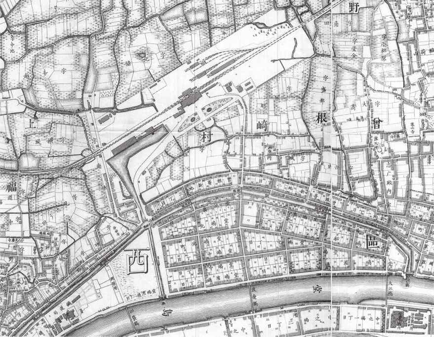
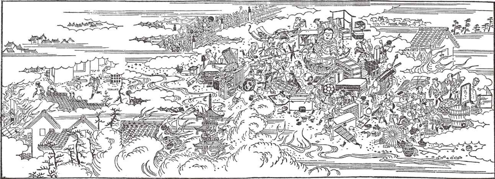
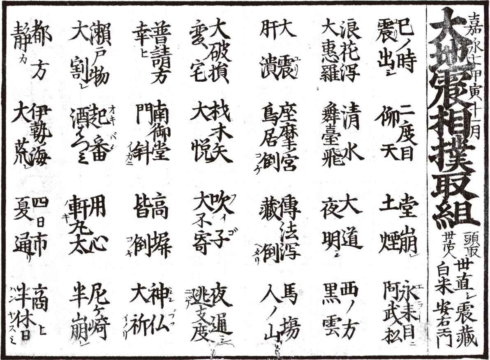

| 古地図が語る大災害:絵図・瓦版で読み解く大地震・津波・大火の記憶 | |
| 本渡 章 | |
| (2014) | |
この作品は縦書きでレイアウトされています。
また、ご覧になる機種により、表示の差異が認められることがあります。
一部の漢字が簡略字で表示されていることがあります。
目 次
第１章 地震と津波の国で
１ 本題の前に大事な話
コラム① 地震・津波も退散、要石とは
第２章 古地図にみる南海トラフ大地震
１ 江戸時代と平成は地続き
３ くりかえす広域災害
コラム② 大地震と「世直シ」の旗
第３章 関西の大地震・大津波
１ 古代から『方丈記』『太平記』の時代
コラム③ 慶長の鯰、安政の鯰
第４章 日本史上最大級の地震の記憶
１ 宝永地震を知っていますか
コラム④ 地震と雷、ところ選ばず
第５章 京阪神の大水・大火、その教訓
１ 都市のリスク、大水の場合
コラム⑤ 近畿大風水害と関東大震災
第６章 記憶の伝え方
１ 何を、どのように、伝えるか
コラム⑥ 語り継がれる稲むらの火の物語
装丁 濱崎実幸
まえがき
誰しも、生まれていない頃の話は、覚えていない。あたりまえである。しかし、当然至極のこのことが、大災害では困るのだ。筆者は大阪に住んでいる。常々、疑問に思っている。たとえば、大阪で大津波があったのを知っていますかと尋ねられ、「××年前にありました」と答えられる人がどれだけいるか。試しに、まわりの数人に訊いてみた。知らないという人、大阪には津波が来ないと思っている人が、多かった。知らなければ、災害はいつも想定外だ。そして、想定外であることが、被害を大きなものにする。
歴史を知る人は言う。大阪には何度も大地震がありました。大津波をともなう地震もあって、多くの方が亡くなりました。どうして、このことが広く知られていないのでしょうか。
知られていないのは、誰のせいでもない。人間は、忘れる生き物だ。記憶は、伝えなければ消えるものなのだ。こう言うと、また声が聞こえる。忘れないように、伝わるように、みんなで工夫し、努力していきましょう。そのとおりである。それは、とても大事なことだ。しかし、本書が話しかけているのは、みんなではなく、この本を手にしている読者である。つまり、あなた。とにもかくにも、あなたに知ってほしい。例えば、大阪で起きた地震と津波のことを。話は、大阪だけにとどまらない。関西あるいは西日本を飲み込む大災害が起こりえる。そうなれば、日本全体に深刻な打撃が広がる。大地震の前で、関西はひとつ。関西のどこかで起これば、被害は府県の境界を越える。そして、災害は地震・津波だけではない。
本書では、古地図をとおして災害を考えた。古地図は見てわかる。言葉よりもダイレクトで、かつイメージとして残る。特に大災害というような、頭で理解しただけではとらえきれないものと向かいあうには、古地図の力が頼りになる。古地図にはイメージの力がある。筆者はこれまで多くの古地図を見て、古地図の本を数冊上梓して、実感している。信頼している、と言ってもいい。古地図の読み解きは、知識だけでは進まない。リセットしてイメージして、一から感じて考える状態に人を引き戻す。それはとても貴重な体験だ。そして、それこそが古地図の力で、面白さで、信頼できる点である。
たとえば、「大坂大津浪図（＊１）」（第１章参照）。大阪の災害図の代表的な一枚で、安政の大地震による大津波の被害の図だ。日本の災害史に残る大惨事である。大阪だけではない。安政の大地震では、関西、四国、九州、東海、関東にまたがる広域が被災地になった。詳細は、本文をご覧いただきたい。そして、災害図が語りかける声に、耳を傾けていただきたい。
さまざまな大災害の地図を見るうちに、筆者はいつしか勇気づけられていた。街は大災害のたびに復興をくりかえした。街は今も、ここに、こうしてある。災害図には、そんな街と、そこに住む人々の足跡が刻まれている。そして、今これから、災害とどう向かいあうのか。ヒントを教えてくれる。
【関西と関西以外の地域の方に】
執筆にあたっては、本書で初めて古地図に触れる方にも理解しやすいよう、なるべく基本的な知識から書き起こした。関西の地理・歴史などの事柄も、これまでどおり盛り込んだ。災害を軽く見てはいけない。忘れてはいけない。向かいあうことから、はじめたい。より多くの読者にわかりやすく伝わる本でありたいと思う。
本書は、関西に住んでいる方、これから住もうと思っている方、関西に大切な人がいる方、仕事や旅行で訪れる方、関西に縁のあるすべての方にお読みいただきたい。もちろん、地震や津波は関西だけの問題ではない。日本に住んでいる限り、誰もが地震あるいは津波に見舞われる可能性がある。今の科学では、地震がいつ、どこで、どのくらいの大きさで起こるのか、予知するのは難しい。確率を告げられたとしても、それだけでは大事なことがわからない。大災害と向かいあい、考えておかなければならないことがあるのは、特定の地域の人だけではない。
本書は大阪を中心に関西の古地図を題材とし、地震・津波以外の災害図（大水・大火）も取り上げた。阪神・淡路大震災、東日本大震災のあとも大災害のニュースが続き、遠くない未来には南海トラフによる大地震大津波が確実視されている。南海トラフが引き起こす東海・東南海・南海の三つの地震津波が、連動すれば、西日本から中部・関東までの広域が災害史に例のない空前の被害に見舞われる。南海トラフによる超広域の大災害が過去から何度もくりかえされ、関西の古地図によって語り継がれてきたのは本文にあるとおりだ。しかし、その記憶は、生かされてきただろうか。
本当に日本は災害が多い。日常の生活のなかでこそ、考えておきたい、やっておきたいことはある。本書がそのささやかな一助になることを願ってやまない。
目で見てわかりやすい本をめざして、本文には多くのカラー図版を掲載し、付録もつけた。付録の表面に収めたのは次の三つの図。「大坂大津浪図」「大阪今昔三度の大火」は本文で解説しており、ともに江戸時代の代表的な災害図。「新雕大坂細見全図」は本文に出てこないが、近代古地図の嚆矢であり、明治一八年（一八八五）の大洪水の被災エリアが手筆で生々しく描きこまれており、ぜひご覧いただきたいと思って付録に掲載した。「新雕大坂細見全図」については拙著『続・大阪古地図むかし案内』で詳しく解説しているので、興味のある方は参照を願いたい。
付録の裏面「災害モニュメント探訪記」は、筆者が京都・大阪・兵庫・奈良・和歌山・徳島の各府県に残る大災害のさまざまなモニュメントを訪ね歩いた、写真と短文による記録である。表面とあわせて、忘れられてはいけない記憶を伝える助けとしたい。紹介した場所のなかには、有料施設や、見学の曜日・時間帯が制限されている施設もあるが、それらの情報はしばしば更新されるため割愛した。モニュメントによっては交通が不便な場所のものもある。訪問の前に最新情報の確認をおすすめしたい。
なお、本文で取り上げた地震のマグニチュードは、『理科年表 第87冊』（国立天文台編、丸善出版、二〇一三年）記載の「日本付近のおもな被害地震年代表（＊２）」を参照した。大阪・大坂の使い分けについては、大坂の陣や大坂三郷など一部の語句以外は大阪とした。
最後に題名『古地図が語る大災害』について。副題に「絵図・瓦版で読み解く大地震・津波・大火の記憶」とあるのは、大災害の記憶の多くが絵図や瓦版に描かれた地図によって語り継がれてきた歴史の反映だ。絵図・瓦版を古地図として読み解くことが、災害と向かいあう一歩になる。かつての人々が伝えたかった記憶に触れることから、日本に住み、今を生きる私たちの日々がはじまる。
１ 本題の前に大事な話
本題の前に、ひとつ触れておきたい話があります。古地図の話に早く進みたい方は、「２ 古地図、地震を語る」へ進んでください。以下、「明治の一枚もの地図」「古地図でみる阪神・淡路大震災」「古代大阪の図と地震」、少し飛んで「地震国の図」と続きます。とばしたところは、あとで必ずお読みください。ひとりひとりの災害対策にまつわる話です。
ヒントはどこに
古地図をとおして過去の災害を知り、これから起こるかもしれない災害に向かいあうヒントになればと、この本を書きはじめた。書きながら、災害と向かいあうとは、いったいどういうことなのか、という声がずっと頭から離れない。進めていくうちに答えが見つかるだろう、書くことじたいが向かいあう一歩なのだとも思ったけれど、災害というテーマは、それを許してくれないようだった。
筆者は古地図の愛好者ではあるけれど、災害の専門家ではない。できるとしたら、古地図を素材に、災害で何が起きたかをわかりやすく読者に伝えることだと、当初は考えた。そうして、あるところまで書きすすめたのだが、文章の上滑りに気づいて中断。原稿を捨てた。
しばらく悩んだ。そして、思った。災害と向かいあうとは、常に自分の身の上の話だと。今日は無事でも、明日の自分は被災者かもしれない。災害にまつわる本を書くとは、災害を外から語ることではない。自分の内側から災害を見直すことだと。だから、思った。わかりやすく伝えるのが自分の役目と考えたが、実はそんなに話はわかりやすくないのだと。
自分の内側から見たとき、災害とは、決して、わかりやすく伝えられるものではない。情報・知識を得ても、あとから疑問が次々と湧いてくる。体験しなければわからないことがあり、体験してもなおわからないことがある。災害とは、簡単にわかったと言っては、いけないもの。伝えようとして、伝わらないものがどこまでも残るもの。それが、あたりまえ。時間をかけ、手間をかけて、つきあって、それでも、とてもわかりにくい。阪神・淡路大震災、東日本大震災......大災害になるほど、そういうものなのだ。
とりわけわかりにくいのは、将来の災害に対して自分に何ができるかということだ。ひとくちに災害といってもさまざまで、実際に起きてみなければわからないことが多すぎる。まして、まだ何も起きていないときに、何をすべきか、考えるべきかといっても、ますますわからない。できることも、限られている。
国の政策や地域の防災対策の話をしているのではない。国や地域には過去の教訓を踏まえて、しっかり災害のことを考えてもらわなければならないが、ここで問題にしているのはそういう話ではない。自分自身が、今日からの自分をどうするのか、という話だ。
ひとつ、話題をとりあげる。災害をよく知る専門家は、実際、どんなふうに災害と向かいあっているのだろうか。何かヒントがあるだろうか。
三六人の「わたしの地震対策」
古地図から離れるようだが、本書の中身と切り離せない話。まわりまわって災害と古地図を結ぶ話でもある。
参考資料として挙げるのは、『AERA Mook 地震がわかる』（朝日新聞出版）。阪神・淡路大震災以後の地震研究の成果をまとめた啓蒙書である。
その中に「わたしの地震対策」と題したコラムがあり、三六人の執筆者全員が個人として地震にどんな備えをしているかを記している。地震に関する出版物は多いが、こういうコラムは珍しい。大学や研究所に所属する地震の専門家ばかりである。きっと周到な備えをしているにちがいないと思った。ところが、である。話はそれほど単純ではなかった。
三六人の専門家による「わたしの地震対策」を内容別に集計し、数の多い順に並べると、次のようになった。合計人数が三六人より多いのは、ひとりが複数の対策を挙げているため。
①家具の転倒防止（金具の取付け、家具の上に荷物を置かないなど）......一五人
②非常用飲料の買い置き（ペットボトルの水、缶入り飲料など）......一三人
③寝室に配慮（二階直下の一階に寝ない、二階を重くしない、二階で寝るなど）......一二人
④非常用食料の買い置き（乾パン、ビスケット、缶詰、フリーズドライ食品など）......一〇人
⑤家族の避難場所、連絡方法を決めておく......八人
⑥ラジオ、懐中電灯などの常備......七人
⑦防災や避難のための非常用袋を常備......五人
⑧住宅の耐震化（耐震補強、建て替えなど）......五人
⑨土地の調査（地震に強い土地かどうか調査し、居住地を選ぶ）......四人
⑩住居の移転・選択（軽量鉄骨など地震に強い家に住む）......三人
⑪防火用水を常備（浴槽の風呂水を抜かずに張っておく）......三人
⑫火の点検を怠らない（特に就寝前の点検）......二人
⑬ものを減らす（転倒、落下による被害を減らす）......二人
......いかがだろうか。
率直に言うと、筆者はいささか拍子抜けした。なぜなら、⑧⑨⑩をのぞけば、ふつうの家庭でもやっている基本的な防災対策ばかりである。読者の中には、すでに実行している方もおられるはず。いずれも大事な項目ではあるが、地震の備えとしては、これだけでは心もとないともいえる。だからだろう、何人かが、「特に対策らしい対策をしていませんが」「特別なことは何もしていないのですが」などと前置きをして、これらの回答をしている。
一方、⑧住宅の耐震化、⑨土地の調査、⑩住居の移転・選択の三つは、個人の地震対策として本格的だ。たとえば、土地の調査については、その地域の地質を調べ、家屋が建っている場所がかつてどんな種類の土地だったのかを明治時代の地図で確認すると記した回答者がいる。いかにも地震の専門家らしい。
しかし、ここで見る限り、本格的な対策を実行しているのは、専門家といえども少数派である。
地震の専門家が個人として取り組んでいる地震対策の多くは、一般市民がやっていることと変わりがない。本格的な対策をしたほうがいいとはわかっていても、経費や労力を考えると、なかなかできないのは専門家もふつうの人々と変わらないようだ。
対策どころか、危険地域に住んでいると答えた専門家も二人いる。一人は活断層の間近の密集市街地の路地裏の奥の木造二階建住宅、もう一人は津波が想定される海岸で単身赴任のアパートに居住。二人とも危険と知りつつ、特別な備えもないまま住み続けているという。
さらにこんな回答もあった。ある専門家は「地震が起きたとき、『これはどんな地震なのだろう』と、考える冷静さも大切だと思います」と書き、別の専門家は「被害地震が起きたときに地震計を持って現地にいつでも飛び出せるようにしています」と書いた。先にも述べたようにコラムのタイトルは「わたしの地震対策」なのだが、二人とも、これ以外に具体的な回答を挙げていない。
阪神・淡路大震災以後の防災意識
では、一般市民の防災意識はどうなっているのか。
まず、阪神・淡路大震災が起きた平成七年（一九九五）の秋から冬にかけて、大阪市が実施した「地震防災」市民アンケートの調査結果（大阪市発行『阪神・淡路大震災の記録』所収）から。回答者数は一七〇七人。その中に、回答者が実際に行っている地震対策を複数回答式で問う項目があり、回答者が一〇％以上を占めた答えは、次の六つだった。
「消火器を準備している」四一・五％
「高いところに物を置かないようにしている」四〇・五％
「浴槽の水を常にためた状態にしている」三四・三％
「たんすなどを倒れないように固定している」一五・五％
「住宅の周辺地域の状況を知るように努めている」一三・三％
「けがをしないように底の厚い靴やスリッパを準備している」一二・六％
いずれも、比較的手軽に実施できるものばかりだ。
本格的な対策として、次の二つが挙げられているが、回答者の割合は少ない。
「住まいの構造の補強をしている」二・九％
「ブロックべいが倒れないように補強をしている」一・三％
また、次の答えも多かった。
「とくに対策はたてていない」二一・二％
震災から一年経っていない時点のアンケートだから、回答者の防災意識は通常よりも高かったと想像されるが、この数字をどう思われるだろうか。
ちなみに、家庭での地震への備えは十分だと思うかどうか、という質問への回答は次のとおり。
「十分だと思う」〇・八％
「どちらかと思えば十分だと思う」一一・二％
「どちらかといえば不十分だと思う」四七・〇％
「不十分だと思う」三八・一％
不十分としている二つの回答を合わせると八五・一％にのぼる。
個人レベルの防災対策という点では、専門家も一般市民も似た傾向を示している。単純には比べられないが、これらを見る限り、そのようだ。
東日本大震災以後の防災意識
阪神・淡路大震災から一六年後に起きた東日本大震災で、防災意識に変化はあっただろうか。
東日本大震災から一年半を経た平成二四年（二〇一二）九月九日の日本経済新聞朝刊に、全国の男女一〇〇〇人（二〇代～六〇代）を対象にインターネットで行った防災意識に関するアンケートの調査結果が載った。
見出しに「家庭での災害の備え、『していない』三五％」とある。これは対策をやめたという意味ではなく、そもそも何もしていないという回答だ（正確な回答率は三四・九％）。備えが「緩んだ」という回答も九・六％あった。合わせると、四四・五％である。
一方、防災対策を「維持している」という回答は三八・五％で、「強化した」も一七％あった。こちらは合わせて、五五・五％。
全体を見ると、防災対策に意識的な回答が半数を少し超えているが、これはアンケート直前に、南海トラフ巨大地震の被害予測で死者最悪約三二万人に上るとの政府発表が新聞（二〇一二年八月三〇日付各紙）で大きく報道されたのが影響したと考えられる。その後も、地震に関連した記事がしばしば各紙面に出ているので、危機感の低下を防ぐ役目を果たしたはずだ。そのうえで、この調査結果である。
今行っている災害対策について複数回答形式で訊いた質問については、上位の回答が掲載された。回答者が多い順に、次のとおり。
一位「懐中電灯、医薬品などの準備」
二位「食料・飲料水の準備」
三位「家具や家電の転倒・落下防止」
四位「避難訓練や緊急連絡先の確認」
五位「現金や貴重品の持ち出し準備」
本格的な対策とされる居住地の調査や住宅の耐震化の順位は、少なくとも五位以内には入っていない。
一般市民が、地震対策として思い浮かべるのは主に身のまわりの細々とした備えであって、住宅や居住地そのものを見直すところまでは、なかなかいかない。それどころか、対策じたいに手がつかないという人も、半数近くいる。
地震被害は場合によって人命にかかわる。にもかかわらず、阪神・淡路大震災、東日本大震災という二つの大震災のあとのアンケート調査を見ると、防災意識は必ずしも浸透していない。
むしろ、同じような回答が、くりかえされているのに気がつく。
これは、いったい何を意味しているのだろう。
先に見たように、専門家といえども私生活での防災意識は、一般人と変わらない傾向を示している。専門家を貶めようとしているのではない。地震をはじめとする大災害、自然の猛威を前に、専門家や一般人の区別はない。できることは本当に限られているし、防災にどれだけお金と労力をつぎこんでも、安全が絶対に保証されるわけではない。いつ起こるか予測不能の災害のために、日々緊張を持続するのは難しい。たいていの人は、生活の営みに手が一杯で、防災にまでなかなか気がまわらないというのが、実情なのだ。
それだけではない。生まれる前の地震の記憶がないのはあたりまえ。生まれてから起きた地震についても、記憶は薄れていくのがあたりまえ。どれだけ衝撃的な災害でも、直接の被災者でなければ、忘れていくのにそれほど長い時間は、いらないようなのだ。
危険を忘れる心理
ここまでの話で、多くの人に災害への認識不足があるなどと言うのはたやすい。しかし、問題の根は、もっと深いところにありそうだ。
不安や恐怖を克服するのに、起きてほしくない事態の可能性を否定する心理がはたらく場合があるという。ジャレド・ダイアモンド『文明崩壊』に、こんな逸話が載っている。ダムからある程度近くに住む人々が最も決壊を心配し、遠くなるほど関心は薄れる。ダムの直近に居住する人は、決壊をまったく心配していないと口にする。つまり、直近に住む人は、危険を忘れることで日常を保っているというのだ。その人に向かって、現実を認識していないと指摘する者は、日常が何によって支えられるかという問題を忘れている。
危機意識を日々持ち続けながらふだんの生活を営んでいくのは、誰にとっても、おそらく、それほど簡単なことではない。大きな危険には、目を閉じる、忘れてしまうのが、日常を平穏に過ごすための知恵。心理的な自己防衛が、そこには働いている。もちろん、だからといって、目を閉じていい、忘れてもいいということにはならない。しかし、こういう人間心理を無視して、ただ防災意識の向上を訴えても、なかなかうまくいかないのではないか。
そういうお前は、どんな地震対策をしているのだと問われると、実は筆者もこれといった備えをしていない。ペットボトルの買い置きや風呂の水をためておく、といった程度である。居住地は地震被害の可能性の比較的低い地域だが、家は古く、特別な耐震化もしていない。他人のことを、えらそうに言う資格はない。
しかし、そんな人間が、このような本を書くのはおかしくないのかと問われたなら、だからこそ書くのだと答えたい。どうすればいいのか、筆者自身がヒントを得たいのだ。
良寛さんの真意
あらためて、まだ起きていない災害と向かいあうとは、どういうことかと考える。
起きたら大変だが、まだ起きていない、ずっと起こらないかもしれない。考えないといけないが、考えても無駄になるかもしれない、それでも考えないわけにいかない、しかし......。そんな堂々めぐりのうちに、時が過ぎる。多くの人にとって、日常の中で災害と向かいあうとは、こんなとりとめのないイメージではないか。それでは甘い、と否定したくない。平穏な日常は、そんなとりとめのなさと裏表なのだから。
とにかく、災害のことを忘れてしまいさえしなければ、いい。そうしておいて、それぞれのできる範囲で一歩ずつ対策をすすめていくのが、いい。そんな悠長なことで、今この瞬間に大災害が起きたらどうするのだ、と言われるかもしれない。誤解を招く表現かもしれないが、防災はやはりできる範囲しかできない、それで被災したらしょうがない、というのが多くの日本人の奥底にある心情だろうと想像する。そう考えると、先に挙げた専門家や一般市民の回答の背景にあるものが、理解されるように思える。
地震関連の本でしばしば引用される有名な言葉がある。良寛和尚が、地震で子供を失った友人に送った手紙の中の一文だ。
「災難のある時節には災難にあうが候。死ぬ時節には死ぬがよろしく候」
悲しみにうちひしがれている友人が、良寛に「このような災害を避ける方法はないものか」と訊いた手紙の返事が、これである。冷たく突き放しているかのように見えるが、そうではないだろう。小さい人間が大きな自然と向きあうには、あらがうよりは受け入れること。時節がめぐるのは世の習い。災害を避けようとするほど、災害がいたましいものに感じられるのだから、どうか友よ、災害を避けようとせず、時節が来たと受けとめてみてはどうだろう。
良寛さんの真意は何か。簡単にはおしはかれないが、単なるあきらめではない、強さと温かさの両面が感じられないか。この一節が多くの本で紹介されるのは、言葉の奥にあるものが心の深いところに響くからではないか。
反発を感じる読者もおられるかもしれないけれど、今とりあえず言えるのは、災害と向かいあうとは、どこまでも個人ひとりひとりの問題で、何よりも心の中の問題だということだ。知識や情報で解決できない部分。つまり、自分の気持ちをどうするのか、どう定めておくのか、ということではないか。
人生のリスク、人生のイベント
北原糸子・松浦律子・木村玲欧編『日本歴史災害事典』に、興味深い調査結果が載っている。阪神・淡路大震災後一〇年目に実施され、「被災者が震災体験にどのような意味づけをしているか」を問うたもの。質問紙調査で提示された意味づけの中から、被災者の共感度の高い順に上位五項目を次に並べた。
● 震災での体験は得がたい経験だった......八〇・一％
● 人生にはなんらかの意味があると思う......七二・四％
● 生きる事は意味があると強く感じる......七一・六％
● 現在がふつうの暮らしに感じられる......六四・〇％
● 震災後、人も捨てたものでないと感じる......五九・六％
震災体験を経て、人生を肯定的にとらえなおすようになった被災者が、こんなに大勢いるのに驚く。震災を得がたい体験とする一位の回答が、八割を超えているのは感動的だ。ほかにも人生や人間に対して前向きな回答が並んでいる。四位の「現在がふつうの暮らしに感じられる」とは、被災前の暮らしをとりもどした意識のあらわれだろう。
一方、割合としては大きくないが、次のような回答も出ている。
● 震災のことを思い出したくない......三〇・八％
● 震災での体験は過去から消したい......二九・六％
● 震災については触れてほしくない......二三・九％
● 震災の話は聞きたくない......一八・七％
思い出したくない・消したい・触れてほしくない・聞きたくない、という気持ちを震災から一〇年後も訴える人がこれだけいる。その理由はおそらく各人さまざまで、おしはかるのは難しい。震災体験の重たさの一端を感じさせる調査結果だ。
震災の傷は容易に癒されるものではない。それでも、全体としては震災の体験を人生にとって前向きにとらえなおそうとする傾向が見られるのは、これから遭遇するかもしれない災害を考えるうえで、ひとつのヒントになるだろう。自然は強大で、人間は弱く小さいが、ときには強くもなれる。数字はどこまでも数字でしかないが、数字から教えられることは少なくない。阪神・淡路大震災は現代の大都市で起きた初めての巨大地震だ。被災者の声に耳を傾けるべきことは多い。
とはいえ、災害とどう向かいあうのか、この問いかけに答えをだすのは、まだ早い。本書を読み終える頃に、読者がなんらかの示唆を得られたなら、嬉しい。
この話題は、いちおうここまで。次の項目から、いよいよ本書のメインテーマに入る。
２ 古地図、地震を語る
さて、ご記憶でしょうか。コラム「わたしの地震対策」の中に、明治の地図で土地を調べるという話題が出ました。古地図がメインテーマの本ですから、このへんで、まずはひとつ古地図を用いた地震対策の話をします。
そのあと、かつての人々が、地震にどんなイメージを描いていたかがわかる図も、出てきます。
明治の地図の使い方
先述の明治の地図を題材にしたコラム「わたしの地震対策」の執筆者は、東京大学地震研究所教授の島崎邦彦。家を建てる必要に迫られたが、まず地盤の良し悪しが重要だと、土地を見てまわったが、予算に合うと思えば崖っぷちだったり、崖の真下だったり、思うようにいかなかった体験を記している。注目されるのは、次の箇所である。
「ミニ開発では土地の状況が一目瞭然なのに、大規模開発ではならしてしまうので、ちょっと目にはわかりません。注意深く見ると土地が低く、昔の沢を埋め立てたところが、現在は一等地として通用しています」
似た話は、筆者にも覚えがある。昔、宅地の地質調査のアルバイトをした時のこと。地質調査は、住宅を建てる前に必ず行われるもので、宅地の数箇所に小型のボーリング機械を据えつけて、地中に鉄杭を打ち込む。硬い地盤に杭が届くと、打ち込みは止まる。深くへ届くほど、その土地は軟弱という判定になり、家を建てる時は土台の補強工事などが必要になる。
土地が軟弱かどうかは、見た目でわからない場合が多い。杭が深く入る土地は、訊いてみると昔は溜池や水田だった場合が多かった。他所から運んだ土で造成した土地も、地盤が軟弱になる。引用文にあるような「昔の沢を埋め立てたところが、現在は一等地として通用」しているような例は、珍しくない。更地になれば、まず見分けはつかない。現在も各所で宅地開発は進行中である。購入するなら、調べたうえで、納得できるまで検討するのが望ましい。
居住地が以前どんな土地だったかは、古地図を見るとわかる。どの年代の地図を見るのが適当か。コラムは、こう続く。
「結局不便ですが、土地の状況がよくわかり安全と考えられる宅地を、明治時代の地図で昔の地形どおりであることを確認して購入し、ダメの連発にあきれていたカミさんをほっとさせました」
なぜ、明治の地図なのだろうか。理由は書かれていないが、想像はつく。日本で、近代的な測量技術を用いて地図がつくられるようになったのは、明治以後である。江戸時代の地図でも部分的に測量は行われていたが、縮尺が細かくないうえ、記号の種類も少なく、地勢の細部は読みとれない。当時の地図に精密さはそれほど求められなかったのである。
土地の来歴をたどるには、できるだけ過去にさかのぼって土地の状態が確かめられる年代の地図が望ましく、かつ、情報の精度が高い地図でなければならない。両方の要望に応えるのが明治の地図である。
たとえば、次に掲載した「内務省大阪実測図」は明治二一年（一八八八）発行（次の図）。近代測量による最初期の大阪地図である。その場所がどんな種類の土地だったかを確認でき、かつ縮尺五〇〇〇分の一で、十分の精密さを備えている。土地の来歴を知るための信頼度の高い情報源といえる。ちなみに、現在、国土地理院が発行している国土基本図の縮尺が五〇〇〇分の一、または二五〇〇分の一だ。国土基本図はその名のとおり、国土の開発、保全の基礎資料となる精密地図である。

梅田・曽根崎周辺（「内務省大阪実測図」より。大阪市立中央図書館蔵）
先ほどの引用文で重要なのは、「土地の状況がよくわかり安全と考えられる宅地を、明治時代の地図で昔の地形どおりであることを確認」という箇所だ。
何をするのかというと、まずは、土地とその周辺の状態を実際に見て、沢地や崖が近くにないか、埋め立てや盛土が行われた形跡がないか、などを確かめる。ようするに地盤が軟弱でないかどうかを、わかる範囲で観察する。ある程度の見当がついたら、明治時代の地図を広げて、その場所がかつてはどんな種類の土地だったかを見る。
もし、目で見て問題のある土地ではないと判断でき、明治の地図で確かめても、現在の状態と比べて改変がない（土地の形態を大きく変える造作が行われていない）のなら、地盤に関しての危険度は低いといえる。
ただし、至近距離に活断層があったり、津波の恐れのある海岸線に位置している場合などは、もちろん話がちがってくる。リスクのある場所で住み続けるには、それに見合った生活の考え方が必要かもしれない。リスクの大小にもよるが、そこから先は個人の信条、生き方の問題だろう。
いずれにせよ、住んでいる場所がどういう土地なのか、まずは知っておくことだ。
図書館を利用する
「内務省大阪実測図」は細密さが利点だが、反面、大阪全体を一枚に収めると大きくなりすぎる。そのため、何枚もの地図に分割されており、広域を俯瞰して見るのが難しい。現在市販されている一般的な市街地図（三万分の一・一万五〇〇〇分の一など）と対照しようとしても、縮尺に差があり、見にくいだろう。地名が現在と異なっていたり、区画整理や開発、造成が行われた場所だと、新旧の地図のそれぞれの場所がどう対照しているのか、わかりにくい場合が出てくる。
「内務省大阪実測図」は、大阪市立中央図書館（西区）、大阪府立中之島図書館（北区）に所蔵されている。申請すれば、閲覧もできる。当面、土地調査の必要がなくても、古地図に興味がある方なら一度は見てみたい地図だ。情報量が多いのが、やはり魅力。思わぬ発見を楽しめる可能性もある。
試みに、当時の大阪駅周辺を見てみる。大阪駅は、もともと市街地の外の梅田にあり、梅田は埋め田が転じた呼び名だとは、よく知られた話だが、図ではそれが一目瞭然だ。大阪駅はまだ広々とした田畑で囲まれている。曽根崎はまだ村で、新地が市街の北端を縁どっている。現在のキタ界隈の賑わいが噓のような、田園風景である。
次の図は、小橋村の字味原池から四天王寺にかけて。現在は市街地だが、明治時代には、このように大きな池があった。まわりは田畑が広がっている（次の図）。
字味原池から四天王寺周辺（「内務省大阪実測図」より。大阪市立中央図書館蔵）
明治の一枚もの地図
おおまかに地勢をつかむには、「内務省大阪実測図」のような細密な地図より、一枚ものと呼ばれる地図のほうが便利だ。分割されたり製本されたりせず、一枚で全貌が見られるので一枚ものという。
明治時代の大阪の一枚もの地図は数多く発行され、大阪市立中央図書館、大阪府立中之島図書館に収蔵されているものは、閲覧できる。大阪市立中央図書館には一枚もの地図を常時公開しているコーナーもあり、所蔵地図の一部が申請なしで自由に見られる。
ここでは一例として、明治一五年（一八八二）発行の「改正新版大阪明細全図」をとりあげる（次の図）。
改正新版大阪明細全図（大阪市立中央図書館蔵）
ひとまずざっと見渡して、大阪の市街の原形をつかんでいただきたい。
ご覧のとおり、当時の市街の範囲は小さい。東・西・南・北の四区しかない。狭い市域が川筋で網の目に覆われている。堂島の北側に蜆川、大阪城の東に猫間川など、現在はない川が流れ、後に埋め立てられた多くの堀川が街中を縦横に覆っている。湾岸では洲と洲の間を縫うように川が走り、海に出る。池もあちらこちらに見える。水運の便利さで商業が発展し、池や川の水、地下水で農産物にも恵まれた、そんな土地柄が目に見える。それらの水の風景の多くが、今は陸地に変わっている。
市の周囲の村々には田畑、湾岸の洲には新田が目立つ。湾岸には、このあと、近代的な大阪港が建設され、一帯は工業地域、住宅地域として生まれ変わっていく。現在の地図と見くらべると、多くの洲がつながって陸地になっているのがわかるだろう。
産業構造の転換、電車、地下鉄、自動車など陸上交通網の発達、人口の急激な増加が、街の形を変えたのである。
古地図でみる阪神・淡路大震災
阪神・淡路大震災を古地図の視点から見直すと、どうなるだろうか。
ここに、興味深い地図がある。
阪神・淡路大震災の翌年に発行された『阪神・淡路大震災 大阪市消防活動記録』（大阪市消防局）に掲載されたもので、作成者は大阪市立大学理学部の三田村宗樹講師（当時）。震災による液状化、家屋損壊の被害と旧河川跡の関係の調査結果が図示されている（次の図）。場所は尼崎市から大阪市にかけてのエリアだ。
阪神・淡路大震災での淀川河口周辺地域の液状化・家屋損壊被害の分布と旧河川跡（大阪市消防局『阪神・淡路大震災 大阪市消防活動記録』より）
▲印が液状化があったところ、●印が家屋損壊があったところ。網点であらわされたラインは、かつて河川が流れていた埋立地域である。
解説文（三田村宗樹）によると、たとえば大阪の主要な川筋の新淀川は、明治期に開削されてできた人工河川で、それまでは淀川の分流の中津川が大きく蛇行しながら流れていた。旧河川の中津川流域は、沿岸部の埋立地と同様、ゆるい土砂で埋め立てられており、しかも現在の河道から旧河道に沿って地表の流水が浸透しやすく、地下水位も高いため、液状化の素因が揃っている。地震が起きた時、液状化と家屋損壊が発生したのは、やはり旧河川の中津川流域だった。そうした地盤の上に、堤防などが築かれると、被害が大きく拡大するおそれがあるが、実際に淀川右岸堤防の一部で、液状化による亀裂が発生したという。
解説文はさらに、そのほかの調査結果として、神戸から尼崎にかけての埋立地域が特に液状化の被害が大きく、大阪から堺、高石、泉大津、岸和田、貝塚、泉佐野までの沿岸埋立地に、やはり液状化現象が目立つことを指摘。人工的につくられた地盤は、地震に対する強度が低く、工法の見直しと、地盤の特性を考慮した防災対策が望まれるとしめくくっている。
阪神・淡路大震災のこの教訓は、開発・造成が進む全国の都市圏で、今もなお生きている。対策はどこまで、実施されているだろうか。
図にもう一度目をやる。右側中央に大阪城があり、その西側に広がる市街に、堂島川、土佐堀川が流れ、中之島が横たわる。その南側、かつて船場・島之内あるいは西船場と呼ばれた市街に、網点のラインが縦横に交差している。旧河川跡、つまりかつての堀川が埋め立てられた跡である。
液状化被害を示す▲が、旧河川跡の土佐堀川近くに見える。そこが、現在の河道に近い旧河川跡（埋立地）という液状化しやすい条件の場所であるのは、おわかりいただけるだろう。阪神・淡路大震災での大阪の震度は四だった。震源から大阪はやや離れていたため、四ですんだのだが、それでも液状化被害は起きた。
大阪市の真ん中を南北に上町断層のラインが走っている。大阪では、このごろ話題の多い南海トラフ巨大地震だけでなく、上町断層を震源とする直下型地震が懸念されている。
くらべて見ていただくために、江戸時代の大阪の古地図を掲げた。元禄年間（一六八八～一七〇四）に発行された「辰年増補大坂図」である（次の図）。
辰歳増補大坂図（大阪市立中央図書館蔵）
市街の中心部に堀川で囲まれた船場、島之内があり、その西側に、縦横に堀川が流れる西船場エリアが見える。大阪は堀川の街だったが、その多くが明治以後埋め立てられて街から消えた。現在の風景にその痕跡は見えないが、こんなかたちで土地の来歴は残る。古地図はそれを記憶している。
古代大阪の図と地震
そもそも大阪という土地は、地震に強いのだろうか。
この問題を考えるには、現在の市街が広がる大阪平野が、どうやってできたのかを考えないといけない。となると、時代は古代にさかのぼる。そんな昔の地図は残っていないので、考古学や地質学の成果をもとにつくった復原図を参照することになる。
次に挙げるのは古代の大阪の復元図である（次の図）。作成者の日下雅義によると、これは六～七世紀の頃の摂津・河内・和泉の景観で、現在の大阪府とほぼ重なる（日下雅義『地形からみた歴史』）。
古代の大阪（日下雅義『古代景観の復原』中央公論社より）
図中に難波宮とあるのが、上町台地の北端にあった古代の都で、今では史跡公園になっていて、大阪城が目の前にある。上町台地は現在の大阪市の中心を南北につらぬく、街のいわば背骨である。台地の南に住吉大社があるので、今の大阪市街とくらべての位置関係はおおよそ、見当がつくだろう。
二一世紀の大阪の地形からみて大きく異なっているのは、陸地が少ないことだ。上町台地の東側には草香江と記され、湖が広がっていた。もともと草香江は、その名前のとおり難波乃海（現在の大阪湾）とつながった入り江だった。河から運ばれた土砂で天満砂洲がのびて海と遮断され、草香江は湖になった。河内湖とも呼ばれる、この湖は後に干上がって陸地になる。
西側は難波乃海に沿って天満砂洲が南北に長くのびている。上町台地と海は砂洲をはさんでいるが、距離は今よりもかなり近い。
上町台地をはさんで東は湖、西は砂洲。今では一体となって大阪平野を形成し、土地の来歴はわからなくなっているが、古代の図によれば、上町台地をのぞけば地盤は軟らかいということになる。
この問題を過去の巨大地震での震度分布との関係で調べた結果が、都司嘉宣『千年震災』に載っている。安政元年（一八五四）に起きた安政南海地震（第２章で詳述）の倒壊半壊家屋の記録をもとに、この地震での大阪平野の震度分布を調べたところ、震度のピークをなしている地域は、かつての河内湖（草香江）のあった場所と重なっていた。また、西横堀を境に西側の震度が大きく、これは上町台地の西側の天満砂洲の一帯と重なる。かつて海や陸、あるいは沼地や湿地であった場所は、陸化して千年以上の時が経っても、地震の際に揺れが強く現れる場所であり続けると、同書は警告している。
大阪の活断層分布
それなら、大阪の他の地域は安心なのかというと、そういうわけにはいかない。
日本の多くの都市は、海岸沿いの河川が運んだ土砂がつくった平野の上にあるから、おおむね地盤は軟弱で、地盤が強固だというケースは少ない。そのうえ、地盤が強固であっても、日本列島には多数の活断層が走っているので、安心できない。磐石といえる地勢はほとんどないといっても言い過ぎではないようだ。
上町台地にしても、上町断層帯と呼ばれる活断層が走っており、いつかは直下型地震に見舞われる可能性がある。もともと上町台地は、活断層が過去に動いたために土地が隆起して生まれたもの。上町台地とその西側では約八〇〇メートルもの岩盤の段差があり、いわば地下にそびえる山地となっている（地学団体研究会大阪支部『大地のおいたち』）。
大阪にはこのほか、大阪湾南部には大阪湾断層帯、大阪平野と生駒山地の境界に生駒断層帯、高槻市街北部から兵庫県有馬に向かって有馬・高槻断層帯、大阪府島本町から京都府綾部市へは三峠・京都西山断層帯が断続的に続く。活断層は大阪市街を貫き、さらに大阪平野を囲むようにしてのびている（次の図）。
大阪の活断層の分布（活断層研究会編『新編日本の活断層』「付図Ⅱ」東京大学出版会より）
そんなことを言い出すと、住む場所がなくなってしまうではないかといわれそうだが、これは大阪に限った話ではない。関西エリアの話でもない。西日本、東日本という問題でもない。日本列島じたいが昔から地震が多かった。日本は地震の国である。
断層と地形からみた京都
京都は地震に強いだろうか。
京都府には隣接する府県にまたがって活断層がいくつも走り、その密度は高い。丹後半島には山田断層帯、綾部市から京都盆地西部にかけてのびる三峠・京都西山断層帯、京都盆地南東部から若狭湾に至る三方・花折断層帯、京都市山科区から奈良県桜井市へは奈良盆地東縁断層帯、京都府南東部から三重県西部へは木津川断層帯、京都府八幡市近くから生駒山地までのびる生駒断層帯があり、さらに京都に影響が大きい震源として有馬・高槻断層帯がある。
これらの活断層による内陸型地震のほかに、南海トラフ巨大地震のような海溝型の大規模な地震が起きた場合も、京都は被災地になる。
京都は歴史的にも地震が多く、慶長伏見地震（一五九六）、寛文近江・若狭地震（一六六二）、北丹後地震（一九二七）などで大きな被害をうけてきた。中小の地震も数えれば、頻度はかなり高い。しかし、京都といえば、たびたびの戦乱による被害の印象のほうが強い。大震災と呼ばれるような壊滅的被害の経験がないためだろうが、だからといって安心はできない。
京都盆地が周囲を硬い花崗岩の地盤に囲まれていることが、大震災を引き起こさなかった理由のひとつとして考えられる。江戸時代までの旧市街は、こうした地震に比較的強い地盤の上にあった。しかし、近年になって事情はちがってきている。
図は、江戸時代に発行された「新撰増補京大絵図」（次の図）。当時の京の町は、豊臣秀吉によってつくられた御土居に囲まれている。御土居は町の防衛線で、賀茂川などの河川による水害を防ぐ役目を果たしていた。市街地が今よりかなり小さい。周辺には村々の水田が広がり、竹林も多かった。
新撰増補京大絵図（国立国会図書館蔵）
維新後の京都は、江戸時代の京の町の拡大で、大きく地図が塗り替えられた。明治中頃の京都市の人口は約三〇万人だったが、現在は約一四二万人。ふくらんだ人口の背景には、ふくらんだ市街がある。大正七年（一九一八）の第一次市域拡張で面積は約二倍、昭和六年（一九三一）の第二次市域拡張でさらに五倍近くにまで面積は増えた。近隣の市町村を合併し、大京都市が生まれたあとも、たびたび周辺町村の編入があった。鴨川と桂川の合流地を中心に広がる一帯は、かつての水田地帯である。地盤が強いとはいえないが、今は市街に編入されている。
伏見の南部にあった巨椋池は、昭和になって干拓された。まわりにあった沼沢、湿地も、今はない。実は、巨椋池も沼沢、湿地も、かつてこの地に広がっていた湖のなごりである。地盤としては軟弱だ。この一帯は今、宇治市に属しているが、位置的には京都市と隣接している。
京都のもともと地盤が強い地域でも、古い家屋の密集地や、耐震化の進んでいない地域では、大地震が起これば、大きな被害をうける可能性がある。
先述の北丹後地震（一九二七）以後、規模の大きな地震が起きていないのも気にかかるところだ。当時とは比べものにならないほど、現在の京都は大都市に成長している。地震から守るべきものを多く抱えている。
地震からみた神戸
神戸といえば、阪神・淡路大震災が思い出される。
大震災を引き起こした兵庫県南部地震の震源は、六甲・淡路島断層帯だった。大阪府北西部から淡路島北部にかけてのびているのが断層の主部で、淡路島北部から淡路市付近に至る野島断層帯、さらに淡路島中部から南あわじ市にかけて先山断層帯があり、六甲・淡路島断層帯とはこれらの総称である。このラインに沿うようにして、阪神間の諸都市、そして神戸が連なる。
淡路島南部は、四国から近畿に至る中央構造線断層帯の通り道にもなっている。そのほか、大阪湾南部から神戸市沿岸に続く大阪湾断層帯があり、有馬には大阪府高槻市から有馬・高槻断層帯がのびていて、岡山県東部から兵庫県南東部にかけては山崎断層帯が分布している。
これらの活断層が引き起こす内陸型地震のほかに、南海トラフ巨大地震が起きた場合にうける被害も考えておかなければならない。
過去の被害としては、慶長伏見地震（一五九六）で兵庫や有馬に家屋全壊多数、北但馬地震（一九二五）では兵庫県の日本海沿岸、豊岡市などに家屋全壊と焼失が多数あり、死者・行方不明者は約四二〇人にのぼった。北丹後地震（一九二七）、昭和南海地震（一九四六）でも死者がでた。
阪神・淡路大震災より以前の地震の記録は少なくないが、壊滅的な被害が伝えられていないのは、神戸が大都市になり発展したのが、明治以後だったという歴史が関係している。大正時代の北但馬地震以後、目立った地震被害が増えているのは、都市化の反映でもある。
平清盛が宗との貿易のためにひらいた港が、神戸のルーツ。天然の良港だったが、室町時代の後期から江戸時代にかけては、堺の繁栄におよばなかった。明治維新の時に開港され、外国人居留地ができ、貿易港としての躍進がはじまった。開港時の神戸の人口は約二万五〇〇〇人。明治四五年（一九一二）の人口約四三万人。昭和一四年（一九三九）に人口一〇〇万人突破。戦災をはさんで、戦後は再び人口増加に向かった。急速な都市化は、山を削って海を埋め立てる土地開発を呼んだ。山と海の両方で新たに生まれた土地に、住宅や工場、さまざまな施設が建てられた。
もともと神戸の背後に連なる六甲山地は、花崗岩と石灰岩から成り、地震に強い地盤を持つ。しかし、埋め立てたり、斜面を切り取ったり、盛土をしたりした場所は、地盤としては弱い。住宅の密集地では、震害だけでなく、その後の火災が脅威になるのは、阪神・淡路大震災の経験が物語っている。神戸市の震災前の人口は約一五〇万人だった。
図は、昭和五年（一九三〇）発行の「大神戸市を中心とせる名所鳥瞰図絵」（次の図）。大正から昭和にかけて、全国各地のパノラマ図を描いて一世を風靡した吉田初三郎の作。山と海にはさまれた市街地の発展ぶりがよくわかる。
大神戸市を中心とせる名所鳥瞰図絵（吉田初三郎作。神戸市立中央図書館蔵）
阪神・淡路大震災の死者の多くは、住宅の倒壊で下敷きになったことが死因となった。住宅の耐震化は、震災が残した大きな教訓だ。この年はボランティア元年とも呼ばれ、無名の市民の力を世に知らしめた。近代化された大都市を襲った直下型地震を、関西が日本で最初に体験した。大震災からすでに約二〇年が経った。語り尽くせないほどの経験を、関西は、日本はどこまで共有しただろうか。
地震国の図
日本が地震の国であるのは、昔から知られていた。
図は、「大日本国地震之図」（次の図）。江戸時代初期に作成された図で、龍に囲まれた日本の国土を描いている。中心に山城国（京）が見え、その隣が津の国（大阪）。巨大な龍がひとたび動けば国土が鳴動し、地震が起こるという。題名と並んで、行基菩薩之御作と記されているのは、行基図と総称された中世の一連の地図を意識したもので、鬼女が住むという伝説の羅刹国などが載っているのとあわせて、図に異様な趣を与えている。
大日本国地震之図（個人蔵）
「大日本国地震之図」と似た図は他にもある。この図の系譜として江戸時代に、「大日本地震之図」「地震の弁」などと題された図があり、鎌倉時代には金沢文庫版「日本図」という同様の図があった。
黒田日出男『龍の棲む日本』によると、これらの図には共通点がある。日本列島をとりまく龍は、頭が尾を嚙んで丸く輪になっており、頭と尾がつながるところに剣と珠が描かれているのだ。珠は、鯰を押さえつける霊験があるとされる要石（コラム①参照）。剣は、要石で鯰を鎮める鹿島の神が持っているもの。鯰は、龍と同じく地震を起こす生き物とされていた。同書には、一七世紀後半に龍に代わって大鯰が史料に登場し、一八世紀初頭には大鯰が地震を起こすという説が定着したとの見解も記されている。
「大日本国地震之図」の根底にあるのは、大地震から国土を守りたいとの願いだ。表現の仕方が中世的世界観で彩られているので、現代人には受け入れにくいかもしれないが、日本が地震国であることを忘れず、大地震への備えを怠らないことを説いているのである。
まずは、忘れないことが肝心だ。地震対策でいちばん重要なポイントが、この忘れないことである。
なぜなら、人間は忘れる生き物だから。そして地震は忘れてはならないものの代表にもかかわらず、忘れられやすいものの代表でもあるからだ。
なぜ、地震が忘れられやすいかについて、寺田寅彦はエッセイ「天災と国防」で、こう書いた。
「そのおもなる原因は、畢竟そういう天災がきわめてまれにしか起こらないで、ちょうど人間が前車の顚覆を忘れたころにそろそろ後車を引き出すようになるからであろう」
寺田寅彦は、明治生まれの地球物理学者。著名なエッセイストでもあり、関東大震災で被災し、地震や津波、火災、噴火など災害についての文章をいくつも書き残した。右の文は、災害対策が進まないのは災害と災害のあいだの期間が非常に長く、その脅威を人が忘れてしまうためである、という指摘なのだが、そのとおりだろう。人の寿命から考えて、百年に一度、千年に一度の大災害の可能性を忘れるなといわれても、確かに難しい。
震災直後はまだしも、年月が過ぎてなお緊張を持続させるのが決してやさしくないのは、この章の最初に触れたいくつかの例でも明らかだ。しかし、忘れたことで被害を大きくして困るのは人間自身である。
寺田寅彦は「天災と国防」で、もうひとつ大事なことを指摘している。
それは、文明が進むほど災害の被害は大きくなるということだ。関東大震災を経験して、寺田寅彦はその思いを強くした。電気・ガス・水の供給、交通網、電信網、都市での人口密集......国全体が高度な有機体となった近代以後の日本は、同じ災害で過去とはくらべものにならないほどの被害をうける。ひとつの地域の被災が、他の地域にも重大な影響をおよぼす。文明が高度になり、便利で快適になるほど、災害の脅威は増すといっていい。
風光と名産と大災害と
日本は災害の多い国だ。
まわりの海には、地震の震源となるプレートが四枚も、列島を囲むようにしてのびている。世界で起こるマグニチュード六以上の地震のおよそ二割は日本で発生している。地震と関係の深い火山については、世界にある約一五〇〇の活火山の八％近くが日本に分布している。日本の国土面積が地球表面のわずか〇・〇八％に満たないことを思えば、驚くべき高密度だ（巽好幸『地震と噴火は必ず起こる』）。
日本は自然の恵みの多い国だ。
江戸時代の名所絵をひらけば、美しい浜辺、緑の山並み、流れる河川。現在も、森林と水はゆたかな資源、各地に湧き出る温泉、海と山には珍味があふれる。自然の富に恵まれた日本。しかし、これらはみな、いつかは起こる大災害と、いわば引き換えのようにして与えられたものだった。人をうるおす風光美も名物も、地震や噴火による長年の地殻変動によって、つくりあげられたのである。
そのことをまったく知らなかったわけではない。しかし、実感にはほど遠かった。そうして、いつのまにか忘れていた。
大災害が起こるたび、自然の恐ろしさに立ちすくむ。一方、それでも日本の自然は美しいと思う。恐ろしい顔があるから余計にそう思う。平穏のありがたさがしみてくる。
地震は、周期的に活発化する。生きている間に大災害に巻き込まれる可能性は、誰にもある。そう知りつつ、（月並みな言い方だが）日々を大事に生きていきたい。そして万一、大災害に出くわしたら、来るものが来たと、（覚悟ができているわけではないが）受けとめたい。
そのためには、一にも二にも大災害とはどういうものか、知っておくことだ。新しい情報はもちろん必要だが、過去の記憶はそれに劣らず大切だ。記憶が生かされなかったことが、大災害をしばしば呼んだ。
古地図が記憶をひもとく糸口になる。次の章で、一枚の古地図をとりあげる。今からおよそ一六〇年前に起きた南海トラフ大地震の記憶が刻まれた地図である。
箕面瀧（『摂津名所図会』より）
コラム❶
地震・津波も退散、要石とは
建築で要石といえば、煉瓦や石などを積みあげてつくったアーチの最上部中央にさし入れ、固定する石をさす。それがないと全体が崩れてしまう。まさに肝心要の重要な役目を持っている。
話題が地震になると、要石はさらに重大な意味を持って、絵の中にしばしば登場する。図はその一例。地震よけの鹿島の神が、大鯰を「要石」と記された大石で押さえつけている。地震は大鯰が起こすとされ、要石には暴れる鯰をしずめる力があるとされた。図は、要石にひれふす小鯰の姿がユーモラスだ。鹿島の神が天降りの時に座したのが要石ともいわれ、逸話には事欠かない。江戸時代の末期、こうした鯰絵と総称される刷り物が数多く出回った。
茨城県鹿嶋市にある鹿島神宮を本社として、各地に鹿島神社と要石神社がある。地震・津波よけの霊験を伝えられるのは、鹿島の神だけである。
黒田日出男『龍の棲む日本』に、仏教では大地の最も深いところに届く長大な柱を金輪際と呼び、要石とは本来、金輪際をさすとある。要石は地震と関係が深く、揺れる大地をつなぎとめる役割を果たしている。琵琶湖に浮かぶ竹生島が、じつは金輪際から生え出た金剛宝石の島で、まわりを大鯰にとり囲まれていると書かれた「竹生島縁起」も、中世から伝わっている。竹生島は地震があっても動かない不動の島であるという。
東の鹿島神宮、西の竹生島。要石にまつわる伝承の地は、日本が昔も今も地震の国であることを語りかけている。
要石が地震鯰を抑える鯰絵（国立国会図書館蔵）
１ 江戸時代と平成は地続き
第２章では、関西を襲った南海トラフ大地震の代表例をとりあげます（その他の実例は第３章で紹介）。
素材は、一枚の災害古地図。瓦版として発行されたものですが、嘉永七年（安政元年）に、大阪に甚大な被害をもたらした安政南海地震の模様を伝えています。
図の題名は「大坂大津浪図」。その名のとおり、記録的な大津波が大阪市街を襲いました。
その時、何が起こったか。どんな教訓を残したか。江戸時代から平成へ、今に通じる話です。
大阪にも大津波があった
古地図には災害地図と呼ばれるジャンルがある。
江戸時代には大火、大水、地震など、大きな災害が起きた時、被災した地域を示した地図入りの瓦版がつくられ、巷で売られた。被害の状況を報告する文章が載り、遠方の親戚や家族、知人に被災地のようすを知らせたりするのに使われた。明治時代になっても、被災地のメディアとして出回ったが、やがて新聞が普及すると、姿を消していった。
この章でとりあげるのは、幕末の大地震で起きた津波の災害地図だ。題名を「大坂大津浪図」という。
大阪で大津波といわれても、ピンとこない読者も多いかもしれない。そもそも大阪で大地震があったとは聞いたことがないという声もありそうだ。
じつは、大阪にも大地震と大津波の記憶がある。
今からおよそ一六〇年前、大津波で多くの家が壊され、大船が次々打ち上げられ、いくつもの橋が流され、大勢の人が死んだ。津波を起こした地震のマグニチュードは八・四。安政元年に起きたので、安政南海地震と呼ばれている。震源は南海トラフである。
南海トラフは東海・東南海・南海の三つの地震をひきおこす震源である。トラフとは海底の地形の名称で、細長い溝のかたちをした地形のうち、水深六〇〇〇メートル以内のものをさす。水深六〇〇〇メートル以上になると海溝と呼ばれる。新聞などで海溝型地震という用語がしばしば出てくるが、トラフを震源とする地震も、その中に含まれている。トラフや海溝が震源となるのは、そこが異なるプレート（岩盤）同志が押し合って、ひずみのエネルギーを溜め込む場所だからだ。限界まで溜まったひずみは一気に放出されて、地震になり、津波をひきおこす。
南海トラフは、駿河湾（静岡県）から日向灘（宮崎県）まで、太平洋側の近海にえんえんと続く。東海・東南海・南海の三つの地震は、連動して起こることも多い。南海トラフを震源とする大地震は、いつかまた起こる。
南海トラフという言葉は、東日本大震災以後、よく聞かれる。新聞でも頻繁に関連記事がとりあげられるが、ここでは日本経済新聞を例に、主な記事を見る。各紙でも同様の主旨の記事が一面に載ったので、ご記憶の読者も多いだろう。いったい、南海トラフによる大地震とは、どんなものなのか。
南海トラフ巨大地震の新聞報道
まず、平成二四年（二〇一二）四月一日付朝刊に、
「南海トラフ 最大級地震の想定公表
津波二〇メートル超六都県
震度七、一〇県に拡大」
との見出しで、南海トラフを震源に、千年に一度の最大級の巨大地震（マグニチュード九・一）が起きた場合の津波高と震度分布の予測が載った。関東、東海、関西、中国、四国、九州にわたる広域が被災し、津波高では高知県黒潮町で最大三四メートルを超え、一一都県九〇市町村で一〇メートル以上とした衝撃的な内容。平成一五年（二〇〇三）に実施された前回の推計は数百年に一度の地震を想定したため、津波高の予測が二〇メートル以上の自治体はなかったが、予測は大幅に修正された。震度についても、二四府県六八七市町村で震度六弱以上の揺れが想定され、前回推計の二〇府県三五〇市町村を上回った。
大阪府下では、津波高が最大約四メートル、震度は最大六強と、前回の推定からやはり高くなっている。震度七の地域も一〇県におよぶ。
以後も、同年八月三〇日付朝刊に、
「南海トラフ地震 政府被害想定
死者最悪三二万人
全壊・焼失二三八万棟
減災対策なら六万人に」
との見出しで、南海トラフ巨大地震（マグニチュード九・一）が起きた場合、全国で最大三二万三〇〇〇人の死者が出るとの被害想定が公表された。最多は静岡県の一〇万九〇〇〇人。関西では和歌山県が最も多い八万人の死者が想定された。大阪府の死者は最大約七七〇〇人。大阪湾での津波想定は最大五メートル。津波だけで最大約二四〇〇人の死者が推計された。建物被害でも、最悪の場合、三三万七〇〇〇棟が全壊すると予想され、その約八割が火災が原因とされる。紙面は、津波からの迅速避難や建物耐震化などで、死者は六万一〇〇〇人に減らせるとの内閣府の説明も記して、全国で減災対策を呼びかけている。
さらに、平成二五年（二〇一三）三月一九日付朝刊に、
「南海トラフ被害二二〇兆円
政府、Ｍ九・一想定
対策で半減 企業、備え急務
避難九五〇万人 停電二七一〇万軒」
との見出しで、南海トラフ巨大地震（マグニチュード九・一）による被害額が、最大二二〇兆三〇〇〇億円に上るとの試算が公表された。被害額は東日本大震災の一〇倍以上で、国家予算二年分を超える。インフラやライフラインなどの被害は四〇都府県におよび、西日本全体の電力供給能力が半減し、被災翌日から計画停電を迫られるほか、経済や生活への影響は深刻だ。大阪府では、被害額が最大二四兆円、避難生活者が最大約一五〇万人、帰宅困難者は一二〇万人以上が予想されるなど、自治体の対策だけでは防災は難しい。国の支援が求められ、さらにひとりひとりが自分を守る意識が大切と紙面は訴えている。
数字だけでは伝わらない
一方で、こんな記事もあった。
平成二四年（二〇一二）一〇月一九日付日本経済新聞朝刊の見出しに、
「巨大地震の発生確率や被害想定
防災意識向上つながらず」
とある。内容は、東大地震研究所が平成二三～二四年（二〇一一～二〇一二）にかけて、同研究所を訪れた各地の高校生・大学生一四〇人を対象に行った調査のまとめ。実際の調査では、対象者の居住地域の巨大地震の発生確率や被害想定について、国や自治体が公表している情報を伝え、感想文を書かせた。その結果、六〇％の感想が、「こうした情報が公開されているとは知らなかった」などと記し、自分の問題として考えたのは三〇％弱、具体的な防災対策に言及したのは三％のみだった。その後、大地震の被害写真や映像を見せたり、被災者の体験談を聞かせたりしたうえで、あらためて感想文を書かせると、「今日地震が起きたら私は助からないと思った」など自分の問題と考えるケースが五〇％にまで増加、具体的な防災対策への言及も二五％になったという。
人は発生確率が何％であるとか、被害想定が何兆円の損害、何万人の死者であるとか、数字を示されただけでは、実感がわかない。せっかくの情報をなかなか自分自身に結びつけて考えられない。しかし、映像を見る、体験談を聞くなどの経験を持つと、自分のこととして感じられるようになる人が増える。
これは、ひとつのヒントになるだろうか。たとえば、災害地図は過去の災害体験を目で見えるものにして語りかける。現代のメディアのような派手さはないが、地図の作成者の肉声が宿っている。
幕末に起きた南海トラフ大地震「安政南海地震」の記録、「大坂大津浪図」は何を語りかけるのか。大阪で起きた大津波をどこまで実感させてくれるだろうか。
大津波の災害地図
「大坂大津浪図」は題名のとおり、大阪が被った大津波の被害の記録である（次の図）。
大坂大津浪図（東京大学総合図書館蔵）
嘉永七年（一八五四）一一月五日夕刻。大阪を大津波が襲った。この年は安政元年にもあたるので、安政南海地震と呼ばれている。それは南海トラフを震源とする南海トラフ大地震だった。被害が出たのは大阪だけではない。津波だけが起きたわけでもない。大阪を襲った南海地震の前に、まず東海地震が起きた。南海トラフ大地震は、このように連動して起こる場合が多い。
安政南海・東海地震は、東海道の諸国を震撼させ、大阪に大津波をもたらし、近畿から四国、中国、九州までの広範囲に災禍をおよぼした。マグニチュードは八・四で、現在問題になっている千年に一度の南海トラフ巨大地震（マグニチュード九・一）にはおよばないが、広域大災害が巻き起こした経済損失と社会不安は、幕府の基盤を危うくした。
地震が起きた安政元年（一八五四）からまもなく、明治維新とともに幕府は崩壊する。長州・薩摩の連合軍との戦いに敗れたのが直接のきっかけだが、諸国を揺るがした大地震で幕府はすでに弱体化していたのである。
図は、大阪を襲った南海地震の津波の被害を伝えている。大災害が起きた時は、被災地の状況を早く多くの人に知らせるのがメディアの大切な役割だ。江戸時代には災害図がその役目を果たした。地震だけでなく、大火、大水の時にも、災害図は発行された。災害図は、災害史の貴重なデータでもある。
災害図の発行が、被災地への支援や復興とどう関わるか、東海・南海地震が連動するとどんな広域災害が起こるかについては、あとで述べる。まず、大阪を襲った大津波について、図が語りかける声に耳を傾けたい。
街のかたちの変遷
「大坂大津浪図」は、大阪のどの地域を描いたものだろうか。現在の地図とは南北が逆なので、見やすいように北を上にした図を掲げる（次の図）。
北を上にした大坂大津浪図（東京大学総合図書館蔵）
まず、右端に「船場」「島之内」の文字がある。船場は城下町大阪の中心となる商業地で町人の居住地だ。大商人が多い北船場をはじめ、エリアごとに多様な業種の商人たちが商売を営んでいた。島之内はその南に開けた町人地で、商人に混じって職人の割合が多く、遊里もあった。
......というような話の進め方で、イメージが描ける読者はどのくらいいるだろうか。災害に関心はあるが、大阪の歴史や地理にはなじみが薄いという方には、いまひとつピンときにくい話かもしれない。「大坂大津浪図」の話をはじめたいのはやまやまだが、その前に、大阪の市街の移り変わりを一覧しておくのは、図の理解を深める助けになるだろう。現在の市街との違いも見えてくるはずだ。当時の街のイメージがつかめれば、大津波がどのようにして起きたのかもよくわかる。
参考図を三つ挙げる。かつての街のかたちを把握するには、やはり古地図がいちばんだ。
まず、江戸時代の中頃の図として元禄九年（一六九六）発行の「新撰増補大坂大絵図」を見る（次の図）。

新撰増補大坂大絵図（国立国会図書館蔵）
街の東には大阪城があり、その東と北は川が流れて堀の役目を果たし、西と南は武家屋敷が並んでいる。さらに西に向かって町人地が広がり、川で囲まれた船場、島之内があり、湾岸に向かって西船場があり、河口はいくつもの島が点在し、新田開発がはじまっている。船場の北には、蔵屋敷のある中之島、その北に天満の市街が広がる。さらにその北は曽根崎村をはじめ近郊の村々。南は道頓堀川が市街との境界だ。大阪城、武家屋敷の南には、寺院が集まる寺町があり、四天王寺まで続く。
江戸時代の市街（大坂三郷と呼ばれた）は、現在の北区・中央区・西区の三区のエリアに収まるくらいの面積しかない。人口もこの頃は約三〇万人ほどである。今の大阪市の人口は約二六六万人だ。くらべると小さいが、江戸時代にはもちろん日本屈指の大都市だった。
次に、江戸時代の後期の図として「天保新改摂州大阪全図」を見る（次の図）。「大坂大津浪図」に描かれた被災の一七年前にあたる天保八年（一八三七）発行だ。
北を上にした天保新改摂州大阪全図（大阪教育大学付属図書館蔵）
大阪城の東を流れていた大和川が、地図から消えている。大和川は宝永元年（一七〇四）に付け替えられて、住吉と堺の間を流れるようになった。大阪城のまわりの武家屋敷、船場と島之内の町人地に大きな変化はない。寺町から四天王寺にかけての寺院群にも変動は見られない。一方、北部では堂島が開発され、曽根崎に新地ができている。天満も北辺で市街地化が進んでいる。南部では道頓堀川より南側に新たな市街が広がっている。長堀川、西横堀川、道頓堀川で囲まれた堀江も新地ができて、すっかり市街に組み込まれている。西部の湾岸地域の島々では、新田開発がめざましい。河村瑞賢による安治川の開削も行われ、川口の港は大いに賑わった。地図からはみ出るので載っていないが、天保二年（一八三一）には河口に人工の山、天保山ができた。
「大坂大津浪図」と見くらべると、湾岸の開発地のほぼ全域と市中の一部、周辺の村々を合わせた広域が浸水したのがわかるだろう。
現代の大阪とくらべると
三つ目は、近代都市に生まれ変わり、大大阪と呼ばれた頃の市域を示す図だ。大正一四年（一九二五）発行の「大大阪明細地図」に市街図と併せて記載された解説図で、題名は「拡大前後之比較」（次の図）。
拡大前後の比較（「大大阪明細地図」より。創元社資料室蔵）
図が発行された年に実施された第二次市域拡張で、大阪市の面積はそれまでの一気に三倍近くにふくらんだ。人口も二〇〇万人を超え、全国一になった。図は市域拡張の前後の区域が色分けされている。中央に、市中を流れる堀川が見え、江戸時代以来の船場、島之内、西船場の旧市街が昔ながらの姿で受け継がれているのがわかる。明治以後の大阪はこれらの旧市街を中心に、急速に成長していった。明治三〇年（一八九七）には第一次市域拡張、昭和三〇年（一九五五）には第三次市域拡張を実施。近代大阪は周辺の町村の市街地化を促し、市域拡張というかたちで飲み込みながら発展した。
その道筋で大阪は数々の自然災害にも見舞われた。明治一八年（一八八五）には明治大洪水、大正六年（一九一七）淀川大洪水、昭和九年（一九三四）室戸台風、同一三年（一九三八）阪神地方大風水害（第５章参照）、同二五年（一九五〇）ジェーン台風、同三六年（一九六一）第二室戸台風、同四七年（一九七二）近畿地方集中豪雨（大東市で水害訴訟起こる）、平成七年（一九九五）阪神・淡路大震災。
これらの経験から、災害対策として河川改修、堤防や水門の工事などが施されたが、大阪市は海抜ゼロメートルの区域が多い。「大坂大津浪図」で浸水した区域はほとんどが、現在の大阪市街に入っている。人口密集の度合いは、江戸時代の比ではない。大地震、さらに津波が起きたときの被害は、想像するだけで恐ろしいものがある。
川口という名の海の玄関
「大坂大津浪図」に話をもどす。
図は、幕末当時の大阪の全域を描いていない。他の江戸時代の図とくらべてわかるとおり、「船場」「島之内」の西側の地域を描いた図だ。西船場とも呼ばれた地域と湾岸の新田地帯に、目がそそがれている。東西に何本も堀川が流れている。堀川とは、市街地開発と水上輸送の便をはかって、人工的な開削によってつくられた川である。江戸時代の都市計画の産物だ。
堀川をはさんで「北堀江」「南堀江」の文字が見える。堀江は江戸時代の中頃に開発された市域で、現在は若い世代に人気の店舗が集まる街になっている。
図の中心に位置しているのは、現在の西区、浪速区、港区、大正区にあたるエリアである。船場、島之内は中央区にあたり、この図では脇役だ。
市街のようすは今と異なっている。市中は堀川が網の目のように走っている。多くの堀川が現在は埋め立てられて、なくなった。水都大阪の原風景は江戸時代にあった。
太い川筋が何本も湾岸の地域に深く食い込んでいる。
川筋に「安治川」「木津川」の文字が見える。この二つの川の名前をご記憶願いたい。当時、諸国から大阪に送られる物資は大船に積まれ、安治川あるいは木津川を通って川口と呼ばれる水域まで入ってきた。川口はその頃の湊（港）である。川口といっても河口ではない。湊（港）といっても湾の入り江にあるのではない。安治川あるいは木津川をさかのぼった市街地の手前の川岸が川口で、多くの船が出入りし、停泊していた。どのあたりのエリアなのかは、部分図（次の図）を参照のこと。
川口と安治川・木津川流域（「天保新改摂州大阪全図」より。大阪教育大学付属図書館蔵）
川口から先の上流は川底が浅く、大船は進めない。積荷はここで小舟に分けて移され、市中の堀川を経由して目的地の川岸に降ろされた。川口は諸国の物産を積んだ船が集う大阪の海の玄関だった。商都大阪を支えた水運の拠点だ（次の図）。
安政大地震の大津波は、この二つの川（安治川・木津川）をさかのぼって、市中を襲ったのである。
安治川橋と川口の風景（『摂津名所図会』より）
２ 大阪府最終想定の現実味
市街地の川も、海につながっています。あたりまえのことですが、ふだんの私たちは、そのことを忘れています。
平成の大阪の市街は、かつてほどではありませんが、まだまだ縦横に川が流れ、海に注ぎます。津波はその流れを逆向きに一変させ、場合によっては市の中心部を浸水させます。幕末の頃、現実にそれが起こりました。南海トラフ巨大地震が起これば、梅田や京橋が浸水するという大阪府が公表した最終想定（二〇一三年八月八日・各新聞参照）は、単なる予測という以上に現実味を帯びています。
大津波は川を上った
「大坂大津浪図」では、浸水などの被害をうけた地域を青色であらわしている。水害図では一般的な表現法だ。
青色の区域の地名に、「水入」の二文字が付された箇所がいくつかある。水入は、浸水したとの意味で、その場所が被災地であることを示す。水入と付された地名は、寺島田地、勘助島、泉尾新田、今木新田、月正橋、木津村、難波村、なんば新田の八箇所である。湾岸の島々がすっぽり青色で塗りつぶされ、沿岸の村々、北堀江と南堀江の一部も青色になっている。
それだけではない。市中を縦横に流れる堀川も、青色である。川だから青色なのではなく、津波が押し寄せる通り道になったので青く塗られた。道頓堀川、堀江川、長堀川、立売堀川、薩摩堀川、阿波堀川、海部堀川、京町堀川、江戸堀川、西横堀川へと津波がなだれ込んだのが、わかる。当時の堀川は、水運の通路で、多くの船が往来していた。堀川をとおして、市中深くに津波は爪あとを残した。
ひとつの堀川に何本もの橋がかかっている。江戸時代の大阪は文字通りの水都である。川と橋を描けば、街の骨格がつかめた。
道頓堀川がどれか、おわかりだろうか。現在のミナミの賑わいの中心、道頓堀は道頓堀川沿いにつづく繁華街だ。図の道頓堀川は、架かっていた橋がみんな津波で流されている（次の図）。川の中は、こわれた大船、横倒しになった大船が、折り重なるようにして連なっている。図中で明らかに被害が際立つエリアである。
橋が落ち、大船小船が大破した道頓堀川（「大坂大津浪図」より。東京大学総合図書館蔵）
道頓堀川を境にして、南側の地域が青色で、水にのまれたのがわかる。津波は、川に停泊していた船を次々と押し流し、橋を破壊し、凶暴な濁流となって、木津川から道頓堀川へと打ち寄せた。当時の橋が木造だったことを差し引いても、すさまじい破壊力だ。
道頓堀川に架かっていた日吉橋、汐見橋、幸橋、住吉橋が落ちたと図には記されている。
安治川にも大破した船がいくつも描かれている。
青色で塗りつぶされた浸水地は広い。現在の浪速区、港区、大正区に広がる一帯が津波にのまれたのである。
なお、長尾武『水都大阪を襲った津波』には、「この図によれば幸町・寺島を除いて、大阪市中でほとんど浸水していない。しかし、地盤の高さが三メートル以下の道頓堀川右岸・伏見屋四郎兵衛町でも浸水していたと思われる」との指摘がある。さらに、図の堀江川に「ふなつ橋」とあるのは「水分橋」の誤りであること、江之子島に架かる二つの橋の位置の違いについても指摘している。長尾武氏の同書は、大阪の安政南海地震の詳細な研究をまとめたもので、多くの点で参照させていただいた。
陸と川、どちらが安全
大きな爪あとを残した津波は、いったいどのようにして起こったのだろうか。
災害図の多くは、被災の模様を伝える文章が書き込まれている。「大坂大津浪図」にも、題名の下に文章が記されている。内容は次のとおり。
（現代語訳）
嘉永七年（一八五四）一一月四日午前九時過ぎ、大地震が起き、大阪市街に大きな被害があった。翌五日にもたびたびの地震があり、夕方には突然の津波で、安治川、木津川の川口の大船数隻が一気に市中の堀川になだれ込み、橋を次々と崩落させた。木津川口は大黒橋まで、安治川口は安治川橋まで、押し流された船は数知れず、死傷者はおびただしい数となり、目の当てられない大惨事になった。さらには、勘助島でも多くの死者が出て、寺島、今木新田、月正島、木津村、難波村もみな浸水し、一面が海原のようになったのは前代未聞の出来事だった。詳細はこの絵図面に記した。
短い文面だが、図のみではうかがえない津波の脅威が読みとれる。
「押し流された船は数知れず、死傷者はおびただしい数となり」という箇所が目をひく。船に乗っていた人が大勢いて、津波で多くの死傷者がでたのだ。
なぜ、船上に大勢の人がいたのか。地震で揺れたので、水上に避難したのである。陸地にいるより、そのほうが安全と思った。津波は想定外だった。判断は裏目に出た。
図は、津波に押し流された大船が、大阪市中の川に押し流され、避難していた小船にぶつかっている場面（次の図）。小船は砕かれ、大船からは船客が宙に投げ出されている。手前に川辺の家屋の屋根が見える。反対側の土手に見えるものも、実は家々の屋根だ。町にあふれ出た泥水の荒波に、船は翻弄された。
大船、小船が市中の川で津波に翻弄された（『地震津浪末代噺乃種』より。大阪市立中央図書館蔵）
津波の死者は地震の数千倍
どうして、人々は判断を誤ったのか。
文面では、それは「前代未聞の出来事だった」と続く。かつてなかった惨事だというのだが、実は過去にも同様の津波があり、多くの死者がでた。記憶が途絶えていたため、前代未聞と記されたのである。もし、過去の災害の経験が忘れられることなく語り継がれていたら、と思わずにいられない。
勘助島、寺島、今木新田、月正島、木津村、難波村は今でいう西区・浪速区・中央区にまたがる一帯。その一面が海原のようになったとは衝撃的だが、大津波がさらなる悲劇をもたらした。
大阪での「地震による死者」は、安政東海地震と安政南海地震の両方をあわせても二人だった。
一方、「津波による死者」は、それよりはるかに多い。『大阪編年史 第二二巻』に所収の文献から記録をひろいだしてみる。
少ないほうの記録で『御触及口達』が示す二七三人だが、これは大坂三郷人別帳に記されている者、つまり市中に居住している者のみが対象。
『近来年代記』には、被災のあと日々二、三〇〇人の死骸があがり、五、六日を経て、その数は減ったが、一〇日ほどは死骸が出続けたとあるので、概算の死者数は二〇〇〇人から三〇〇〇人くらいだろうか。
多いほうの記録としては『鈴木大雑集』に、他国から来ていた人や市外の居住者を入れて七〇〇〇人との記載がある。
こうしてみると報告内容がまちまちで、被害の全容は把握されなかったとも思われ、実際の死者数はこれらの数字よりも、さらに多かった可能性がある。
仮に死者数を『鈴木大雑集』に記載の七〇〇〇人とすると、当時の大阪の人口は約三〇万人だから、四〇人に一人に近い割合で水死者がでたことになる。
現在の大阪市の人口は約二六六万人で、同じ比率だと約六万人の死者がでたのに相当する。行方不明者、けが人が大勢あったことも考えると、被害の大きさはすさまじい。東日本大震災の死者・行方不明者の合計は、およそ二万人だった。
安政大地震は大阪だけでなく関東から中部、関西、四国、九州までの広域に被害をもたらした。幕末の南海トラフ大地震は、津波によって災害史に残った。
最大の被災地、幸町で
忘れてはいけないことを、後世に伝えるために、安政南海地震の記憶を石碑のかたちで残した人々がいる。
大津波の最大の被災地だった幸町に、その人々が建てた石碑が今も残っている（次の図）。建立されたのは、津波の翌年（安政二年）の七月だ。

大正橋東詰に今も残る幸町の石碑（西面より）
幸町は元禄一一年（一六九八）、道頓堀川の南側にできた新地で、住吉橋から日吉橋までが町域だった。
津波の翌年、幸町にあった渡し場に石碑が建てられた。「大坂大津浪図」が「一面が海原のようになった」と伝える被災地の一角。現在の住所は幸町三丁目である。
安政南海地震津波の伝聞集『地震津浪末代噺乃種』に地域別の水死者数が載っている。それによると、幸町は二〇九人である。幸町の周辺では金屋町一一人、新戎町八人、大黒町六人、よしや町二人だから、幸町の被害は突出して大きい。
ほかの地域の水死者は、木津川沿いの勘助島で五三人、四郎兵衛町四五人、下ばくろ四三人、寺島四二人。安治川沿いでは一五〇人、堀江川沿いの南堀江四～五丁目三三人。道頓堀川と堀江川の間の橘通四八人。
どことくらべても幸町は大きな被害をうけた。右の数字を合計すると六五〇人で、幸町だけで、その三割以上を占めている。
ただし、この数字は津波からまもない一一月一一日までに引き上げられた水死者数で、それ以後に引き上げられた水死者と他国からの人々や船頭などの水死者数はおよそ六〇〇〇人余とつけ加えられている。他郷の人々の犠牲が多いのは、諸国の人が集まる大都市だからだろう。
最大被災地の幸町は、北を道頓堀川、西を木津川、南を桜川に囲まれていた。津波による川の氾濫の被害を受けやすい地形である。
それだけではない。当時の大阪では、川が災害時の避難場所と考えられていた。道の幅が狭いため、いざという時、町なかでは身動きがとれなくなる可能性もあった。川に囲まれた幸町の人々にはなおさら、災害時には船に乗って避難するのが安全と思われただろう。
時に雨風、災禍なし
幸町の碑が建てられたのは、安政二年（一八五五）の七月頃。
碑の北面に彫られた文字によると、建立には二つの町の人々が関わっている。以下、彫られた文字を見ていくと、それぞれの町と人々の関係や背景が垣間見える。
まず施主となったのは、長堀茂左衛門町の人々で、発起人は同町の森という人物と記されている。
さらに、それを補助したのが幸町五丁目の人々で、播磨屋忠四郎（年寄）、播磨屋重蔵（地主）、淡路屋喜右衛門（大石取次）の氏名が読める。
長堀茂左衛門町は長堀川に沿って南側にあった町で、長堀橋から浪花橋までが町域だった。被災地の幸町から北側にほど近く、「大坂大津浪図」には載っていないが、津波の被害はゼロではなかったと思われる。銅の精錬業を営む業者が集まっていた町であり、全国一の銅工業地だったから、財力もあった。そんな経緯から、長堀茂左衛門町の人々が石碑建立をすすめ、最大の被災地だった幸町の人々が協力したのだろう。
現在、石碑はＪＲ大阪環状線の大正駅から歩いて五分の大正橋の東詰にある。南海汐見橋線の汐見橋駅にも近く、地下鉄御堂筋線・四つ橋線、南海本線・高野線、ＪＲの難波駅からも歩いていける距離だ。
石碑は、犠牲者の慰霊のためだけでなく、津波の恐ろしさを後世に語り継ぐために建てられた。まわりの板石、花立、線香立、石灯籠、玉垣は、明治二四年（一八九一）に幸町の人々の寄付で加えられたもの。現在は、かたわらに地元の町会の伝言板も備えられ、大地震両川口津浪記の本文、現代語の訳文、被災のあらましを記した古地図、石碑に関する新聞記事などが掲示されている。語り継ぐ意思を感じる。
碑の西面を見てみる。
右側には、次の文言がある。
「天下和順 日月晴明 風雨以時 災厲不起」
（およその読みは「世は和して順い、天は明るく晴れ、時に雨風、災禍なし」）
左側には、次の文言。
「願以此功徳 普及於一切 我等與衆生 皆共成佛道」
（お経の末尾に添えられる言葉で「願わくばこの功徳をもって、あまねく一切におよぼし、我らと衆生と皆ともに仏道を成就せんことを」と読める）
西面の中央には、「南無阿弥陀仏」の名号と「南無妙法蓮華経」の題目が彫られている。名号は浄土宗と浄土真宗、題目は日蓮宗の信徒に向けたもの。大阪はこのいずれかの宗旨に属する人が多かった。
右側の文言は、この世に災厄のない安穏な日々がもたらされることへの願い。左側の文言は、石碑建立の功徳が津波の犠牲者に回向されるとともに、多くの人々を仏道に導くことへの願い。さらに中央の名号と題目で、町に住む人々が宗旨を問わず集まって津波の犠牲者の冥福を祈ったのである。
碑の残り二面には、「大地震両川口津浪記」が刻まれていた（次の図）。碑が建てられたのは、この文章を後世に残すためだった。
石碑に刻まれた大地震両川口津浪記（東面より）
津波の猛威を書き残す
「大地震両川口津浪記」は後世の人々、つまり私たちのために残された教訓である。
津波に対する正しい知識があれば、被害を最小限にくいとめられる。多くの人命を助けられる。この石碑は、多くの人々の手で、現在も守られ、津波の記憶を受け継いでいる。
石碑の東面と南面に「大地震両川口津浪記」と題された文章が彫られている。
碑の文面は年代を経て判読しにくくなった箇所があり、ここに載せたのは瓦版になった「大地震両川口津浪記」である（次の図）。文字に若干の異同が見られるが、内容は同じである。
瓦版の大地震両川口津浪記（大阪府立中之島図書館蔵）
文面の内容を、次に紹介する。
（現代語訳・前半）
嘉永七年（一八五四）六月一四日の深夜零時頃、大地震があった。大阪市中の人がみな驚き、大通りや川畔にたたずみ、余震をおそれて四、五日、心もとなく夜を過ごした。伊賀や奈良では、けが人がたくさんでたという。
同じ年の一一月四日辰刻（午前八時頃）、大地震が起きた。その前から恐れていたので、空地に仮小屋が建てられ、老人や子供の多くは小船に乗った。翌日の午後四時頃、またも大きく揺れた。家が崩れ、火も出て、恐ろしいありさまとなり、それらがようやく治まった日暮れ頃、雷のような轟きとともに、海岸一帯に津波が押し寄せた。安治川はもちろん、木津川はわけても激しく、山のような大波が立ち、東横堀川まで泥水が四尺（約一二〇センチ）ほども流れ込んだ。二つの川筋に碇泊中の大小の船は碇綱が切れ、あっという間に川上へさかのぼり、あまりの勢いに安治川橋・亀井橋・高橋・水分橋・黒金橋・日吉橋・汐見橋・幸橋・住吉橋・金屋橋など、ことごとくなだれ落ちた。大通りにあふれた水にあわて、逃げ迷い、橋から落ちる者もあった。大黒橋では横倒しの大船が堰となり、川下から流されてきた船は小船を下敷きに乗り上げた。大黒橋より西、松ケ鼻に臨む木津川筋は一面がまたたくうちに船の山となり、その多くが壊れていた。川岸にもたせかけた納屋なども音たてて押し崩し、人々は叫び、あまりの急変にどうすることもできなかった。水死人、怪我人、たちまちおびただしく、船場や島之内までも津波が寄せ来ると、上町ヘ逃げる者がいたのもあわただしかった。
碑文には、三つの地震がでてくる。
冒頭に記された嘉永七年（一八五四）六月一四日の大地震は、伊賀（三重県）を震源地とするマグニチュード七・二五の内陸直下型地震をさす。四日市・上野・奈良・大和郡山で多数の死者を出し、大阪にも被害を与えた。
その四か月後、安政東海地震と安政南海地震が続けて起きた。「大地震両川口津浪記」が語るのは、安政南海地震で起きた津波の被害である。先述の「大坂大津浪図」の記述よりも内容は詳細で、あっという間に襲いかかった津波が市中深く船場や島之内まで甚大な被害をおよぼしていくようすが生々しい。
わずかの間に三つの大地震が連続した安政元年という年は、幕末の不穏な空気が漂っていた頃でもある。前の年にはアメリカのペリーが四隻の黒船をひきいて浦賀に入港して、幕府に開国を迫った。それから約一年後、大阪では、天保山沖にロシア艦隊司令長官プチャーチンの黒船ディアナ号が現れて、市中騒然となった。たび重なる地震が、幕府の権威失墜に追い討ちをかけ、経済基盤を揺るがし、明治維新を招く背景にもなったとは、しばしば指摘されることだ。
再現された悲劇
碑文は、さらに続く。
（現代語訳・後半）
今より一四七年前（碑には一四八年前とある）、宝永四年（一七〇七）一〇月四日の大地震の時も、小船に乗り、津波で溺死した人が多かったと聞く。年月が経てば、伝え聞く人も稀になり、今また同じ場所で大勢の人々が亡くなった。いたましいこと限りない。後の世に、またこのようなことが起こらないとはいえない。大地震の時には、津波が来るものと心得て、絶対に船に乗ってはならない。家が崩れ、火事もあるだろうから、お金や証文類は蔵に保管し、火の用心が肝心である。
川で碇泊している船は、大小に応じて、水勢の穏やかな場所につなぎかえること。休ませている船は、できるだけ早く高いところへ引き上げて、用心しておくことだ。
津波は沖から押し寄せるだけではない。磯に近い海底や川底などから吹き湧くことがある。海辺の新田畑で多量の泥水が吹き上がることもある。このたびの地震では、大和古市（現在の奈良市古市町）で池の水があふれ、たくさんの人家が流されたのが一例である。海辺、大川、大池の周辺に住む人は用心すべし（ここに示された被害は液状化現象によるものと考えられる）。
津波は通常の高潮と違うということを、今の人は身をもって知っているが、そうではない後の世の人々の心得のため、そして溺死した人々の追善供養のため、ありのままを拙文にて記しておきます。願わくば、心ある人よ、文字が読みやすいよう、毎年、この碑文に墨を入れていただきたい。
注目されるのは、およそ一五〇年前に起きた宝永大地震の語り伝えを碑を建てた人々が思い出し、安政南海地震とあわせて大きな教訓として、後世の人々のために、残そうとしたことだ。宝永の記憶がありながら、安政の人々は生かせなかった。この失敗が再びくりかえされないように強いメッセージを残し、津波で亡くなった大勢の死者へのせめてもの供養にしたいとの願いになった。すでに死んだ者、今生きている者、これから生まれてくる者はつながっている。
災害の教訓をどう伝えていくかは難しい問題だ。大地震や津波のように、世代交代で被災の記憶が薄れた頃にやってくる災害の記憶継承は、特に難しい。
末尾に書かれたとおり、文字の墨入れは、今でも毎年八月の地蔵盆の日に、地元の記念碑保存運営委員会を中心にして行われている。建立からおよそ一六〇年が経った今、石碑に刻まれた教訓が生き続けていることの意味は大きい。
「大地震両川口津浪記」の碑は、平成一九年（二〇〇七）に大阪市指定有形文化財に指定された。
一万艘の船が津波に
大津波の模様を伝る記録を、もうひとつ見てみる。紹介するのは、水死者七〇〇〇人がでたとする『鈴木大雑集』の一節。『大阪編年史 第二二巻』の安政元年一一月の項に記載の文面から紹介する。
（現代語訳）
大阪で今月四日、大地震。五日夜八時過ぎ、津波が起きて、近海にいた大小の船がみな道頓堀に流れ込み、堀江川にも一部が流れ込んだ。長堀川で高橋、堀江川で水分橋・黒金橋、道頓堀川で日吉橋・汐見橋・幸橋・住吉橋、西横堀川で金屋橋・亀井橋が落ちて流されてしまった。同日午後四時頃にも大地震があり、長堀・堀江・道頓堀に住んでいた人々は水上に避難しようと、屋形船・上荷船・茶船などに乗り込んだところ、大小の船が一気に流れ来て込み合い、大船も小船もいくらかが破船し、水死人に至っては数が知れないほどだった。安治川と木津川の二つの川口にあった他国の船、地元の船、合わせておよそ一万艘のうち、二〇〇〇艘は無事だったが、あとは大半が破損し、死者は七〇〇〇人を数えた。まことに目もあてられないありさまで、とうてい言葉には尽くせない。沖にいた樽船と菱垣船は、幸いなことに無事だった。
「大地震両川口津浪記」が、題名のとおり安治川と木津川の川口一帯の被害を中心に書いているのに対して、こちらは長堀川、堀江川、道頓堀川一帯の被害にも触れている。屋形船は水上からの花見、月見などの遊興用の船、上荷船は大船の荷物を小分けにして運ぶ二〇～三〇石積みの小船、茶船は一〇石積で運送用、川遊び用の小船。陸上より安全と思って、船に避難したところに大津波が来て、数知れない死者がでたという記述は、「大地震両川口津浪記」と同じである。
注目されるのは、安治川と木津川の川口に、約一万艘の船があり、八〇〇〇艘近くが破損したというくだり。大阪は諸国から物産を積んだ大船が集まり、川口に並ぶ帆柱の眺めがひと目千本と讃えられた。大船は市中の堀川には入れないため、積荷を小分けして目的の町の船着場まで運ぶ小船も数え切れなかった。一万艘という数字は、決して誇張ではなかっただろう。そのうち八〇〇〇艘近くが破損したのなら、それらの船に乗っていた人々も無事ではすまない。水死者七〇〇〇人という記述も、現実味を帯びてくる。
一方、沖にいた樽廻船と菱垣廻船は無事だったという。樽廻船、菱垣廻船は大阪と江戸のあいだを結んで、木綿や油、酒などの物産を運んだもので、江戸後期には大型化がすすんで一五〇〇石から二五〇〇石の巨大船が運航した。巨大船は大津波に飲まれなかったが、もし流されていたら他船とぶつかりあって、さらに惨事を大きくしただろう。そうならなかったのは不幸中の幸いだった。
安治川、木津川の川口一帯、西横堀川から以西のいわゆる西船場、道頓堀川、堀江川、長堀川の周辺の人々が、水上の船に避難したのは、過去の津波災害の経験が受け継がれていなかったのが大きいが、理由はほかにもあるだろう。
絵は、江戸時代後期の川口風景を描いた「木津川口甚兵衛の小家」（次の図）。幕末から明治にかけて活躍した浮世絵師、長谷川貞信の作である。釣り舟、遊山舟が行き交い、沖には帆をあげた大船、それに外国船の姿も見える。絵に添えられた文章には、木津川は水深があるので大船が多く入り、秋はハゼ釣りの舟や屋形船で賑わったという。甚兵衛の小屋は絵の右に見える。蛤汁が名物の店だった。舟に乗るのは、人々の日常の楽しみだったのである。
長谷川貞信「木津川口甚兵衛の小家」（大阪府立中之島図書館蔵）
木津川、安治川の河口から続く湾岸から西船場にかけての一帯は、大阪の中でも最も堀川が縦横に発達したエリアだ。災害時に避難できる場所として、真っ先にうかぶのが、船だった。広い境内地を持つ神社や寺が、市街の中心部とくらべると少ない地域だったのも、船に頼る結果になった。
地盤の高さが分かれ目
「大地震両川口津浪記」に話をもどす。記述の大部分を占める安政南海地震の模様は、詳細で生々しい。六月の地震があったので、一一月に再び揺れた時には、多くの老人や子供が船に避難した。津波が来るとは思いもよらなかった。そこへ津波が押し寄せた。安治川、木津川から「山の如き大浪」がなだれ込み、泥水が東横堀川まで泥水が高さ四尺（約一二〇センチ）ほども流れ込んだという。
「山の如き大浪」と記された津波の高さについて、長尾武『水都大阪を襲った津波』は別の数字をあげている。たとえば、津波の高さが一丈（約三メートル）とする史料に『近来年代記』『地震海溢記』などがあり、二丈（約六メートル）とする『末代控』『浪速の震事』などもある。もし、三メートルと考えても、現在でいえば大津波警報の対象になる。
安政南海地震の津波は陸地にぶつかった時点で、それより高く盛り上がり、市中にあふれ、泥水になって堀川を逆流した。町を横断した泥水は、船場の東端の東横堀川まで達した。「大坂大津浪図」で見たように、浸水は西横堀川の西側と、道頓堀川の南側に広がった。泥水は東横堀川まで増水させたが、そこから先は浸水しなかった。
浸水した地域と、浸水しなかった地域の違いは、どこにあったのか。
これも前掲の『水都大阪を襲った津波』によると、考えられるのは地盤の高さである。当時の大阪市中の地盤の高さは、最も低い地点でも二・七～三・〇メートルで、大部分が三・〇メートルを超えていた。幸町など浸水した場所は地盤の低い地域だったのである。地盤の高さは、明治二〇年（一八八七）に大阪府が作成した等高線入りの「実測水準曲線記入大阪市街全図」をもとに判定。安政元年（一八五四）と明治二〇年（一八八七）は三三年のへだたりがあるが、その間に地盤の高さに大きな変化はなかったと考えられるからだ。
結論として、この時の津波の高さを三メートルとすると、地盤の高さが三・〇メートル以上あるかないかが、浸水するかどうかの分かれ目といえた。
現在の大阪市の地盤は、明治以後に地下水の汲み上げなどによる地盤沈下があり、多くの地域で低くなっている。いわゆる海抜ゼロメートル地帯の面積は天王寺区の四倍以上になり、大阪府全域でみれば、さらにその三倍といわれている。「大阪の標高地形図」で濃い青色のエリア（海・川を除く）が低地帯である（次の図）。
大阪の標高地形図（国土地理院ホームページより）
地下水の汲み上げは、昭和三六年（一九六一）の第二室戸台風で、中之島をはじめ市の中心部が浸水したのを契機に規制されるようになり、沈静化した。高潮や津波の対策として防潮堤や水門などの整備が行われているが、完璧な防災はありえず、想定外の事態は常に起こりえる。予断は許されない。
平成二五年（二〇一三）四月一二日、環境省などが公表した報告書がある。新聞各紙にも内容の一部が掲載されたので、ご覧になった読者もおられるだろう。それによると、東京・大阪・伊勢湾沿岸の海抜ゼロメートル地帯は、地球温暖化による気温上昇で海面水位が上がるため、今世紀末には面積が一・五倍に広がり、そこに住む人口も現在の約四〇〇万人から約六〇〇万人に増えるという。大雨が増え、洪水のリスクについても最大四・四倍（気温約三度上昇の場合）になるとの予測だ。
今世紀末といえば遠い未来のようだが、危機の可能性は年々じわじわとふくらみつつある。
３ くりかえす広域災害
大阪からみた安政南海地震の話をしてきましたが、被害をうけた地域は、もっとはるかに広範囲でした。
各地の地震と津波の被害を伝える当時の図は、少なくありません。関西全域を対象にした図や、過去の大地震年表を添えた図もあります。地域を越え、時代を越えて、大地震は人々の強い関心を呼びました。大地震という広域災害がくりかえすなら、この記憶もまた地域を越え、時代を越えて伝えなければなりません。
堺の大津波図と津波碑
安政南海地震の被害を伝える図は、ほかにもある。
次に挙げるのは「泉州堺津波之絵図」（次の図）。安政南海地震では、大阪湾に面した町々が津波の脅威にさらされた。かつては自治都市として栄えた歴史を持つ堺にも、大津波の記録が残っていた。
泉州堺津波之絵図（東京大学総合図書館蔵）
「泉州堺津波之絵図」には、こんな文章が記されている。
（現代語訳）
嘉永七年（一八五四）寅年一一月五日の夕方五時より、大地震のさなかに津波が来襲し、市中が騒然となった。兵庫の沖から風が吹き、一面泥水となり、大船も小船も川に入り込み、橋という橋を突き落としてしまった。死傷者の数はおびただしく、くりかえし押し寄せる津波は荒海のようで、まことに前代未聞の大騒動だった。そのあらましを記す。
図に示された区域は堺の港と、その周辺である。
堺の市街と港との位置関係を把握していただくために、参考図として、「文久三年改正堺大絵図」を掲げた（次の図）。発行年の文久三年（一八六三）は、大津波から九年後にあたる。ご覧のように、市街は濠に囲まれ、西側で港をはさんで海に面している。堺は中世から貿易港として栄え、かつて東洋のベニスとも呼ばれた町である。
文久三年改正堺大絵図（堺市立中央図書館蔵）
江戸時代には、大和川の運ぶ土砂が港を埋めるため、大きな修築工事をくりかえした。図の港は、工事によって築かれた大波止、小波止、堀割が見える。ほとんどの区域が水色に覆われているが、これは津波で浸水した場所。堀割に架かっていた橋の半分が、落ちてしまっている。堀割に入り込み、大破した船が何艘も描かれている。魚市場、新地も浸水したようだ。
図中に、「死人およそ五七人」とある。大阪とくらべると、被害は少なかったようだ。
堺での被害について、死者はなかったとする記録もある。「擁護璽」と名づけられた、堺市の大浜公園にある安政南海地震津波の碑が、それ（次の図）。
堺市の安政南海地震津波の碑「擁護璽」
碑の文面には、地震と津波で多くの家が潰れたり、土蔵が傾いたりしたが、人々は神社の広庭に避難したので、怪我人や死人は一人もでなかったことが記されている。他所（大阪をさすと思われる）の入り江や川筋では、地震の避難に小船に乗ったため、津波で入り込んだ大船の下敷きになって数知れない死者がでたとも記す。さらに、かつて宝永年間（一七〇四～一七一一）にも地震と津波があり、船に避難して多くの人が命を失ったと聞いているが、大地震の時には津波があると知るべきで、どんなことがあっても船で川筋に出てはいけないとの教訓を述べ、最後に、堺の人々が無事を感謝し、産土神の神社に御礼を捧げ、後世の息災を祈って賜った璽を祀ったと、碑は結んでいる。
擁護璽が、死者はなかったとしているのは、堺の市中に限っての話だからかもしれない。津波で浸水したのは、「泉州堺津波之絵図」のとおり、港とその周辺だけで、市中には水入がほとんどなかったとも考えられる。避難先となる神社や寺も市中には数多くある。一方、港の周辺では「泉州堺津波之絵図」にあるように、死者がでたのだろう。
擁護璽の建立は安政二年（一八五五）と伝えられているが、建立した人々の名は残っていない。長尾武『水都大阪を襲った津波』によると、この碑は、堺の人々を津波から守ってくれた産土神への感謝と、今後も守ってもらえるように願うために建てられたもので、「大地震両川口津浪記」の碑とは建立の目的が異なるとしている。
しかし、広い目で見れば、擁護璽もまた大災害の記憶を伝えるモニュメントといえるだろう。
安政南海地震の碑は、ほかにもある。大阪の舎利尊勝寺（天王寺・俊徳街道沿い）の安政地震津波供養碑は津波で亡くなった人々のために建てられた。「大地震両川口津浪記」の碑とともに、もっと広く世に知られていいはずだ。
旧五箇国大地震・大津波の図
堺での死者の有無について、もうひとつの記録を見る。
題名は「大地震大津波」。副題に「摂州大坂 泉州 河内 大和 紀州 都合五ケ国」と、五つの旧国名がならぶ（次の図）。
大地震大津波 摂州大坂 泉州 河内 大和 紀州 都合五ケ国（大阪府立中之島図書館蔵）
摂州は大阪府と兵庫県の一部の地域が属する摂津国、泉州は堺市・岸和田市などの和泉国、河内は富田林市、河内長野市などの河内国、大和は奈良県と重なる大和国、紀州は和歌山県とほぼ重なる紀伊国をさす。
図には、この五箇国での安政南海地震による被害が記されている。大阪だけでなく、広範囲の諸国に脅威がもたらされたのである。
図は、東西南北の方位とともに、五箇国の主な地名を示し、波浪にもてあそばれる船を海上に描いている。
淡路島は旧国名が淡路国。単独の国なのだが、六箇国目に入っていないのは、この図の作成者が淡路島の被害の模様を把握していなかったためと思われる。
紙面の半分近くを占める文章の多くは、大阪での被害を伝えている。そのほか摂州・泉州・河内・大和・紀州一円が地震あるいは津波に見舞われたが、特に被害が目立った場所として、大阪から西の海岸沿いに尼崎、西宮、兵庫、泉州では堺、貝塚など、河内では狭山、大和では奈良市街、郡山城下、吉野山など、紀州では、和歌山、田辺、和歌の浦などの名前が挙げられている。その多くが海岸沿いの地名で、津波の猛威を物語っている。
広域災害としての安政地震
安政南海地震を広域災害として語る時、もうひとつ触れておかなければいけないことがある。
安政南海地震の前日に発生した安政東海地震の被害についてだ。いずれもマグニチュード八・四。同じ南海トラフを震源にした二つの大地震は、連動して発生した。南海地震、東海地震のそれぞれの震源は隣接していたと考えられる。連動したのは、このときだけではない。今世紀中の発生が予測されている南海トラフ巨大地震もまた、南海地震、東海地震が連動する可能性が高い。
安政東海地震では、東海を中心に関東、北陸、近畿、四国におよぶ広域が被災した。
特に沼津から伊勢湾にかけての海岸沿いで大きな地震被害があり、さらに津波が房総から土佐までの沿岸を襲って、多数の死者を出す大惨事を招いた。東海道の宿場のうち、三島、蒲原、江尻、掛川、袋井などは全潰、駿府などの城下町も被害甚大で、清水湊も全潰、焼失した。安政東海地震全体での被害は、安政南海地震と分けて集計するのが難しいが、家の倒壊・焼失は約三万軒、死者は約二〇〇〇～三〇〇〇人に達したとされている。
安政東海地震が江戸にもたらした被害は比較的少なかったが、「江戸大地震出火之図」と題された瓦版には、火災箇所が赤く塗られた地図と共に、地割れが起き、屋敷や塀が崩れた様子が絵に描かれている（次の図）。文章でも各所で人家や屋敷、蔵などに破損があったと伝えている。江戸では、安政南海地震でも揺れがあった。まぎらわしいが、地震史で安政江戸地震といえば、安政東海地震による江戸地震ではなく、その翌年の安政二年（一八五五）一〇月二日に江戸を襲った直下型地震をさす。マグニチュードは七・〇～七・一だったが、死者は四〇〇〇～七〇〇〇人と推定される大惨事となった。
江戸大地震出火之図（東京大学総合図書館蔵）
ともあれ、人間は地震を分類し、名前をつけて別のものと考えるが、自然から見れば南海地震も東海地震もひとつの流れのなかで起きる現象で、場所も近畿や関東、四国、九州の区別はない。規模が大きくなれば、みんなひと吞みになる。
大阪での安政東海地震による単独の被害については、はっきりしない。翌日に起きた安政南海地震の被害が大きく、その中に含まれて集計されたものと思われるが、厳密な区別はあまり意味がない。大事なのは、大災害になるほど、被災地域は市町村、都道府県の枠を越えて広がるし、二つ以上の災害が同時期に重なることもあると知っておくことだ。災害は人間の都合にはおかまいなしにやって来る。
次は「東海道大阪辺 大地震津波図」と題された図（次の図）。安政の南海地震・東海地震がもたらした被害は広範囲にわたったが、東海道諸国の中でも大きな被害を受けたのが大阪だったと、図の題名が物語っている。
東海道大阪辺 大地震津波図（東京大学総合図書館蔵）
古地図版「大地震年代記」の警告
古地図が残した、こんな記録もある。
図は、「大地震ニ付大津波次第」と題された瓦版（次の図）。副題に「摂津大阪近辺早引方角付」とある。地図、文章とも安政南海地震の津波の被害を伝える内容で、大阪を中心にまとめられている。
大地震ニ付大津波次第（大阪府立中之島図書館蔵）
大地震年代記（「大地震ニ付大津波次第」より。大阪府立中之島図書館蔵）
それだけなら珍しいものではないのだが、注目したいのは左上に記された「大地震年代記」。題名のとおり、五つの大地震の起きた年月日が書いてある。
人皇四十代白鳳十九年甲寅十一月七日大地震
同 八十代治承三年己亥十一月七日 同
同 九十五代正中元年甲子十一月十五日 同
同 百七代天正十三年乙酉十一月廿九日 同
同 百十四代元禄十六年癸未十一月廿三日 同
以上、原文の引用である。四〇代から一一四代まで、各時代の天皇の治世に起きた大地震の日付を並べたものなのだが、一見、おやと思わせる。
読者もお気づきだろう。どの地震の日付も一一月である。この図の主題である安政南海地震が起きたのも、一一月五日だった。
江戸時代の図なので、日付は陰暦。一一月は、現在の暦の一二月または翌年一月にあたる。
大地震は冬に起こるのだろうか。
結論をだすのは早い。ここに挙げられた地震の中で、記録で確認できる地震は、三つである。
ひとつは、治承三年（一一七九）一一月七日に京都で起きた大地震。池田正一郎『日本災変通志』に、『玉葉』（摂政・関白を務めた九条兼実の日記）を出典として、この日付に「大地震比類なし」との短い一節が載っており、『百錬抄』『保暦間記』などにも記録があるとしている。この地震の記事を、筆者は他の文献で見たことがなく、災害史の中での知名度は高くないようだ。
治承三年（一一七九）は平安時代の末期で、平清盛が後白河法皇を幽閉し、院政を停止する事件がおき、翌年には源平の争乱がはじまる。日本史のうえでは不穏な年である。
次は、安土桃山時代の天正一三年（一五八六）一一月二九日に起きた天正地震である。マグニチュード七・八。近畿東部、東海、北陸などで激しい揺れがあった。秀吉の家臣だった山内一豊の長浜城下も被災し、フロイスの『日本史』に、大地が割れて家屋の半ばと多数の人がのまれ、残りの家屋も炎上して灰燼に帰したと惨事の模様が伝えられている。災害史にとどまらず、日本史でも知られた地震である。
ちなみに、この地震のあと、慶長元年（一五九六）に慶長伏見地震で秀吉の伏見城天守閣が大破、慶長一〇年（一六〇五）の慶長地震では大津波で死者多数。その間に秀吉の死、関ケ原合戦、大坂の陣があり、江戸幕府がひらかれた。天下の動乱と地震は少なからぬ因縁で結ばれているようだ。
三つ目は、江戸時代の元禄一六年（一七〇三）一一月二三日の「元禄地震」だ。マグニチュード七・九～八・二。関東南部で強震があり、小田原城下が壊滅するなど甚大な被害があった。死者二三〇〇人以上、さらに津波でも数千人が亡くなった。これもまた災害史のみならず、日本史でもよく知られた地震といえる。
治承三年、天正一三年、元禄一六年には、確かに年代記のとおり、大地震が起きている。
あとの二つに関しては、記録で確認できない。
白鳳一九年は天智天皇七年（六六八）、人皇四〇代とは天智天皇をさすと思われるが、『日本書紀』の該当年に地震の記事は載っていない。ただ、白鳳時代には、『日本書紀』の天武天皇一三年（六八四）一〇月一四日に大規模な地震の記述がある。これがいわゆる白鳳大地震で、広域を激震と津波が襲った南海トラフ大地震と推定されている。白鳳一九年の地震とは、白鳳大地震との混同だろうか。あるいは、記録にはない地震があったのだろうか。
白鳳一九年の前年に近江大津宮がひらかれ、数年後に壬申の乱（西暦六七二年）という大事件が起こった。地震年代記の作者は、そうした時代背景も意識しつつ、この年代を選んだのだろうか。
正中元年（一三二四）にも、めぼしい地震の記録はない。前述の『日本災変通志』によると、正中二年（一三二五）に大地震があったとする記事が『皇大記』にあり、「大地震年代記」はこの大地震と混同した可能性もある。人皇九五代は後醍醐天皇。鎌倉時代の末期で、天皇の倒幕計画による正中の変が起きた。これまた不穏な年である。記録がなかったから、地震はなかったとも即断できない。あるいは実際の地震はなくても、伝承はあったのかもしれない。
そのあたりは不明だが、図の作者は、どうも大地震と人間社会の動乱を結びつけたかったように見える。つまり、この図に描かれた安政南海地震のあとの幕末の動乱を暗示しようとして、この地震年代記をつくったのではないか。
あるいは、試みに六六八年・一一七九年・一三二四年・一五八六年・一七〇三年と、五つの地震の西暦年号を並べてみる。間隔はそれぞれ五一一年間・一四五年間・二六二年間・一一七年間になる。南海トラフ大地震の周期といわれている一五〇年間の倍数に、近い数字が続いているようにも思える。こじつけかもしれないが、いずれの日付も陰暦一一月であることと考えあわせると、この図は、大地震の発生には周期性があり、季節は真冬の頃が要注意であるとのメッセージを伝えていると考えられなくもない。疑問は残るが、過去の大地震をとおして将来起こりえる大地震に注意を促そうとする意図があったのだろう。
こんな史実との関連がはっきりしない図をとりあげることに、どんな意味があるのか。くみとりたいのは、この図の作成者が「大地震年代記」に託した後世への警告だ。大地震は時をへだてて、くりかえしやって来る。年代記は、この国がある限り、続きも必ずある。
コラム❷
大地震と「世直シ」の旗
地震はもちろん凶事で、起きてほしくないものだが、起きてしまえば、禍を転じて福となしたい心理が働くこともある。悲しみ嘆き、うちひしがれているよりは、前向きに生きたい。一理ある心情のような気がする。江戸時代の地震を知らせる瓦版には、しばしば「世直し」の文字が躍る。
例えば、「大地震退治ノ図」は安政南海地震で被害のあった奈良・郡山でつくられた瓦版だ。戦支度に身をつつんだ武将たちが、なにやらものものしく顔をつきあわせている。しかし、よく見ると、中央で床几に腰掛けている大将らしき人物の名前は怪ガ尾駿河守倒照である。後ろに立てた馬印は、四つの「ぢ」が「ん」の字を囲んでいる。つまり「ぢしん」である。まわりの武将の名前も、地震に掛けた滑稽なものが並んでいる。
そして、ひるがえる旗には「世直シ」の三文字。画面の左上には、奈良の大仏を思わせる顔が見える。大地震を退治したあとの世の中を見つめているようである。
江戸時代も末期に近づくにつれ、災害、飢饉、物価高騰など、不穏な世相が続き、幕府政治の衰えも目立つようになってきた。そこへ起きた大地震。惨事を前にしながら、このような瓦版が出回るのは不謹慎ともいえるが、庶民感情としては、世の中の不公平、さまざまな理不尽に対してつもりつもった鬱屈を晴らしたい気分が「世直シ」への期待となってあらわれても不思議はなかった。それならば、あふれる滑稽味は、お上ににらまれないための婉曲表現ともうけとれる。
世直しをうたう瓦版は、各地で数多く出回った。災害というものが持つ性格は、それぞれの時代の中で複雑な色合いを帯びる。幕末を読み解く鍵のひとつといえる。
大地震退治ノ図（大阪府立中之島図書館蔵）
１ 古代から『方丈記』『太平記』の時代
前章の最後に、関西を震源として大阪に被害をもたらした地震がいくつか出てきました。
ここで、関西各地で起きた大地震・大津波をテーマに、新たな一章を設けたいと思います。大災害になるほど被害はきわめて広域におよぶからです。大阪はもちろん、関西のどこに住んでいても、関西各地の地震史に無関心ではいられません。南海トラフ大地震にいたっては、西日本というさらに大きな視点も必要になってきます。地震の前では、府県の境界はないに等しいのです。
年代順に、まずは古代から中世までの大地震と大津波をとりあげます。
最古の南海トラフ大地震
第２章で大阪の大地震・津波として述べた安政南海地震も、被災地は関西各地に広がっていた。
ここで述べる関西の大地震も、複数の府県にまたがって被害をおよぼしている。一部すでに触れた地震もあるが、異なる視点からまとめてみたい。
最初に挙げるのは、歴史に残る最古の南海トラフ大地震とされる白鳳南海地震である。
『日本書紀』の天武天皇一三年（六八四）一〇月に大地震があり、近畿南部、四国を中心に激しい揺れがあった。官舎、寺社、家屋の被害が大きく、死傷者も多数でた。
太平洋沿岸には津波が押し寄せ、高知平野がおよそ一〇平方キロ沈んで海となり、道後温泉の湯が止まった。和歌山市の川辺遺跡、奈良県明日香村の酒船石遺跡、淡路島の汁谷遺跡には七世紀後半にできた破壊跡があり、これらは白鳳南海地震の痕跡の可能性が高い。さらに、同年代の地震痕跡が愛知県、静岡県でも見つかっていて、それらは白鳳南海地震と同じ頃に発生した東海地震のなごりと思われる（寒川旭『地震の日本史』）。
受難の九世紀
仁和三年（八八七）七月には仁和南海地震（第４章「八つの南海トラフ大地震」参照）が起きた。西日本に起きた広域の大地震である。
『日本三代実録』では、被害の模様を中心に次のように記している。
（現代語訳）
午後四時頃、地が大きく揺れ動いた。数時間を経ても止まらず、天皇は紫宸殿の南庭に建てた幄舎（天幕を用いた仮の舎）を御在所にされた。京都の東西各所で蔵や民家が倒壊し、圧死する者多く、ショック死する者もでた。夜一〇時頃にまた地震があり、関西を中心に西日本一帯が大いに揺れた。官舎の多くが壊れ、津波が陸を覆って、多くの溺死者がでた。その数は摂津国（現在の大阪府と兵庫県の一部）が最も多かった。
仁和南海地震の被害の記録は、淡路島で幕末にまとめられた郷土誌『味地草』にもあり、現在の淡路市のあたりの海に突き出ていた砂嘴の大半が水没したと記されている。津波は各地で大きな爪あとを残した。
仁和南海地震が起きた九世紀は、ほかにも地震が多かった。
斉衡二年（八五五）には各地でたびたびの地震があり、奈良の東大寺では大仏の首が崩落して、朝廷に大きな衝撃を与えた（『日本文徳天皇実録』）。
元慶四年（八八〇）には、京都の太極殿の基壇に亀裂が入り、市街の家屋が損壊した（『日本三代実録』）。
関西だけではない。日本各地で大地震が起きたのが九世紀だった。東北地方の陸奥国では貞観一一年（八六九）に、出羽国では天長七年（八三〇）と嘉祥三年（八五〇）の二度にわたって発生。関東地方でも弘仁九年（八一八）、さらに元慶二年（八七八）の大地震で大きな被害があった。このなかでは貞観一一年に陸奥国を襲った地震が大津波をともない、多賀城下（現在の宮城県多賀城市）が壊滅するなど大きな被害があった。
九世紀は地殻変動が活発化のサイクルに入っていたのだろう。列島では、十余年の周期で次々と大地震が起きた。関西はもちろん日本にとって受難の世紀だった。
古都を揺るがした大地震
一〇世紀と一一世紀にも、たびたび地震があり、京都、奈良、琵琶湖周辺などで被害があった。北村優季『平安京の災害史』を参照し、以下に挙げる。
承平八年（九三八）には四月と八月の地震で、平安京では建物の倒壊や築地塀の損壊が目立った。
天延四年（九七六）の地震でも、平安京で宮城の建物や京内の家屋が多数壊れ、寺院の被害も大きく、清水寺の倒壊では五〇人の圧死者がでた（『日本紀略』）。また、近江国では琵琶湖西岸の崇福寺の諸堂が崩れ、瀬田川沿いの近江国府の官舎、さらに近江国分寺の大門が倒壊した（『扶桑略記』）。
一一世紀の末、白川上皇による院政がはじまる頃、嘉保三年（一〇九六）一一月に大規模な地震があった。藤原宗忠の日記『中右記』によると、激しい揺れが二時間も続いたので、堀河天皇は池に浮かべた船に避難した。この時の地震では、近江国の勢多橋が落ち、奈良でも東大寺の鐘や薬師寺の回廊が壊れたという。
康和元年（一〇九九）には、南海トラフを震源としてマグニチュード八・〇～八・三の大地震が発生した。これが、いわゆる康和南海地震（第４章「八つの南海トラフ大地震」参照）。被害の実態は明確でないが、大阪以外では、奈良の興福寺の損壊と、高知の海浜沿いの田地が津波で水没したのが知られている。
鴨長明、地震を語る
「受難の九世紀」で述べた斉衡二年（八五五）の大地震で東大寺の大仏の首が落ちた事件は、よほど強いインパクトがあったらしく、それから三〇〇年以上のちに、鴨長明が『方丈記』にたいへんな出来事として記している。
その鴨長明が、斉衡二年の大地震もおよばない大災害としたのが、元暦二年（一一八五）に京都を襲った大地震だった。『方丈記』に、被災のようすが次のように書かれている。
（現代語訳）
また同じ頃、おびただしく大地が震えたことがあった。そのありさまは、山は崩れて河を埋め、海は傾き陸地を浸し、地は裂けて水が湧き、岩は割れて谷に転がる、渚の船は波に遊ばれ、道行く馬は立っているのもままならないという、かつてないものであった。
京都の近郊、あちらこちらの寺院では、建物のどれひとつとして無事なものはなく、あるものは崩れ、あるものは倒壊し、立ちのぼる塵と灰が盛んな煙のようだ。地が動き家が壊れる音は雷鳴と同じ。その家に人が居たなら、たちまち押しつぶされるだろう。外へ走り出れば、地が割れて裂ける。人は羽がないので空を飛べない。竜なら雲にも乗ろうものを。恐ろしいもののなかでも、特に恐れなくてはならないものは、ただただ地震であると思われた。
冒頭に同じ頃とあるのは、大地震とほぼ同時期の養和年間（一一八一～一一八二）に大飢饉があったことをさす。大地震が起きた元暦二年（一一八五）は、平家が壇ノ浦合戦に敗れて滅びた年でもあった。不穏な世情に追い討ちをかけるような大災害に、なすすべもない人間のありさまが描かれている。
文中、渚の船が波に揺れという箇所について、京都に海はないはずだと思われた読者がいるかもしれないが、これは琵琶湖をさしていると考えられる。琵琶湖西岸断層帯を形成している堅田断層帯が、この頃に活動したとみられる地震痕跡が琵琶湖周辺の蛍谷遺跡、穴太遺跡に残っていて、大地震の被害が滋賀県にもまたがっていたのがうかがえる。内大臣中山忠親の『山槐記』には、この時の地震で琵琶湖の水が北に流れて岸辺が干上がり、後日もとに戻ったが、田んぼは裂けて回復しなかったと記された（寒川旭『地震の日本史』）。
記述はこれで終わらない。
（現代語訳・続き）
大揺れはしばらくして止まったものの、余震はまだまだ絶えなかった。世間が驚くほどの地震が二、三〇回もこない日はない。一〇日、二〇日と経つと、だんだん間隔があき、一日に四、五回、あるいは二、三回になり、または一日おき、二、三日に一回というようになりながら、余震はおよそ三か月ほどもあった。
元暦の大地震はマグニチュード七・四。余震は長く、最初の揺れのひと月後にも強い余震があった。
『方丈記』は文章の末尾を、地震の当座は家を建てることの無益さを口にして、煩悩が薄らいだかにみえた人々も、月日が経つと、もう何も言わなくなったとしめくくっている。
『太平記』に登場した大地震
南北朝の争乱を描いた『太平記』に、マグニチュード八・二五～八・五という南海トラフ大地震の記述がある。正平一六年／康安元年（一三六一）に起きた正平南海地震で、各地に甚大な被害を与えた。
山は崩れて谷を埋め、海は傾き陸地となり、寺社は倒れ、牛馬も人も死傷すること幾千万と数知れず......これは原文に少し手を入れた文章。常套句と誇張を駆使して、『太平記』はこの時の地震の大きさを伝えた。具体的な地名も挙げていて、例えば大阪の海岸で津波があったこと（第４章「八つの南海トラフ大地震」参照）、徳島の美波町で大津波があったことなども記されている。それによると、にわかに山のような潮が来襲し、一七〇〇余の家屋が飲まれ、引き潮とともに海に沈んだという。天授六年／康暦二年（一三八〇）には、その美波町に津波の碑が建立され、現在も残っている（次の図）。『太平記』は軍記文学として知られているが、当時の災害の記録でもあった。
徳島県美波町に残る康暦碑。日本最古の津波の碑で、正平南海地震での死者の供養のために建てられた
そのほかの被害について、法隆寺の記録『嘉元記』は、奈良の法隆寺、薬師寺、唐招提寺の堂塔や門、回廊などの倒壊、破損があいついだとある。『嘉元記』は、大阪で津波被害があったこと、和歌山の熊野道や山河が崩れ、湯の峰温泉の湯が止まったことなども書きとめている。
２ 秀吉時代から近代
歴史をみていくと、その節目で大地震が少なからぬ影響を与えてきたのに気がつきます。人間の歴史は、自然の動きと切り離せません。当然のことですが、しばしば忘れられることでもあります。
次に登場するのは、秀吉を脅かした大地震。さらに江戸時代を経て、昭和までの大地震と大津波です。
秀吉は二度、大地震に遭遇した
人は誰しも生きている間に一度は、大地震に会う可能性がある。それどころか、二度会う人も現実にいる。豊臣秀吉が、そうだった。
戦国時代の末期から秀吉の天下統一に至る日本史の転換点に、二つの大地震が思わぬインパクトを与えた。いずれも日本の地震史で最大級の内陸直下型地震だった。秀吉はいずれの震災も当事者として体験している。
最初は天正一三年（一五八六）一一月に起きた、いわゆる天正地震で、マグニチュードは七・八。近江、美濃、飛驒、伊勢など広範囲が被災した。天正地震については、フロイス『日本史』をはじめ、いくつかの文献に被害の模様が記されている。
同じ年の八月、秀吉は大軍を率いて越中富山城の佐々成政の征伐に向かい、これを降伏させた。帰路、琵琶湖の南西岸に建つ坂本城に立ち寄ったところで地震に会い、恐ろしさを感じて大阪城に逃げ帰ったという。大阪城も激しく揺れたが、倒壊はなかった。
この地震で、秀吉の家臣、山内一豊の長浜城（琵琶湖の北東岸）に倒壊があり、一豊の娘が圧死している。長浜城下でも家屋の半分が壊れ、もう半分は出火のために焼失した。
京都では壬生寺が倒壊し、三十三間堂のおよそ六〇〇体ある仏像すべてが倒れ、東寺でも堂宇や壁、仏像の破損があった。
寒川旭『地震の日本史』に、飛驒の白川郷では内島氏の帰雲城とその城下が、地震による背後の帰雲山の大崩落のため埋没し、全滅したとの逸話が紹介されている。この悲劇は、遠く離れた大阪にも伝わり、貝塚の願泉寺住職が残した『顕如上人貝塚御座所日記』に、内島氏の一族郎党はほとんどが死んだが、地震の時たまたま他国にいた四人が生き残って、涙ながらに帰郷すると、すべてが淵になっていたという。
天正地震の翌年、秀吉は豊臣姓を名乗るようになった。権勢の絶頂期にあった秀吉は、新しい居城を伏見に築いた。これが壮大華麗をうたわれた伏見城である。
天正地震から一〇年後の慶長元年（一五九六）閏七月、伏見城は完成を目前に控えていた。朝鮮出兵のさなかでもあり、秀吉は、この城で明からの講和使節を迎える計画をたてていた。まさにその時、大地が揺れた。慶長伏見地震のマグニチュードは七・五。『言経卿記』『文禄大地震記』など多くの文献に、被害のようすが記されている。
伏見では、伏見城の天守、二の丸御殿が崩壊して数百人の死者がでた。秀吉は城内で震災に遭遇し、広庭に逃げ出したものの、あいつぐ余震に身を縮ませた。
地震は関西一円に大きな被害をもたらした。京都では、特に下京での被害が大きく、本願寺周辺だけでも約三〇〇人の死者がでた。洛西の天龍寺、大覚寺なども大きな被害があった。京都と大阪の境の山崎でも死者一〇〇人以上。有馬では建物などの倒壊で約六〇〇人が圧死し、温泉の泉源が高く噴き上げた。
大阪城は天守閣などが崩れ、城下の町屋は多数倒壊し、約六〇〇人の死者がでた。茨木では総持寺、箕面では滝安寺が倒壊している。堺でも寺院、町屋の被災で六〇〇人以上が死亡した。
兵庫では地震後の火災で町が壊滅、須磨の須磨寺では本堂などの倒壊で多数の巡礼者が死亡した。
奈良でも興福寺、唐招提寺、海龍王寺で多くの堂舎が崩れ、郡山城が全壊した。
最後に慶長伏見地震と秀吉の逸話を『地震の日本史』からもうひとつ。京都の方広寺では、秀吉の命で建造された大仏が震災で手や胸が崩れ、あちこちにひびが入った。無残な姿を見て、秀吉は大仏に矢を射かけた。仏像を安置するのは国家の安泰のためであるのに、その志を思わず、その身を保つことすらできず、そんな役立たずの仏は信じられないというのである（『朝鮮太平記』）。
復興した江戸時代の伏見（安政５年「大川便覧」より。大阪教育大学付属図書館蔵）
関西北部で最大規模の地震
寛文二年（一六六二）五月に起きた寛文近江・若狭地震は、関西北部で起きた地震として最大の規模を記録した。
若狭から近江、京都、大阪に至る広い範囲で揺れがあったが、このエリアは関西にとって日本海沿岸諸国や東国との重要な物資流通ルートで、実際の被害だけでなく心理的にも大きな衝撃を与えた。災害の情報が出版物をとおして、世に知られるようになった初期の実例でもあった。マグニチュードは七・二五～七・六。京都ではおよそ七か月も余震が続いた。
寛文近江・若狭地震の名前のとおり、特に被害が大きかったのは、近江の琵琶湖沿岸の諸都市と若狭街道沿いの村々だった。北国と京都を結ぶ近江の港町だった小浜では、小浜城が大きく損壊した。大津では大名の蔵や屋敷、町屋が甚大な被害をうけ、琵琶湖に崩れ落ちた。彦根では彦根城の石垣が崩壊し、城下の町屋一〇〇〇軒余の破損・倒壊でおよそ三〇人の死者がでた。
近江と隣接する山城（現・京都府南部）でも多くの被害があった。京都では禁裏御所、仙洞御所、二条城が破損した。市中の町屋や屋敷も一〇〇〇軒余が破損し、多数の町人が道端に建てた仮屋に避難した。五条大橋は中ほどから鴨川へ崩落し、三条大橋も破損。八坂神社、清水寺、知恩院、妙法院、方広寺などの寺社でも倒壊や破損があった。宇治（現・京都府宇治市）では宇治川の土手が崩壊。淀（現・京都市伏見区）では淀城内が大破し、櫓や塀、石垣が破損した（『殿中日記』）。
京都では、およそ七か月にわたって余震が続いた。当時の京都は人口四〇万人の大都市で、この地震が人々に与えた動揺は大きかった。京都は出版の先進地域でもあり、大地震は書き手に格好の素材を与えることにもなった。
図は、寛文近江・若狭地震での被災のようすを伝える仮名草子『かなめいし』の一場面（次の図）。場所は京都の祇園で、八坂神社の石鳥居が倒壊し、地面には稲妻のかたちの隆起があらわれている。『かなめいし』の内容は京都が中心で、ほかにも清水寺の石塔の倒壊や、五条大橋の橋板の落下、洛中の土蔵二〇〇庫の崩れによる死者のありさまなどが、絵と文章で見聞記風に描かれている。作者の浅井了意は、京都に住む僧侶で、名高い仮名草子作者でもあった。

八坂神社鳥居崩落（『かなめいし』より）
『かなめいし』は、伏見や加賀の小松の庄、越前の敦賀など、京都以外の被災地の話題にも触れている。地元だけでなく各地の伝聞情報を集めて、読み物に仕立てたようだ。
出版は地震の翌年から八年後までの間に京都で行われたという。速報性がモットーの瓦版は、被災地の情報を知りたい人々のニーズに応えて広まったが、災害を題材にした仮名草子はどんな読者を対象に流布したのだろうか。この問題については、災害の記憶をどう伝えるかについて考えた最後の章で、もう一度触れてみたい。
江戸時代を揺るがした大地震
江戸時代は戦争のない太平の世が永く続いた。人口が増え、経済規模も大きくなり、大阪、京都、江戸など大都市の発展は著しかった。一方、江戸時代の中頃から後期にかけて大災害が次々と発生し、繁栄の足元をすくった。旱魃、飢饉、伝染病、洪水、大火など災害の種類はさまざまだが、なかでも甚大な被害をもたらしたのが地震である。
宝永四年（一七〇七）の宝永地震、安政元年（一八五四）の安政南海地震は、関西だけでなく、そのほか多くの地域も被災した広域大地震だった。関東では、元禄一六年（一七〇三）にやはり広域大地震の元禄地震が発生して、江戸、小田原、房総など関東一帯に津波をともなう震災による大量の死者がでている。
宝永地震は第４章で、安政南海地震・東海地震は第２章で大阪の被害を詳しく紹介した。ここでは、両地震の関西各地の被害について、触れておきたい。
宝永地震は、平成二三年（二〇一一）の東日本大震災が起こるまで、日本の地震史上最大規模の地震だった。家屋崩壊は、静岡県から九州の太平洋沿岸地域にまで東西に広がり、甲府、諏訪、奈良などの内陸、出雲などの日本海沿岸にまで被害がおよんだ。広島をはじめ瀬戸内海の沿岸、四国の高知なども津波に見舞われた。
宝永地震から二か月も経たない頃に富士山の噴火活動が始まり、関東に被害があったが、富士山の噴火は宝永地震と一連の地殻変動のあらわれとみられている。
安政南海地震・東海地震は二つの地震が連動して起き、津波もともなったため、関東から九州まで、太平洋岸一帯のきわめて広範囲が被災した。北陸や信越、若狭などでも揺れがあった。
南海地震により、四国、中国、九州、そして関西各地で揺れと津波があり、特に大阪、紀伊半島の南部一帯、四国の高知、徳島などで被害が大きかった。
東海地震により、東海道では三島、蒲原、江尻、掛川、袋井などの宿場がほぼ全潰。清水湊も全潰・焼失した。甲府、諏訪、松本、松代など内陸の町も多数の潰家や死者がでた。
江戸時代後半には、関西でもうひとつ大地震が起きた。文政二年（一八一九）六月の文政近江地震である。マグニチュードは七・二五。
近江を中心に震度六～七の強い揺れが発生し、琵琶湖東岸の近江八幡付近などで甚大な被害があり、岐阜県南部や三重県北部でも同様の震害があった。ほかにも震度五以上の揺れによる中規模の被害をうけた地域が多く、北は敦賀（福井県）、東は名古屋、南は山田（伊勢市）、西は池田（大阪府）まで広範囲におよんだ。
この地震の模様を後世に伝えるものに、尾張藩士の高力種信が執筆した絵入りの震災誌『世直し草紙』がある（次の図）。高力種信は名古屋に居住し、猿候庵の名で多くの風物記録を著した人物。先述の浅井了意の『かなめいし』もそうだが、絵と文で被害の状況や各地の伝聞を記した読み物が、京都や名古屋などの大都市で刊行され、読者を得ていたことに江戸時代の情報文化の進展がうかがえる。特に高力種信は、地震の見聞を後世に伝えるために筆をとったと『世直し草紙』に記している点で注目される。この頃には、情報文化の担い手の意識にも、災害記録の価値への自覚が生まれていたようだ。
文政近江地震で起きた地割れの様子（『世直し草紙』より。国立国会図書館蔵）
京都の三大地震
京都の災害史に残る大地震といえば、慶長伏見地震（一五九六）、寛文近江・若狭地震（一六六二）、文政京都地震（一八三〇）の三つである。
最初の二つについては、すでに少し触れた。ここでは、文政一三年（一八三〇）七月二日に起きた文政京都地震について、杉森哲也「近世の都市災害」（『日本近世史』所収）を参照しつつ、みてみたい。
三つの大地震の中でも、京都が最も大きな被害をうけたのは、文政京都地震である。マグニチュードは六・五だったが、二条城の石垣や御所・仙洞御所の築地や諸門が破損し、洛中・洛外の土蔵の被害は約二万にのぼった。震災にともなう大火災が起きなかったのは不幸中の幸いだったが、都の人心の動揺は大きかった。町民の間では、出雲から禁裏に取り寄せた琵琶の祟りではないか、などの噂がとびかった。
地震発生から一週間の模様を伝える『地震奇談 平安万歳楽』と題された小冊子（作者は東鹿斎）から、一節を紹介する。
（現代語訳）
はじめはドロドロと揺れだし、続いて大地震になり、家々が倒れだすと、思わぬ事態に皆は地に伏せ、畳に伏せ、柱を抱き、垣を支えにしたが、あとはその身の無事を祈るだけであった。そのなかでひとりの老人が「大道に出よ」と叱咤するのを聞き、皆それぞれに板を並べ、畳を敷いて、大道に出てきた。そうして古い家、古い土蔵がことごとく倒れ、ほかにも神社仏閣、石鳥居、石灯籠、築地、高塀がおびただしく倒れ、頑丈な土蔵といえどもひびの入らないものはなかった。
（『地震奇談 平安万歳楽』）
記述はさらに続く。その夜は、大勢の人々が大道で過ごした。板を屋根とし、縄を渡して、筵で覆った仮小屋での夜明かしだったが、陣笠をかぶり提灯を灯して、親類や友達を見舞いに回ったりするのもお互いさま。大道で寝ている枕元に犬が来るのもおかしい。井戸の水はみな濁っているが、気の落ち着いた者は大道で茶をわかし、飯を炊き、酒を飲んでいる。町内では金棒、割竹を引き鳴らして、火の用心を触れ歩いている。
......等々、震災直後の不安、不自由な状況でも、人々が忍耐と秩序を失わずに行動しているのがうかがえる。
記述の中に、要石（コラム①参照）の話題も出てくる。
震災の夜に、どこからか老人が来て、まじないを人々に教えたという。「ゆるぐともよもやぬけじの要石 鹿嶋の神のあらん限りは」との文言を書き写し、戸口の柱あるいは大黒柱に貼り付けるなどすると、地震封じになるというのである。『地震奇談 平安万歳楽』は、地震の速報として出版されたとみられるが、将来の震災に備えての教訓集的な性格も帯びていたようだ。
この年には、伊勢神宮へのお蔭参りが大流行した。世の中には不穏な空気が蔓延しつつあった。さかのぼって、文政二年（一八一九）には文政近江地震（第３章「江戸時代を揺るがした大地震」参照）が起きていた。マグニチュードは七・二五で、被害の中心は近江八幡（滋賀県）だったが、京都、大阪、奈良でも土蔵や塀の破損、瓦の落剝などが多数あり、遠くは出雲、高知、名古屋、敦賀（福井県）、江戸などでも揺れがあった。
文政京都地震は、余震が長期間にわたって続いた。年末になっても強い余震がやまないので、一二月一〇日には年号が「天保」と改められた。しかし、改元後も余震はおよそ一年半にわたって続いた。都の人々は、なかなか気が休まらなかったにちがいない。ようやく余震がしずまった天保三年（一八三二）には、「都名所自在歩行」が発行された。折りたたんで携帯できる大きさの名所案内地図で、人々が再び観光気分を楽しむようになったのが題名からもうかがえる。
昭和の二つの大地震
明治・大正時代の関西は、特筆されるような大地震がなかった。
そうして人々の記憶が薄れ、年号が昭和に変わってまもない昭和二年（一九二七）三月に北丹後地震は起きた。死者約三〇〇〇人、全壊家屋約四九〇〇戸、全焼家屋約二〇〇〇戸。マグニチュード七・三の直下型地震だった。京都府北丹後地方が集中的に被災したが、死者や全壊家屋は、京都府の他の地域や大阪府、兵庫県、鳥取県の広域で発生した。特に死者が多く、死亡率が二四パーセントにのぼった北丹後の峰山町では、震災の翌年に丹後震災記念館が竣工。以後は毎年、震災記念展が開かれている。
昭和二一年（一九四六）一二月には、終戦まもない焼け跡の街に大地震が起こった。これがいわゆる昭和南海地震で、マグニチュード八・〇。震害は九州から四国、瀬戸内海沿岸、関西、北陸など各地におよび、津波は高知、徳島、和歌山、三重の各県の沿岸を襲った。死者・行方不明者の総数は一四〇〇余人だったが、その八割以上を高知、徳島、和歌山で占めた。津波と家屋倒壊、火災による被害が大きく、船舶被害もおよそ二三五〇隻と多かったのも特徴的だった。なお、このときの津波はハワイ、カリフォルニアにも達したという。
昭和南海地震は、宝永地震（一七〇七）や安政南海地震（一八五四）という過去の南海トラフ大地震とくらべると規模は小さかったが、戦災との二重苦のなか、被災地の復興は困難をきわめた。
明治～平成、神戸の場合
平清盛がひらいた港の兵庫が、神戸のはじまりだ。明治以後、開港とともに居留地が建設され、貿易港として新たに発展した神戸が中核になり、神戸市が誕生する。
江戸時代末期の安政元年（一八五四）には南海トラフ大地震が、関西に甚大な被害をもたらした。安政南海地震（第２章で詳述）である。この時、兵庫の震度は二～三で、被害はほとんどなかった。
明治になると、関西でも本格的な地震観測がはじまり、地震計による観測が開始された。以後、地震活動の記録が残っているが、神戸では大正三年（一九一四）から平成六年（一九九四）まで、震度五以上の地震はなかった。大正五年（一九一六）一一月に明石海峡の近くでマグニチュード六・一の地震があり、神戸市街に中規模の被害があった。大正一四年（一九二五）には、兵庫県北部でマグニチュード六・八の北但馬地震が発生し、約四三〇人の死者がでた。
しかし、それらの記憶は昭和から平成へと伝えられたとはいえない。平成六年（一九九四）の時点で、神戸では、神戸に地震災害がないと思う人が多かった。神戸に限らない。慶長伏見地震（一五九六）や文政京都地震（一八三〇）を経験した京都、安政南海地震（一八五四）を経験した大阪でも、関西に地震は来ないと考えている人が多かったと、しばしばいわれる。実態は、地震が来ないと確信していたのではなく、地震の記憶の継承が途切れていたために、なんとなく関西は地震と縁がないと思い込んでいただけだろう。実を言えば、筆者も同じように思い込んでいた一人である。
ところが、平成七年（一九九五）一月、阪神・淡路大震災が起きた。
震災を引き起こした兵庫県南部地震はマグニチュード七・三、過密化し高度なインフラを抱えた現代の大都市を直撃した最初の大地震だった。死者約六四〇〇人、負傷者約四万三八〇〇人。被害建物は約六九万棟にのぼり、死者の約八五パーセントが建物の倒壊による圧死だったことから、同年一二月には「建築物の耐震に関する法律（耐震改修促進法）」が施行されるなど、都市防災のあり方にさまざまな変化を促した。
震災前の予測では、東海地震の発生に注目が集まっていた。関西での地震の可能性、あるいは過去の大地震の記憶についてはほとんど話題にならず、一般市民は「関西に地震はない」と思っている人も多かった。震災後、地震予知研究への批判が高まったが、予知は今もなお不可能で、確かな成果が挙がるめどもたっていない。
阪神・淡路大震災は、被害の実況がメディアで全国で中継された先例にもなったが、その衝撃は時が経てば薄れていく。災害の記憶を語り伝えていく力を、次代にどうつないでいくか。それは東日本大震災を経た今、また大きな課題となっている。
阪神・淡路大震災での各地の震度（大阪市消防局『阪神・淡路大震災 大阪市消防活動記録』より）
コラム❸
慶長の鯰、安政の鯰
地震の前に鯰がさわぐ、
地震は鯰が暴れて起こる。これを単に俗説と言って、笑ってはいけない。地震に関する史料に、鯰はしばしば顔をだす。鯰をとおして、かつての人の営みの一面がよく見えるのだ。
寒川旭『地震の日本史』によれば、鯰と地震を結びつけた最古の実例は、豊臣秀吉の手紙に「伏見の普請、鯰大事」と書かれた一節である。慶長元年（一五九六）に起きた慶長伏見地震で、伏見城が大被害を受けたとき、秀吉は伏見城の普請を担当していた京都所司代の前田玄以に手紙を送った。鯰とあるのは地震をさす。「鯰大事」だけで地震の話と相手がわかるということは、地震と鯰は切ってもきれない関係にあると、秀吉の時代には広く知られていたことになる。
秀吉は普請にあたって、地震対策を大事にし、千利休の好みにも合わせるように命じている。このときすでに利休は秀吉によって切腹させられていた。城の修復のためには利休の霊を慰める必要があると考えたのだろうか。「鯰大事」のあとにすぐ利休のことを書いているだけに、慰霊で鯰（地震）を鎮めようとしたとも考えられるのだ。
鯰が世に大挙して出回ったのは、安政二年（一八五五）の安政江戸地震のときである。震災で焼失した町を示した大量の瓦版に、色刷りの鯰が躍った。江戸はこの地震で数千人の死者をだし、町方だけで約一万四〇〇〇軒の家屋が倒壊し、約一四〇〇棟の土蔵が潰れた。武家屋敷でも多数の倒壊があり、死者がでた。鯰絵の瓦版は爆発的な人気を得て、震災から二か月ほどの間に三〇〇～四〇〇種類も発行された。当初は鯰を町の破壊者として描いていたが、あとになると世直しのシンボルになったり、図のように震災後の復興景気を思わせる絵柄など、変化している。鯰絵は見るからにユーモアのあるものが多いのも特徴だ。大災害に対面した人々が、困難をどうやって受け入れようとしたか、幕末の世をどう見ていたか、さまざまに想像がふくらむ。
鯰絵の瓦版「地震よけの歌」（国立国会図書館蔵）
１ 宝永地震を知っていますか
大地震、巨大地震という言葉が、メディアでよく見られます。
両者のちがいは何でしょうか。過去にどれだけの大地震、巨大地震があったでしょうか。
まだまだ知らないことがあります。関西の通史の本は数多くありますが、大災害の記事の割合はおおむね案外と小さいものです。蓄積された災害の記録や研究が、専門家だけでなく、多くの人にわかりやすいかたちで伝えられたら、街の防災にもプラスがあるのではないでしょうか。
ここでは、日本史上最大級の地震とされる宝永地震（一七〇七）を中心に、過去の大地震を俯瞰しました。
南海トラフ巨大地震としての宝永地震
第２章でふれた「大坂大津浪図」と擁護璽の話の中で、過去の大津波の実例として名前の挙げられた宝永地震を、まずとりあげたい。
宝永地震は、宝永四年（一七〇七）一〇月四日に起きた。東海・東南海・南海の三つの震源域が連動して、同時に発生した南海トラフ巨大地震である。
日本史上最大規模の地震ともいわれる。マグニチュードは八・六。
地震の揺れによる被害は広域におよび、東海道、伊勢湾沿岸、紀伊半島で最大。大津波は、伊豆半島から九州までの太平洋沿岸を襲い、土佐の被害が最大だった。
被災地全域での被害は、家屋の倒壊が約六万戸、津波による流失が約二万戸、死者は少なくとも二万人とされる。
大阪での被害は、例えばこんな数字がある。地震による死者七三四人、津波による死者約一万七〇〇〇人。船の破損は一三〇〇余艘、落ちた橋も五〇を数えた（瓦版「嘉永七年寅十一月大坂大地震大津浪」に併記された宝永地震津波の被害状況の記録「宝永年中大阪大地震大津波」による）。それなら、地震と津波を合わせた死者は、大阪だけで一万七七三四人にのぼることになり、先述の被災地全域での死者数二万人の大半を占めることになる。
しかも、平成二五年（二〇一三）七月一〇日の新聞各紙の報道で新たな説が浮上した。宝永地震による大阪の死者が二万一〇〇〇人を超えたとする記録が、尾張徳川家に残る文書『朝林』で確認されたのである（内訳は家屋倒壊による圧死で五三五一人、溺死で一万六三七一人）。大阪だけで全国の死者数を上回ることになり、これまで伝えられてきた被害規模の見直しを迫ることになった。
かつて起きた南海トラフ巨大地震で、大阪に二万人以上の死者がでたとは衝撃だ。地震学者の古村孝志東大教授は、宝永地震と安政南海地震と津波に関する文献をもう一度検証して、日本有数の人口密集地で水都の歴史をもつ大阪の特質に合った対策を考えなければならないとしている（二〇一三年七月一〇日付日本経済新聞朝刊）。
宝永地震とは、どんな地震だったのか。
東京大学地震研究所が作成した『新収日本地震史料 第三巻別巻』には、大阪の宝永地震に関する史料がいくつか収められている。その中から、「宝永四年の地震と津浪」をとりあげる。出典は『西区史』で近年の史料だが、内容は「宝永四年亥十月四日大阪大地震事」「今昔地震津波記」など過去の文献に基づいており、かつ読みやすくまとめられているので、ここに一部を紹介したい。
宝永四年一〇月四日、晴天にして暖かな日であったが、午の下刻（午後二時前）頃、南西のほうに地鳴りがすると思う間もなく大地震となった。鳴動次第に激しく一時間余りも続き、江戸堀、伏見堀、立売堀、堀江新地を始めとして心斎橋筋の建屋は残らず倒壊したので、町民は恐れて家財道具と共に、我も我もと船に乗り移って難を避けたが、申の上刻（午後四時）頃より木津川口に、一ノ洲の海底よりにわかに泥まじりの暗黒色の大海嘯が湧き上がり、二〇丈ばかりの高さで難波島、三軒屋、前垂島に襲来した。人々は慌てふためきつつ上町方面に難を避けたが、地震を恐れて上荷船、茶船等に乗っていた者は陸地に上がる間もなく、あわやという間に大潮に押されて逆流し、川口につなぎ置いていた諸国の大船と共に押し上げられて橋を突き落とし、小船は大船に挟まれ、あるいは激突して砕かれ、多数の悲惨なる死人を出した。道頓堀川は日本橋より西の橋、堀江川は堀江橋まで、土佐堀川は渡辺橋までの橋はことごとく落ち、寺島、勘助島、上下ばくろ辺の家々は流され、阿波座、新靱町、京町堀は崩れ、雑喉場は大半崩れ、残りは流され、鰹座は残らず崩れて死人おびただしく、町民は御城端に逃れ集まった。無事であった町々も店を閉じて商売を休み、ようやくにして七日目くらいより店を出したが、その後は半月ほども余震が続いていずれも戦々兢々たるありさまであった。この地震で各町は辻番を設けて警戒したため、火災の起こらなかったことは幸いであった。
（原文は一部旧仮名づかい。改稿の文責は筆者）
いかがだろう。一読、安政南海地震の大津波の記録「大地震両川口津浪記」（第２章で詳述）を思い出さずにはいられない内容である。地震を逃れて船に避難した人々を大津波が襲い、多くの死者がでた。宝永地震の教訓は、安政南海地震で生かされなかった。
津波の死者二万四〇〇〇人
「宝永四年の地震と津浪」は、古文献に記載の死者数について、いくつか実例を挙げている。まず『摂陽奇観』に記された死人五四一人という数字については、ほとんど地震の揺れのみによる被害としている。次に、「宝永四年亥十月四日大阪大地震事」に打連死人三六二〇人・津浪死人一万二〇〇〇人、「今昔地震津波記」に死人六〇〇〇人・水死人一万二〇〇〇人とあるのを挙げて、いずれも津波による多数の死者が記録されていたことを指摘している。津波以外の死者数はどちらも、地震の揺れによるものだろう。合計すれば、それぞれ一万五六二〇人、一万八〇〇〇人になる。
宝永地震の被害について、さらに大きな数字を伝えている記録として、『地震津浪末代噺乃種』に記載の「大昔宝永四年地震津浪聞書」を図に掲げた（次の図）。図中に記された被害のあらましを次に抜き書きする。
大昔宝永四年地震津浪聞書（『地震津浪末代噺乃種』より。大阪市立中央図書館蔵）
南組・北組 地震にて潰家 六二〇軒
南組 押打死人 三六二〇余人
北組 押打死人 二三三一人
南組 津浪にて水死 一万二〇〇〇人
北組 津浪にて水死 一万二〇三〇人
落橋 二二
折橋 四ツ
死人惣合（合計） 二万九九八一人
南組、北組は、江戸時代の大阪市街を形づくっていた区域の名前で、現在の区にあたる。当時は北組・南組・天満組の三つの区域があり、大坂三郷と呼ばれていた。津波だけで合計二万四〇〇〇余人の死者を数え、すべて合計した死者数をほぼ三万人とする内容は、「宝永四年亥十月四日大阪大地震事」「今昔地震津波記」の二倍近い被害を示す。これは、先述の尾張徳川家の文書『朝林』で確認された死者二万一〇〇〇人という数字よりもさらに多い。
また、ここには天満組の被害が記されていない。津波に襲われた区域からは離れていたとはいえ、天満地域に被害がまったくなかったわけではない。前掲の『新収日本地震史料 第三巻別巻』に記載の「波速之震（事）」には、天満組に一一一人の死者があったと記されている。ちなみに、同じ文献には北組の死者は三〇八人、南組は一四五人で、大坂三郷全体では五六四人となり、前述の『摂陽奇観』の数字に近い。これは地震の揺れのみによる被害で、津波による死者は除外されていると考えるべきだろう。
こうしてみてくると、大阪だけで二万数千人の命が失われた可能性は、やはり高いのではないか。
この数字は、東日本大震災の死者・行方不明者数を超えている。恐るべきことである。
被害範囲は九州から静岡まで
宝永地震の被害範囲は、文献に残る大地震の中でも最も広い。家屋の倒壊があった地域は、九州の太平洋岸から静岡県まで連なり、甲府や諏訪などの内陸部、出雲平野などの日本海側でも倒壊の被害があった。津波で被災した地域も、南西諸島、九州、瀬戸内海沿岸、高知、熊野灘（和歌山～三重）、遠州灘（愛知～静岡）、伊豆下田、伊豆諸島など、きわめて広範囲におよんだ。
大阪以外の関西では、和歌山の被害が大きかった。『新収日本地震史料 第三巻別巻』によると、和歌山では大津波の来襲で、黒江海岸に近い家々は二階まで浸潮し、河内浜の塩田は破壊され、鳥居村・名高村の塩浜も流出した（『海南郷土史』）。広村でも大半の家屋が流出し、死者三〇〇余人を数えた（『海草郡大崎村誌』）。
広村は、コラム⑥「語り継がれる稲むらの火の物語」にみるように、安政南海地震で住民の命が救われた逸話で知られるが、宝永地震のときには大きな被害を被っている。
奈良では東大寺で塔や塀の崩れがあり（『東大寺年中行事記』）、唐招提寺と興福寺で土蔵や回廊が倒れ（『古希転変見聞書』）、西大寺で堂や門に大破があった（『西大寺日日記』）。
他の地方の被害を見ておきたい。『日本歴史災害事典』によれば、先述の通り宝永地震の最大の被害地は土佐藩領（高知県）である。地震から一時間から約一八時間の間に一一回の津波があり、特に第三波が最大だったという。流出家屋一一七〇軒、全壊家屋四八六三軒。死者は一八四四人を数えた（『谷陵記』）。四国では宇和島藩（愛媛県）、徳島城下などでも甚大な被害がでた。四国の瀬戸内海側にあたる高松でもふだんより六尺（約一八〇センチ）高い異常潮位がみられた。
名古屋でも家屋倒壊が多く、田畑の液状化が広汎にみられた。九州では、佐伯藩・杵築藩（大分県）、延岡藩（宮崎県）などで津波があった。長崎では津波で町中に二尺（約六〇センチ）の浸水があった。
静岡では、下田の大半の家が流出。また、富士山近くでは、宝永地震の被害が、このあと述べる富士山の噴火によるものと区別がつきにくかった。富士山噴火が起きたのは、宝永地震からおよそ一か月半の後である。
江戸に富士の火山灰が降る
巨大地震の余震が続く中、富士山が噴火した。山麓の村々が焼け石や焼け砂で埋まり、江戸をはじめ諸方に大量の灰が降りそそいだ。新井白石の『折りたく柴の記』に、その模様が書かれている。
（現代語訳）
夕べ地震があり、今日の昼には雷が鳴った。家を出ると雪が降っていて、よく見るとそれは白い灰だった。西南の空をみると、黒雲が群がり、しきりに稲光がしている。城に着いた頃には、白い灰が地表を埋め尽くして、草木もすべて白くなっていた。
白石はこの頃、甲府藩主綱豊（のちの六代将軍家宣）に仕え、学問の講義をしていた。地震の翌日、富士山のある西南の空が黒雲と雷光でおおわれ、白石のまわりは白い灰が降り積もり、昼なのに空が暗く、その日の講義は燭台に明かりを灯して行ったという。
甲府と富士山は離れているが、大量の火山灰が風に乗って広がった。噴火の地元周辺の被害はもちろん甚大だが、灰は長期間にわたって各地に深刻な被害をもたらした。
江戸では一〇日あまり、火山灰が断続的に降りそそいだ。市中に降り積もった火山灰の厚さは、およそ二寸から四寸程度（約六～一二センチ）もあった。その後、灰は風が吹くたびに飛散し、七、八年ものあいだ、江戸の市民を呼吸器疾患などで苦しませた。積もった灰は、とりのぞくにはあまりに大量で、やがて作物を枯れさせ、関東諸国の農業にも深刻な打撃を与えた。被災地では飢饉が起きて諸藩は困窮、幕府の財政も弱体化させたという（伊藤和明『地震と噴火の日本史』）。
宝永大地震と富士山の噴火とは、同じ時期に連動して起きた地殻変動のあらわれと考えられている。宝永大地震は当時の日本を震撼させた大災害であったのは間違いない。
それでも、その記憶は、安政南海地震の頃には遠いものになっていた。
富士山宝永噴火之絵図（静岡県歴史文化情報センター提供、滝口文夫氏所蔵）
大地震と巨大地震
大阪を襲った大地震・大津波は、宝永地震と安政南海地震だけなのかというと、そうではない。
日本では毎年およそ一万回の地震があり、大阪に影響のある地震の回数も少なくない。主な地震だけでも、現在からさかのぼって、一一〇〇年余の間に二〇回ほどある（巻末の「関西の大地震略史」参照）。
つまり、およそ五五年に一回の割合で、大阪に被害をおよぼす大地震があった。
五五年に一回ということは、大阪に住んでいる人は誰でも生涯の間に少なくとも一度は、大地震を体験しておかしくない割合になる。
実際には、そう言われてもピンとくる人は少ないだろう。阪神・淡路大震災の体験者か、身近に被災者がいる人をのぞけば、大阪の人はおおむね大地震の記憶を持っていない。
高度成長期に向かう昭和三〇年代以後、大阪では大地震が起きていない。阪神・淡路大震災の時も、大阪の被害は軽微だった。
それは、たまたまの幸運による。
大地震はくりかえし周期的に起こる。平穏な期間が続いたあとに、必ずやって来る。地震国である日本は現在、地殻の活動期に入ったといわれている。
そして、東日本大震災以後は、南海トラフ巨大地震が大きな関心を呼んでいる。
大地震と巨大地震は、どうちがうのか。
考える前に、もう一度、地震にまつわる基礎的な知識をふりかえっておきたい。
まず、南海トラフとは太平洋の海溝にあるプレートの境界をさす。二つの異なるプレートが、この境界に沿ってせめぎあい、エネルギーを蓄積し、あるとき一気に放出する。それが地震や津波になってあらわれる。南海トラフは図で見るように、静岡県から宮崎県の沖合いで東西に長くのびている。これが三つに分かれ、西部は南海地震、中部は東南海地震、東部は東海地震の震源になる。三つの地震は連動して起こる場合が多く、同時に発生すると大規模な災害を招く。
南海トラフでは、マグニチュード八クラスの南海大地震、東南海大地震、東海大地震が、関連しあいながら、およそ九〇年から一五〇年おきにくりかえして発生してきた。
というと、大阪に被害のあった大地震はおよそ五五年に一回あったとする先ほどの話とちがうと言われそうだが、そうではない。
五五年に一回とは、海底の南海トラフを震源とする海溝型地震、内陸の活断層を震源とする直下型地震の両方を合わせた数字である。活断層による直下型地震については、あとで触れる。
東日本大震災では想定を超えるマグニチュード九・〇の地震と津波で、未曽有の被害が発生した。内閣府では、西日本で九〇年から一五〇年の周期で起こる南海トラフ大地震を想定して対策をたててきたが、東日本大震災の教訓をうけ、見直しをはかった。南海トラフで南海・東南海・東海の三つの震源による地震が同時発生し、マグニチュード九クラスの「千年に一度起こりえる最大級」地震を想定し、新たに対策を強化する方針をうちだしたのである。
新聞の見出しなどで「南海トラフ最大級地震」あるいは「南海トラフ巨大地震」と記されているのは、このマグニチュード九クラスの地震をさす。
国難が想定される
これまで想定されてきた南海トラフ大地震は、マグニチュード八クラスだった。マグニチュードの数字が「一」増えると、地震で放出されるエネルギーは約三二倍増える。「二」増えるとエネルギーは約一〇〇〇倍。災害を引き起こす破壊力もそれだけ大きくなる。
南海トラフ巨大地震で「死者最悪三二万人」との政府がだした被害想定は衝撃的だが、これはあくまで試算のひとつであって、条件しだいでは、さらに数字が増える可能性は否定できない。そのうえ、数字にあらわせない種類の被害もある。これは、平成二五年（二〇一三）三月二六日に開催されたシンポジウム「南海トラフ巨大地震に備えて関西の防災連携を考える」の基調講演で、河田惠昭氏（関西大学社会安全学部教授・人と防災未来センター長）が特に強調されたことである。南海トラフ巨大地震が、実際に起きれば、日本は文字どおり国難と呼ぶべき深刻な危機に陥るだろうとの警告も示された。
国難とは、国の存続が危うくなるほどの危機という意味だ。巨大地震は本当に恐ろしい。
数字が並ぶと話は明快になるが、一方で誤解も生じやすい。先ほど、マグニチュードが「一」ちがうと、地震のエネルギーが約三二倍ちがうと書いた。単純に考えると、それならばマグニチュード八の大地震は、マグニチュード九の巨大地震の三二分の一の力だからたいしたことはないのか、という話になりかねないが、そうではない。
人口が密集し高度なインフラを構築した大都市にとって、恐るべき脅威であるのは変わらない。まして、現在の大阪は、江戸時代はもちろん昭和の南海地震の頃とくらべても、あらゆる面ではるかに都市化が進行している。
神戸に大打撃をもたらした阪神・淡路大震災は、マグニチュード七・三だった。海底のトラフを震源とする南海トラフ地震とはタイプが異なり、活断層を震源とする地震だったが、大都市を襲う地震の怖さは阪神・淡路大震災ですでに証明されている。
２ 一九の大地震があった
南海トラフ大地震は九〇年から一五〇年に一回。活断層による大地震を加えると、五五年に一回の割合で、大阪に大地震がやって来ます。
他の地域で調べても、少なくない数字になるでしょう。次の大地震はいつ来るかわかりませんが、今はすでに地殻の活動期に入ったといわれています。いくら警戒しても、足りないということはありません。
八つの南海トラフ大地震
本書ではすでに安政南海地震、宝永地震という二つの南海トラフ大地震をとりあげた。
南海トラフ大地震とは、先述のとおり、南海トラフを震源とするマグニチュード八クラスの大規模な地震をさす。
この条件に該当すると考えられ、かつ大阪に目立った被害を与えた地震は、過去にどのくらいあっただろうか。
およそ九〇年から一五〇年の周期で起こる南海トラフ大地震という先ほどの一節を思い出していただくと、およその見当がつくだろう。
以下、『理科年表 第87冊』の「日本付近のおもな被害地震年代表」に大阪府防災会議「大阪府地域防災計画関連資料集」を併せて参照し、大阪の災害史に残る南海トラフ大地震を年代順に並べてみる。
仁和南海地震 仁和三年（八八七）・平安時代初期 マグニチュード八・〇～八・五......津波の死者が多数でた。特に摂津国（現在の大阪府と兵庫県の一部）の被害が大きかった。
康和南海地震 康和元年（一〇九九）・平安時代後期 マグニチュード八・〇～八・三......四天王寺の回廊が倒れるなどの記録が残る。
正平南海地震 正平一六年／康安元年（一三六一）・南北朝時代 マグニチュード八・二五～八・五......難波浦（大阪湾岸）で津波により漁民数百人が亡くなったと『太平記』に記された。津波は推定一〇メートルを超え、現在の下寺町（天王寺区）まで達した。
慶長地震 慶長九年（一六〇五）・江戸時代初期 マグニチュード七・九......震害は少なかったが、犬吠埼から九州に至る太平洋岸を津波が襲い、多数の死者がでた。地震の揺れは弱いが、大津波が起こる「津波地震」だったとされる。
宝永地震 宝永四年（一七〇七）・江戸時代中期 マグニチュード八・六（大阪は震度六）......津波の死者は一説では全体で少なくとも二万人、大阪だけで約一万七〇〇〇人にのぼった（第４章「宝永地震」の項参照）。
安政南海地震 安政元年（一八五四）・江戸時代末期 マグニチュード八・四（大阪は震度五～六）......津波の死者は一説によると約七〇〇〇人。宝永地震と同じく、多数の避難者が堀川の船上で亡くなった（第２章「安政南海地震」の項参照）。
昭和東南海地震 昭和一九年（一九四四） マグニチュード七・九（大阪は震度四）......静岡・愛知・三重の各県で震害、津波ともに大きな被害があった。大阪での死者は六人。全国では死者・行方不明者一二二三人。
昭和南海地震 昭和二一年（一九四六） マグニチュード八・〇（大阪は震度四）......津波が静岡から九州までの太平洋岸を襲った。大阪での死者三二人。全国の死者一三三〇人。
いずれもマグニチュード八クラスの南海トラフを震源とした大地震である。かつ、大阪に爪あとを残した。
古い時代については、大地震であっても記録されなかったもの、記録が失われたものがあると考えられ、実際の頻度はこれよりも高いと思われる。
図は、『太平記 巻三十六』に正平南海地震の津波被害が記された箇所（次の図）。被災したのは「摂津国難波浦」で、大津波で数百人の漁民が命をおとしたと書かれている。
『太平記』に記された正平南海地震（国立国会図書館蔵）
宝永地震、安政南海地震の再来
一覧に挙げられた地震のうち、昭和東南海地震は太平洋戦争末期に起きたため、報道規制が厳しく、被害の状況は国民に知らされなかった。「隠された地震」の実態は、戦後になっても不明の部分が多い。
昭和南海地震が起きたのは終戦の翌年。戦災からの復興のさなかであり、メディアも整っていない時期で、全容が伝えられてはいない。大阪での被害が他地域より比較的少なかったこともあり、昭和に大地震があったことを知らない大阪の人が多い。昭和の二つの地震について知る人も、それほどの大地震だったとは思っていないようだ。
だからといって、これから起こる南海地震、東南海地震もたいしたことがないのではないかと思われているとしたら、それはちがう。
昭和の二つの大地震と、今後の予測について、地震考古学の提唱者、寒川旭が「大阪を襲う巨大地震」（『なにわ大阪再発見』第七号）で述べられている内容を要約したのが、次の文章だ（要約の文責は筆者）。
昭和東南海地震は、昭和一九年（一九四四）一二月七日に南海トラフの東域を震源に大地震が発生したが、一部がエネルギーを放出せずに残った。二年後の昭和二一年（一九四六）一二月二一日に発生した昭和南海地震は、南海トラフの西域を震源とした大地震だったが、これも一部のエネルギーが放出されなかった。昭和の二つの大地震はいずれも災害としての規模はそれほど大きくなく、南海トラフにエネルギーを温存するかたちで残した。そのため、過去の南海トラフ大地震の周期からみても、二一世紀中に東海地震と南海地震が一緒に発生し、宝永地震や安政南海地震のようなタイプの大震災が起こるだろう。
宝永地震は、東海・東南海・南海の三つの震源域が連動して同時に発生した大地震だった。安政南海大地震は、安政東海地震とほぼ同時期に発生した大地震だった。それと同等の規模の地震が今世紀中に起こるという。
先述の過去の南海トラフ大地震一覧を読まれて、安政南海地震、宝永地震、慶長地震までは九〇年から一五〇年の間隔だが、それ以前の地震では間隔が大きくひらいていると思われた方がいるかもしれない。この点について、「大阪を襲う巨大地震」では、明応七年（一四九八）に起きた明応の東海地震の存在を挙げている。大阪では目立った被害はなかったが、マグニチュード八・二～八・四の南海トラフ大地震で、各地で津波による多くの死者がでた。つまり、正平南海地震（一三六一）と慶長地震（一六〇五）の間の空白を明応の東海地震（一四九八）が埋めるかたちで発生している。
また、それ以前の周期の空白を埋める南海地震の考古学的な痕跡も、研究によって見つかりつつあるとの報告も添えられている。
要約のもとの文章は平成一六年（二〇〇四）に発表された。当時の災害への関心は一般に薄く、注目度は低かったと思われるが、東日本大震災以後、南海トラフ大地震の脅威がにわかに現実のものになって迫っている。
例えば、政府の地震調査委員会は南海トラフを震源とするマグニチュード八～九の大地震について、今後三〇年以内に七〇パーセント程度の高い確率で発生するとの予測結果を発表している（二〇一四年一月現在）。
地震発生の予測としては、異様に高い確率である。
現時点で、安政南海地震からおよそ一六〇年、昭和南海地震からはおよそ七〇年が経っている。
周期的にみれば、次の南海トラフ大地震はかなり近いと思われる。
今世紀中の到来という見方は、今や控えめな予測といわなければならないかもしれない。
活断層による六つの大地震
大阪を襲った大地震は、ここまでに挙げたほかにもまだある。
先述の仁和南海地震から昭和南海地震までの一覧は、過去の南海トラフ大地震の記録だった。震源は海底のトラフで、津波をともなう災害を発生する。
活断層を震源とする内陸直下型の地震については、まだ触れていない。近畿には活断層が多数分布していて、歴史的にも多くの直下型地震が発生している。その中から、大阪に被害をおよぼした主な大地震を一覧にまとめた（参照文献は南海トラフ大地震一覧と同じ）。
慶長伏見地震 慶長元年（一五九六） 安土桃山時代 マグニチュード七・五（大阪は震度四）
●有馬・高槻断層帯（神戸市から高槻市北部）の活動による地震。
● 京都三条から伏見にかけて被害が大きく、伏見城では天守閣大破で約五〇〇人が圧死した。
● 大阪・奈良・神戸でも被害があり、堺では約六〇〇人の死者がでた。
寛文近江・若狭地震 寛文二年（一六六二） 江戸時代初期 マグニチュード七・二五～七・六（大阪の震度は五）
●花折断層（京都盆地南東部）の活動による地震とする説がある。
● 京都で死者二〇〇人以上。彦根をはじめ琵琶湖周辺で多数の死者がでた。
● 高槻城、岸和田城が破損し、大阪でも死者がでた。
安政伊賀地震 安政元年（一八五四） 江戸時代末期 マグニチュード七・二五（大阪は震度五）
●木津川断層（三重県北部から京都府南東部）の活動とされる地震。伊賀上野の北方に地震断層が出現。
● 大阪で負傷者数十人。伊賀上野、奈良など全体で一五〇〇人を超える死者がでた。
濃尾地震 明治二四年（一八九一） マグニチュード八・〇（大阪は震度五）
●濃尾断層帯（岐阜県）の活動による地震で、地表に地震断層が出現。
● 内陸直下型地震としてわが国最大。大阪で死者二四人。岐阜県、愛知県を中心に被害は甚大で、全体で七三〇〇人近い死者がでた。
北丹後地震 昭和二年（一九二七） マグニチュード七・三（大阪は震度四）
●山田断層帯・郷村断層帯（京都府・丹後半島）の活動による直下型地震。
● 大阪での死者二一人。丹後半島をはじめ北陸、四国などにも被害がおよび、死者は全体で約三〇〇〇人。
兵庫県南部地震（阪神・淡路大震災） 平成七年（一九九五） マグニチュード七・三（大阪は震度四）
●六甲・淡路島断層帯（大阪府北部から兵庫県淡路島）の活動による都市直下型地震。
● 大阪では死者三一人。神戸市、阪神間、淡路島などで被害が大きく、全体での死者は約六四〇〇人。
これらの大地震は、いずれも大阪からはやや離れた断層帯を震源に発生している。それでもひとたび大地震が起きれば、大阪にも被害がおよび、死者がでる。
一方、大阪平野とその周辺には、マグニチュード七～八の大地震をひき起こすと考えられる大きな活断層が、いくつか知られている。
まず、大阪市内の中心部をはさんで北は吹田市、南は岸和田市までのびる上町断層帯がある。
ほかにも、兵庫県の有馬から大阪北摂まで横断する有馬・高槻断層帯、大阪平野と生駒山地の境界にある生駒断層帯。
さらに、神戸市沿岸から大阪湾南部に至る大阪湾断層帯。
もうひとつ、金剛山地東縁・和泉山脈南縁を含みつつ奈良県から愛媛県に達する中央構造線断層帯がある。
活断層の活動の周期は、上町断層帯の場合で約八〇〇〇年。前回の発生は約二万八〇〇〇年前から九〇〇〇年前。今後三〇年以内の発生確率は二～三％といわれ、活断層による地震としては確率が高い。二～三％であれば、さほど心配しなくてもいいのでは、という見方はしないほうがいい。三〇年以内に数％という発生確率は、地震の場合、決して低い値ではないのだ。
東日本大震災は日本列島を東西方向にのびるかたちで変形させ、各地の活断層にも刺激を与えたといわれる。今、直下型地震の発生確率の上昇が懸念されている。
図は、関西で起きた大地震と活断層の分布を示す（次の図）。文字がやや小さくて見にくいが、数字は地震発生年（西暦）。円の大きさは、震度六の範囲に対応。実線は確認されている活断層。波線は推定されている活断層。関西は全国的にみても活断層の密集地帯といえる。
関西に発生した大地震と活断層の分布（大阪市消防局『阪神・淡路大震災 大阪市消防活動記録』より）
さらに五つの大地震
南海トラフ大地震の一覧、内陸直下型大地震の一覧のどちらにも挙げられなかったが、大阪に被害を与えたいくつかの大地震が、まだほかにもあった。最後に列記しておきたい。
摂津河内地震 永正七年（一五一〇） 室町時代 マグニチュード六・五～七・〇。摂津・河内の諸寺で被害。大阪では死者がでた。
摂津地震 天正七年（一五七九） 安土桃山時代 マグニチュード六・〇。四天王寺の鳥居が崩壊。
紀和地震 明治三二年（一八九九） マグニチュード七・〇（大阪は震度四）。大阪砲兵工廠など損傷。
河内大和地震 昭和一一年（一九三六） マグニチュード六・四（大阪は震度五）。大阪での死者八人。
吉野地震 昭和二七年（一九五二） マグニチュード六・七（大阪は震度四）。大阪では死者二人。
これで、この項でとりあげた大地震は合わせて一九になった。
コラム❹
地震と雷、ところ選ばず
地震とともに雷は、昔から恐れられてきた災害だ。たとえば江戸時代の大半の期間、大阪城には天守閣がなかった。原因は寛文五年（一六六五）の落雷による焼失である。それだけではない。万治三年（一六六〇）には青屋口火薬庫に落雷して大爆発が起きているし、天明三年（一七八三）には大手の多門櫓、大門などが落雷で焼失している。いずれも甚大な被害が出た。
雷による災害は、江戸時代をとおして、しばしば起きた。村田路人「近世大阪災害年表」によると、安永七年（一七七八）に大阪二四箇所の落雷、文化一〇年（一八一三）に大雷雨があり、大阪および近在所々に落雷、安政三年（一八五六）にも数十箇所に落雷があった。そのほか、享保一一年（一七二六）、同一九年（一七三四）、元文四年（一七三九）、宝暦一二年（一七六二）、安永八年（一七七九）、天明五年（一七八五）、文政五年（一八二二）、嘉永六年（一八五三）のそれぞれに大雷があったと記されている。雷はどこに落ちるかわからない。破壊力もさることながら、しばしば火災を誘発するのも脅威だった。稲光と雷鳴が、人々の恐怖心をさらにあおったのは言うまでもない。
図は、先述の安政三年（一八五六）に起きた落雷の被災箇所を示した瓦版。雑喉場魚市場、中之島蔵屋敷、川崎東照宮、生玉社（生国魂神社）、三津寺筋、玉造二軒茶屋、神崎村、九条村、住吉加賀屋新田など、大阪市中と近郊のいたるところが被災している。尼崎や堺の名も見える。右下の文言には、雷は大地を引き裂くように光り続け、鳴り続け、人々は生きた心地もなく、子は親にしがみつき、親仁は嬶にしがみつき、夜の明けるのを待ちかねたと記されている。ユーモアまじりなのは、被災箇所は多かったものの死者が出なかったからだろうか。自然災害はいつか必ず起こるが、人命さえ失われなければ、厳しいなかでも人はどこかにゆとりを持てる。あたりまえのことだが、人命はやはり重い。
浪花大雷落場所付（東京大学総合図書館蔵）
１ 都市のリスク、大水の場合
大地震では、しばしば大水、大火があわせて起こる。そして、大水と大火は地震なしでも起こる。昔から、頻度の高い災害といえば、大水と大火です。
このあと、京都、大阪、神戸の三都について、その実例をいくつかとりあげます。大都市が抱える問題には共通したものがあり、関西の三都の大水、大火をふりかえることで、大地震を考えるうえでも見えるものもあるはずです。
大地震は広域に大きな被害をおよぼします。大水、大火も備えを怠れば、被害は大きくふくらみます。大都市は災害というリスクを背負いながら、発展してきました。発展に目を向けるのと同じくらい、リスクに目を向ける都市であってほしい。その意味で災害古地図は、未来に向けた地図でもあります。
平安京の洪水
平安京は洪水の多い都市だった。平安時代の約四〇〇年間をとおして、およそ四年に一回の割合で洪水が発生している。九世紀頃は二、三年に一回起きた。その後、堤防の築造、水路の改修など治水が行われて、回数は減ったが、それでもしばしば被害があった。
『平家物語』に「意のままにならぬのは鴨川の水、双六のサイコロ、山法師」と白河法皇が言ったとの一節がある。鴨川をはじめ、多くの河川が都の内外を流れていた。大雨や台風で増水すればあふれやすく、市街にしばしば大きな被害をもたらした。
北村優季『平安京の災害史』によれば、延長七年（九二九）には七月の暴風雨で、鴨川、葛野川があふれ、人や物が流された。鴨川の堤が切れ、市街が浸水して、多くの家々が水没した（『扶桑略記』）。さらに八月にも洪水があって、七条より南の道路が、車も馬も通行できなくなった。市街の南に広がる水田が浸水で海の如くになり、溺死する者も多数にのぼった（『日本紀略』）。
寛仁元年（一〇一七）の鴨川の氾濫では、富小路（東京極大路の西）より東側の地域が海の如くになった。この時、悲田院に収容されていた病者三〇〇余人が、洪水で流されたという（『左経記』）。悲田院は鴨川のすぐ西側にあり、避難が間に合わなかったのだろう。
平安時代の一一世紀から一二世紀にかけて、河原の居住地化が進んだ。洪水がきても、また人が住む。治水で洪水はなくならなかったから、被災の可能性を織り込み済みで、ここに家や畑をつくる人々がいたのである。
江戸時代の前期、寛文一〇年（一六七〇）の寛文新堤修築によって、鴨川の両岸に堤防が築かれた。図は、貞享三年（一六八六）発行の「新撰増補京大絵図」より、鴨川の四条辺り（次の図）。この頃には鴨川沿いの河原の市街地化は、かなり進んでいた。
鴨川・四条辺り（「新撰増補京大絵図」より。国立国会図書館蔵）
今、四条河原町は京都の中でも繁華な市街になっている。鴨川の河原は、江戸時代の後半には、すでに夕涼みの名所になっていた。そんな風景からは、かつて氾濫をくりかえした歴史は想像がつかない。
とはいえ、水害がなくなったわけではない。近代になっても、被害は続いた。
京・大阪を襲った摂河大水害
享和二年（一八〇二）の「摂河大水害」は、災害史に特筆すべき大洪水である。上方一帯に大雨が降り、京都、大阪など広域に大きな被害をもたらした。
この時、上方を旅行中だった滝沢馬琴は、京都では三条や五条などの橋が流され、大阪では天満橋、天神橋などが落ちて、出水から逃れた河内の農民は道頓堀の芝居小屋に避難したままになっていると旅行記に書いた（『羈旅漫録』）。
大阪での被害については、『榎並八箇洪水記』がルポルタージュ風に詳述している（次の図）。榎並とは、大川（旧淀川）の南に開かれた土地（江の南）の意ともいわれ、古代には河内湖の一部だったのが、茨田堤の築造で陸地化し、干拓がすすんで、江戸時代には農村地帯になっていた。榎並八箇は現在の守口市、門真市、大阪市旭区、都島区、城東区あたりにあった村々をさす。
摂河水損村の一覧と地図（『榎並八箇洪水記 上』より。大阪府立中之島図書館蔵）
田地村々大海のごとくになる図（『榎並八箇洪水記 下』より。大阪府立中之島図書館蔵）
田村利久「享和二年の大洪水」（「大阪春秋」創刊号所収）に『榎並八箇洪水記』の紹介がある。それによると、大阪市中での被害について、江の子島、九条辺は腰のあたりまで浸水し、舟で往来するようになり、中之島でも各藩の船入口から水が入って、土佐堀川も堂島川もひとつになり（中之島が水没したとの意）、まるで屋敷が水に浮いているようだと記されている。榎並八箇の村々も押し流され、農民たちは大阪の町内に避難した。そのうち一〇〇〇人あまりが奉行所に押し寄せ、中野村辺（現在の大阪市都島区）の堤防を切ってほしいと叫んだ。しかし、堤を切れば大阪市中の浸水がさらにひどくなり被害が拡大するため、奉行所では鉄砲と弓を農民に向けて要求を拒んだという。
後述の明治一八年（一八八五）の大洪水（第６章参照）で堤防をわざと切り、浸水の水を淀川へ戻したのとはまったく反対の処置が、この時はなされた。どちらの判断が正しかったのか、簡単に結論は出せない。一方をたてれば他方がたたない、ジレンマがある。
『榎並八箇洪水記』には、玉造稲荷の舞台から東を見ると、一面大海のようだったと浸水のさまが記された。洪水の被害村数については、河内国一五一箇村、摂津国八八箇村とある。『羈旅漫録』の絵・文もそうだが、江戸時代の後期には災害の多面的な記録が残され、被害の実態を鮮やかなイメージとともに伝えている。
慶応四年の広域大洪水
慶応四年（一八六八）に関西から四国にかけて、さらには岐阜、愛知、関東各地に至る広範囲で洪水が起きた。
図は、その被害を伝える瓦版。題名は「慶応四年辰年大洪水細見図」（次の図）。文章で諸国の被害のあらましを記しているが、絵図は被災した全域をおさめられず、大阪のみが描かれている。左上の大阪城と中央の四天王寺・五重塔が見つかれば、位置関係がつかめるだろう。
慶応四年辰年大洪水細見図（東京大学大学院情報学環蔵）
川以外で青色で覆われたエリアが洪水による浸水域だ。市街の西南部、それに大阪城の東部一帯が被災したのがわかる。
瓦版の文章によると、この年は梅雨前からの断続的な大雨で、各所の堤が決壊し、十三、海老江、浦江、福島、野田、北の新地、堂島、中之島、住吉などが浸水した。特に大阪城の東部一帯は徳庵堤が切れたため、一面が海のようなありさまになったという。淀川上流の淀で流出した橋の材木が、大阪まで流れ込み、天満橋を押し流した。出水の勢いにはすさまじいものがあった。諸道の往来も浸水で遮断されたままとも記され、瓦版はまだ復旧が進んでいない頃に発行されたようだ。
関西では、大阪のほかに近江、丹波（京都府北部・兵庫県中部）、播州（兵庫県西部）、山城（京都府南部）、大和（奈良県）、堺に洪水被害があったと記されているが、詳細には触れていない。
大阪は海に面し、川が市街地に入り組み、上流からの水勢を受けとめる地形になっている。津波の頻度は低いが、水害は江戸時代をとおして、数年に一度の割合で大きな被害を引き起こしてきた。関西の他地域でも、大水の脅威は変わらない。
大阪駅が浸水、明治の大洪水
五世紀の頃、上町台地の東に河内湖があった（第１章参照）。ここに河川が流れ込み、土砂が運ばれ、湖底が浅くなって、しばしば洪水がおきた。仁徳天皇の時代に、河内湖の水を放出するため、難波の堀江が開削された。これが、のちの大川とされる。つまり、先ほど旧淀川とも呼んだ川も、実は新淀川と同じく人工の川だった。一五〇〇年以上も前から、大阪の治水は悩みの種だったようだ。近世の大阪の水害については一例を前述したが、ここにとりあげるのは、明治の大洪水である。
明治維新からまもなく、大阪が近代都市の建設に邁進しはじめた矢先、大災害が起きた。明治一八年（一八八五）六～七月の大洪水である。原因は梅雨の大雨だったが、この年は暴雨と呼ばれるほどの猛威をふるった。天満橋、天神橋をはじめ市内の三八の橋が流出し、二四の橋が破損、市街と郡部の広域が浸水した。被害はあまりに大きく、橋をなくした街は交通が寸断され、復興が妨げられた。この時の大水はのちに明治大洪水と呼ばれた。
明治初期の大阪の姿を知るための参考図として、明治一五年（一八八二）発行の「改正新版大阪明細全図」を掲げた。その頃の大阪は、市がまだなく、東・西・南・北の四つの区を各郡がとりまく形で成り立っていた。現在とくらべて市街地域は小さく、近代的な治水もまだ計画段階だった。
当時の新聞の一節を、現代文（文責は筆者）に書き直して紹介する。
六月二九日から三〇日、さらに七月一日にかけて三日間降り続けた暴雨で、各河川の水嵩が増え、非常事態になった。堤防の決壊、家屋の倒壊、橋の流出など被害はおびただしく、西区と北区の一帯が浸水した。浸水は少ない地域でも三〇～六〇センチ、多い地域で九〇～一八〇センチに達し、道路と川面の区別がなくなって、滔々と流れる水の勢いのすさまじさは想像を絶し、言葉にならないほどだった。
（中略）
網島から片町にかけて、天満橋より東は一面が湖のようになった。造幣局周辺とその西の川崎村に至る一帯と安治川筋、松島遊廓などは浸水が鴨居のあたりまで達し、そのほかの場所でも床上を越えなかった例はなく、ほとんどの家では家具を片づけ、老人や子供を避難させた。曽根崎村では蜆川があふれて、樋之橋より北の低地へ水が滝のように流れ落ち、そのため同橋より西は、梅田ステーションの近くまで残らず浸水した。
（明治一八年七月三日付朝日新聞朝刊）
明治一八年七月三日付朝日新聞より
豪雨で枚方の堤防が決壊し、あふれた大水が大阪市街を滝のように流れて、造幣局や梅田ステーション（現在の大阪駅）周辺も浸水。浸水のはなはだしい地域では家の鴨居まで水が迫ったというから、すさまじい。
『新修大阪市史 第五巻』によると、堤防は四九箇所が決壊、七二七箇所が破損。被害があった大阪の四区（東・西・南・北）三郡（東成・西成・住吉）の浸水戸数は合計約五万八〇〇〇、被災者は約二三万人、死者は二五人にのぼった。
谷崎が描いた阪神大水害
開発がすすみ大都市と呼ばれるようになった街は、災害のリスクもまた大きかった。神戸では昭和一三年（一九三八）七月五日、未曽有ともいえる大水害に見舞われた。その記録として編まれた『神戸市水害誌』によれば、死傷者は三〇〇〇余人、人口の約六七パーセントにあたる六四万余人が被災し、総戸数の約六八パーセントの一三万九〇〇〇余戸が全壊・半壊あるいは浸水・土砂堆積などの被害にあった。被害総額は約一億三六〇〇万円にのぼり、当時としては空前の規模の災禍となった。
『神戸市水害誌』によると、総雨量四九一・八ミリのすさまじい豪雨が、土砂崩れや流木、崩落した巨岩によるかつてない惨害をもたらしたという。
土石流の惨害は、後背に山並が迫る神戸の地形が招いたもの。この点について、水害の原因を調査した大阪営林局の報告は、治山・治水と市街地開発のバランスに問題があった結果と指摘している（近畿地方建設局『濁流が走る 新聞記事にみる淀川・大和川の洪水』）。
絵は、『神戸市水害誌付図』より、「大丸前の濁流」と題された一枚である（次の図）。繁華街も百貨店も、膝までの浸水で惨憺たるありさま。ロープを頼りに歩く母子連れ、老人の姿が見える。

大丸前の濁流（『神戸市水害誌付図』より。神戸市立中央図書館蔵）
図は、地域ごとの水害の被害状況を記した「神戸市災害概況図」（次の図）。家屋全壊または流出・家屋半壊または土砂床上侵入、土砂床下進入、浸水の被害にあった区域のそれぞれが色分けで示されている。青色が浸水区域で、最も濃い赤色になっているのが、家屋全壊または流出が多かった区域である。
神戸市災害概況図（『神戸市水害誌付図』より。神戸市立中央図書館蔵）
この水害は、阪神大水害とも呼ばれた。豪雨は阪神間の諸都市にも大きな被害を与えた。大災害の教訓は、都市計画のあり方が問いなおされるきっかけとなった。
谷崎潤一郎『細雪』に、この水害が描かれている。濁流が家に侵入してくる場面から引用する。
僕が歩いて来る後から水がどんどん追っかけて来たんで、僕、追いつかれないように一生懸命駆けて来たんだ、と弘少年が言っているうちに、もうざあッと音がして、庭へ泥水の奔流が浸入して来、見る間に床へ上って来そうなので、女子と妙子とで慌ててその方側の扉を閉めた。と、今度は反対側の廊下の方で潮騒のようなざわめきが聞こえて、今弘少年が入ってきた戸口から水が室内へ流れ込んで来た。
扉を中から閉めたぐらいでは直ぐに開けられてしまうので、三人の身体でしばらく押さえつけていたが、それでもどしん、どしん、と、戸を叩き割るようにぶつかって来る。三人は協力して、テーブルや椅子などで突っかい棒をして堰き止めていたが、やがて、安楽椅子を戸の内側へべったり寄せつけてその上に胡坐をかいて頑張っていた弘少年が、「やあ」と大声で笑い出した。というのは、たちまち戸が開いて、安楽椅子が、坐っている少年ぐるみ浮き上がったのであった。
（原文は旧仮名づかい）
このあと、部屋に水がなだれ込む。水面が天井に迫り、三人は死を覚悟したが、救援が来てかろうじて外に脱出する。
『細雪』には「六甲の山奥から溢れ出した山津浪」という表現も出てくる。津波は海から来るだけではないようだ。
被害の記憶を伝える水害記念碑が、神戸市東灘区の住吉学園幼稚園に残る。「禍福無門」と記された碑は、水害で運ばれてきた巨石が使われている。
京都で集中豪雨第一号
京都は台風や豪雨による水害も少なくない。日本で最初に「集中豪雨」という言葉が報道機関によって使われたのは、昭和二八年（一九五三）の南山城水害の時だった。京都府南部の和束町で文字どおり集中的に大雨が降り、溜池の決壊、河川の氾濫などで、死者・行方不明者三三六人、被災家屋約五七〇〇戸、被害総額一五〇億円（当時）の大惨事となった。
この年は、八月一四日から一五日にかけて、木津川流域を中心に雷雨が発生し、和束町で総雨量四二八ミリの猛烈な豪雨が降った。報道機関は「集中豪雨木津川上流に」との見出しで、被害を伝えた。集中豪雨とは、狭い範囲での豪雨をさすのにぴったりの言葉で、その後は気象用語として定着した。
被害が大きくなった原因には、南山城地域がもともと流出しやすい地盤であったこと、一帯の河川に氾濫しやすい天井川が多かったこと、戦後の食糧不足解消のための開墾や燃料としての樹木伐採で山が荒廃していたことなどが挙げられる。
さらに、およそ一か月後の九月二五日、台風一三号が志摩半島に上陸。降雨量の多い雨台風だったため、京都府北部で五〇〇ミリ以上、山城地域でも二三〇ミリ以上と京都府全域が豪雨に。木津川、淀川、由良川、宇治川、桂川などで氾濫や堤防の決壊があり、各地で浸水被害を招いた。死者・行方不明者一一九人、被害家屋約六万五〇〇〇戸、被害総額五五六億円（当時）と被害も深刻だった。
集中豪雨による南山城水害と台風一三号の水害を合わせて、昭和二八年災害と呼ぶ。
平成一六年（二〇〇四）一〇月、京都をはじめ関西北部に大きな被害をもたらした台風二三号は、昭和二八年災害以来の大災害と報道された。京都にとって昭和二八年（一九五三）の集中豪雨と台風は、災害の脅威を語る指標にもなっている。
再び神戸に大水害
昭和三六年（一九六一）六月、再び神戸を大水害が襲った。集中豪雨による総雨量四七二ミリ。被害家屋約七万戸、死者・行方不明者二六人。戦後の宅地造成地や山ぎわの傾斜地での被害が甚大で、山陽電鉄はおよそ半月にわたって不通に。昭和一三年（一九三八）の阪神大水害に次ぐ記録的な大水になった。この被害をきっかけに、宅地造成等規制法が制定された。
そして、昭和四二年（一九六七）七月、またも神戸に大水害が発生。台風七号に刺激された梅雨前線が、総雨量三七一ミリの集中豪雨をもたらした。被害家屋約四万戸、死者・行方不明者七七人。一時間当たりの最高雨量では阪神大水害を上回ったが、被害は比較すると少なく、阪神大水害以後に進められた、氾濫防止のための河川改修、山崩れ防止のための治山・砂防事業が効果をあげたといわれた。
それでも水害が、なくなったわけではない。いつか、想定外の事態が起こらないとはいえない。昭和四二年水害は、昭和四五年（一九七〇）に政令市による河川改修制度が創設されるきっかけになったが、数多い河川の改修は、どれひとつとっても難事業である。完璧な防災が困難である以上、住民はいつか起こる災害のことを忘れるわけにはいかない。
２ 減災への道、大火の場合
火災の多くは人災です。火の不始末、事故、放火、戦火など、人が原因をつくります。火災の規模の大小もまた、都市化の状況や防火対策の有無など人為的な要素に左右されます。自然災害の地震や洪水とくらべ、火災は人の手で発生を少なくし、被害を小さくできる度合いが大きいものです。
都市災害としての平安京大火
平安京の大火で最もよく知られているのは、安元の大火である。安元三年（一一七七）四月に、左京六条の東端で出火し、強風で増した火勢が一八〇余町を焼き尽くした。太極殿など大内裏の主な殿舎も焼失し、公卿の邸宅も多数焼被災した（『百錬抄』）。
現代の人々が関東大震災、阪神・淡路大震災、東日本大震災など、災害史に残る大地震をさして「大震災」と呼ぶように、安元の大火は当時、「大焼亡」と称せられた。平安京はじまって以来の大火災の模様は、鴨長明『方丈記』に、次のように記されている。
（現代語訳）
空には灰が吹きたてられ、火の光に輝き、一面が真っ赤に染まるなか、風にさからえず吹き切られた炎が空を飛び、一、二町の先へ飛び移る。炎に巻かれた人は正気でいられようか。ある人は煙にむせて倒れ伏し、ある人は炎にのまれ、すぐ死んでしまう。ある人は身ひとつでかろうじて逃れても、家中の財物を持ち出せない。あらゆる宝という宝が、そっくり灰燼に帰した。その価値はいったいどれほどだったか。
その際、公卿の屋敷が一六焼失した。そのほかの家屋の被害は、数え知ることもできないほどだ。すべて合わせると、焼失数は、都の三分の一にも達したという。
都とはこのように危険な場所であり、そこに家を建て、財産を費やし、心を悩ませるのは無益なことと、長明は最後に記す。
都が平安京に定められて四〇〇年近くが経っていた。遷都直後から火災はくりかえし起こっていた。ほかの地域とちがい、高い建築物が多かったため落雷が原因の火災が目立ち、家屋数が多くて何百軒という単位でまとめて焼失する場合も少なくなかった。都はたしかに長明のいうとおり危険な場所だったが、これは都市が抱える宿命でもあった。
さて、この大火での死者は数十人と、長明は記している。大規模な火災だった割には、死者数は少なかった。
このことを記憶していただいたうえで、江戸時代の京都の大火についてみてみたい。
天明の京都大火にみる命の重み
江戸時代には洛中の半分以上が焼失した火災が、宝永五年（一七〇八）、天明八年（一七八八）、元冶元年（一八六四）の三度あった。
そのうち天明京都大火では、市街の約八割が灰塵に帰した。起きたのは天明八年正月三〇日。丸二日間燃え続け、内裏や二条城など朝廷と幕府の主要施設、そして市街地の大部分が焼失した。江戸時代の京都で発生した最大の火災である。
出火した場所は、鴨川の東、宮川町筋四条下る団栗辻子。京都の東南部にあたり、そこから発生した火災は、おりしも時計回りに風向きを変えて吹く強風にあおられて、市街をなめつくすようにして広まった。
被災した洛中・洛外の町数は合計約一八〇〇町（全体の約八割）、町方の家数は約三万七〇〇〇軒、寺院二〇一箇所、神社三七箇所、武家屋敷六七箇所。死者は史料により異なり、約一五〇人から約一八〇〇人まで幅がある。被災した多くの人々が市外に避難し、町方の人口は前年の三二万人から二四万人に減少した。
注目されるのは、これだけの壊滅的な被害を与えた大火だったにもかかわらず、死者数が少なかったことだ。先述の安元の大火でも死者数はわずかだった。
江戸時代の大火としては、明暦三年（一六五七）に江戸で起きた明暦の大火が有名で、このときは江戸市中の大部分が焼失し、江戸城も被災した。死者数は一〇万人を超えるとされている。
当時の江戸の人口は不明で、両都市の消防体制のちがい、地理的条件の差もあり、単純にはくらべられないが、ならべてみると京都の二つの大火の死者数の少なさは際立っている。杉森哲也「近世の都市災害」（『日本近世史』所収）は、物的被害の大きさにくらべて人的被害が少ないことに注目し、京都住民の防災意識の高さが背景にあったと推定している。
実際のところ、京都の場合、おそらくは消防以上に、いち早く避難することの大切さが人々に認識されていたのではないか。市街には神社仏閣が多く、境内は延焼を防ぐ空地になり、避難所にもなった。盆地の京都は、市街の東西南北に近郊が広がり、そちらへの避難もできる。古くからの都であり、都市災害の怖さを住民がよく知っていたとも考えられる。
災害をゼロにするのは難しい。しかし、人命の損失を減らすことはできるのではないか。減災の意義を、京都の例をみながら思う。

天明の京都大火（『花紅葉都噺 巻上』より）
大阪、北の大火の危険度
防火意識を育むのは、やはり過去の火災の記憶だろう。大阪はたくさんの大火の記憶を持っている。大火を記録した地図も少なくない。
江戸時代の大阪の大火については、第６章で触れる。ここでは、まず「驚天動地古今絶無 大阪大火災実況図」と題された図をとりあげる（次の図）。
驚天動地古今絶無 大阪大火災実況図（大阪市立中央図書館蔵）
明治四二年（一九〇九）七月三一日未明から八月一日未明まで、一昼夜で大阪の五一の町を焼失させた大火があった。呼び名は、北の大火。この図は、鎮火から三日後の八月四日の発行。「大火災実況図」とあるとおり、被災地の模様をいち早く伝える目的でつくられた。江戸時代の瓦版と違って、印刷日・発行日、印刷兼発行人の氏名、発売元の名称（連名）と住所が明記されている。
北の大火の名の由来のとおり、堂島川から北側の一帯が赤色に覆われ、焼失地域であるのを示している。裁判所、商品陳列所、堂島米穀取引所、堂島女学校など、大火で焼けた建物の名前が絵入りでいくつも載っている。罹災面積約三七万坪、焼失戸数一万一三〇〇余。官公庁や学校、銀行、劇場、寺社、橋などの被害も甚大だった。図の右上に被災した町などの名前が一覧になっている。
焼失地域の右端に▲の印が見える。火元となった、北区空心町のメリヤス製造販売業者の家があった場所である。ランプの油壺に火が入って爆発し、山積みのメリヤス原料品に燃え移ったのが火災の原因とされる。当日は乾燥続きで、強風が吹いていたため、大火となった。当時の消火は、蒸気ポンプを用いての消防と、建物を破壊して空地をつくっての延焼防止が主だったが、それでは猛火をくいとめるのは困難だった。
図では、曽根崎新地の南側を蜆川（曽根崎川）が流れているが、復興時に大量の瓦礫の捨て場となり、埋め立てられた。大阪駅の西側を南北に流れていた入堀も、後に埋め立てられた。
写真は、「大阪大火画報」（グラヒック臨時増刊）より、大火で全焼した控訴院。猛然と吹き上げる煙、建物の周囲の群衆。生々しい迫力がある。もう一枚は、同じく、「大阪大火画報」より、火元となった空心町二丁目の一帯。文字どおりの焼け野原の風景が、火災の激しさを物語る（次の図）。
「大阪大火画報」表紙（大阪市立中央図書館蔵）
火と煙に包まれる控訴院（「大阪大火画報」より。大阪市立中央図書館蔵）
火元となった空心町の焼け跡（「大阪大火画報」より。大阪市立中央図書館蔵）
大阪の災害史で最も大きな火災は、江戸時代の享保九年（一七二四）に起きた妙知焼け（後述）とされる。根拠は、焼失した町の数が四〇八で史上最大だからなのだが、明治の北の大火は焼失町数が五一で妙知焼けの八分の一ながら、焼失した家数は一万一三〇〇余で、妙知焼けの一万二二〇〇余に非常に近い。近代都市になった大阪は、過密化が急速に進んだ。焼失面積が少なくても、実質的な被害は大きく、江戸時代よりも危険度ははるかに増している。
現代の大阪は、明治の大阪よりも近代化がはるかに進展している。昭和四五年（一九七〇）の天六ガス爆発火災（現・北区）は、地下鉄工事現場でのガス漏れが大惨事につながり、開発のあり方への教訓を残し、昭和四七年（一九七二）の千日前デパート火災（現・中央区）は建築の高層化の危うい側面を示した。消防技術は日進月歩しているが、火災の脅威じたいはなくならず、むしろ大きくなってきている。
大火災を呼ぶ地震
阪神・淡路大震災の死者六四三四人。そのうち約八三％が建物崩壊や家具の転倒による圧死・窒息死で最も多かった。焼死は約一三％だったが、ほとんどが建物や家具の下敷きになって動けない状態で亡くなっている。これを見る限り、建物の耐震化が進めば、焼死者はもっと少なくなると考えられそうだ。
果たして、そうだろうか。阪神・淡路大震災では、地震直後に起きた火災で、甲子園球場六〇個分に相当する約八三万六〇〇〇平方メートルが焼失した。消防庁の記録では、震災による火災の総数は二九四件、そのうち兵庫県が二六〇件、大阪府が三二件、京都府と奈良県が各一件。全焼は七〇〇〇棟余である。交通網が寸断されたなかでの同時多発火災に、消火活動は困難をきわめた。
関東大震災の死者は約一〇万五〇〇〇人だった。そのうち火災による死者は約九万二〇〇〇人である。発生は大正一二年（一九二三）九月一日午前一一時五八分。昼食の支度の火が招いた大火災が折からの強い南風にあおられるなど、悪条件が重なって、東京では約六万六〇〇〇人が火災で命を落とした。なかでも一箇所で約三万八〇〇〇人が犠牲となったのが本所区（当時）の被服廠跡の二万坪の空地で、火災に追われた約四万人の人々が家財道具を持って避難したところへ、周囲から火の旋風が迫った。助かった避難者はわずか二％の二〇〇〇人だった。大火災の起きた地域の多くは、埋立地や湿地を改良してできた住宅密集地である。地震に弱い地盤で、家屋が倒壊し、火災が発生して次々に延焼していった。
もちろん、関東大震災と阪神・淡路大震災では、時代背景がちがい、それぞれの都市の成り立ちも異なる。しかし、発生時刻や気象などの条件しだいでは、阪神・淡路大震災の火災被害がもっと深刻なものになった可能性はある。
阪神・淡路大震災の揺れは一月一七日、午前五時四六分に起きた。地震発生が、もし電気やガスの利用が多い時間帯なら、火災の規模はさらに大きくなっただろう。関東大震災では台所の火などが出火の原因になった。神戸大学の調査によると、阪神・淡路大震災の火災原因は電気関係三八％、電気＋ガス一一％で、合わせると全体のほぼ半分を占めている（その他は、ガス、石油ストーブなど）。震災で停電し、電気が復旧するのに比例して、火災の発生件数が増えた。通電による器具の加熱、ショートが原因だった。エネルギー事情ひとつとっても、現代の都市はさまざまな災害の発生要因を抱えている。
大地震のあとの大火災の脅威を忘れてはいけない。
関西にとっては、気になるデータもある。国土交通省は平成二四年（二〇一二）一〇月に、地震による建物崩壊や火災の恐れがある密集市街地が奈良県を除く関西の二府三県に三二地区あると発表した。面積の多い順に大阪府、京都府、兵庫県、和歌山県、滋賀県。合計した面積は二八五八万平方メートルで、全国の半分を占めるという。
なかでも大阪府は二二四八万平方メートルの密集市街地を持つ、全国で最も危険な地域だ。各自治体では、燃えにくい建物への建て替えの促進や、延焼防止のための空地確保などの対策を強化しているが、いちばん大切なのは住民に地震と火災の脅威をどれだけ伝えられるかだろう。住民が賛同し、動きださない限り、それらの対策も進まないからだ。
阪神・淡路大震災で最大の火災被害をうけた神戸市長田区では、約三〇万平方メートルが焼失した。木造住宅の密集地だったことが、同区の火災被害を大きくした。大震災の教訓は大火災の教訓でもある。
コラム❺
近畿大風水害と関東大震災
水の中にゆらぐと見しが向つ家
なだるる如く忽ちになし
生咲義郎
おとろふる気もなき風は床下より
うなりをたてて畳おし上ぐ
村上吉一
『昭和萬葉集 巻三』より、昭和九年（一九三四）に近畿を直撃した室戸台風を詠んだ歌二首。風速計の針を振り切り、推定最大瞬間風速六〇メートル以上を記録した超大型台風は、四〇を数える府県に未曽有の被害をもたらした。死者・行方不明者は全国で三〇〇〇人以上。そのうち大阪の死者・行方不明者は約一九〇〇人を数え、床上浸水は約一二万四〇〇〇戸、高潮浸水面積は市内の三〇パーセント以上におよんだ。この時、四天王寺の五重塔も全壊。大阪港も大桟橋が流出するなど甚大な被害をうけた。図は、港内で沈没、破壊、揚陸などに至った大型船舶の遭難の模様の記録である（『大阪港の復興と其の沿革並に現勢』より）。
大阪府内の木造小学校のほとんどが倒壊し、児童・生徒・職員に多数の死者がでたのもいたましく、以後は木造校舎の鉄筋コンクリート造への移行が進んだ。現在、大阪城外堀の近くに高くそびえる教育塔は、室戸台風をきっかけに、明治の学制発布以来の殉職教員と遭難児童生徒学生の慰霊のため、昭和一一年（一九三六）に建てられたもの。大災害の記憶のモニュメントでもある。室戸台風の被害は、大正一二年（一九二三）の関東大震災を彷彿とさせる大災害として、当時は近畿大風水害（昭和九年九月二二日付朝日新聞夕刊）とも呼ばれた。
うづまききて火焰
もえたり空中を
木端の如く人間の
飛ぶ
小森真瑳郎
『昭和萬葉集 巻一』より、関東大震災直後の大火災で起きた火の竜巻を詠んだ歌。大災害の記憶は生々しいが、忘れられてはいけない。

大阪港内船舶遭難直後見取図（『大阪港の復興と其の沿革並に現勢』より。著者蔵）
１ 何を、どのように、伝えるか
大災害の記憶の継承は、防災の第一歩。とにもかくにも、忘れないこと。
しかし、第１章で見たとおり、人間がものを忘れる生き物であるのも、また確か。今叫ばれている南海トラフ巨大地震の脅威も、地震がすぐに来なければ、いつかまた人々の関心が薄くなる日が来ます。
そうならないように、何を、どのように、伝えていけばいいのか。あなた自身が忘れないために、これは、大きな問題です。
記憶を新たなメッセージに
明治四二年（一九〇九）の北の大火が起きた時、大阪の人々の脳裏に江戸時代の大火の記憶がよみがえった。
三度の大火と呼ばれて語り継がれた三つの大火災のことである。
第一の大火は、妙知焼け。享保九年（一七二四）に南堀江の尼僧、妙知の家から出火し、大阪市中の三分の二にあたる四〇八の町が焼失した。
第二は、大塩焼け。天保八年（一八三七）の大塩平八郎の乱で火が放たれたことによって、一一二の町が焼失した。
第三は、文久の大火。文久三年（一八六三）に新町橋東詰から出火し、船場から上町にかけて一五二の町が焼失した。
妙知焼けから大塩焼けまで約一一〇年、さらに文久の大火まで約一四〇年。長きにわたって大火の記憶が語り継がれ、新たな記憶が積み重ねられ、三度の大火と呼び習わされて、教訓化していく。それが、明治の末の近代化に邁進していた時代にも生き続けていたことが、まず驚きだ。
図は「大阪市今昔 大火実地図」と題された一枚（次の図）。明治の北の大火の発生からおよそ半月後に発行され、江戸時代の三つの大火と北の大火を並べて、大阪の四大大火と称した。解説文は、北の大火のあらましを述べ、江戸時代の三つの大火については焼失した町数や家数などの羅列にとどめている。発行のタイミングからみて速報性は低く、内容からみて新味はほとんどない。それでもこのような印刷物が発行された理由は、図の左端に見える次の文言にあるだろう。
大阪市今昔 大火実地図（大阪市立中央図書館蔵）
世に火はおそろしきものとはしりながら、足にてふみけす人多し。大いに心得ちがいなり。火は陽にして木火土金水の司なり。火は実に有用の随一にして勿体なきものなり。ただ大切にして火に礼を言う心得にて始末をすれば、かかる火災をまぬがるべし。よくよく人々の心を合せて火を用いたまうべし。火災はただ火を麁末にするものを天より戒めたまうなり。よくよく心得たまうべし。むかしより今年にいたる迄かかる大火は四ケ度なり。ゆえに今四つを図して出すものなり。
大時代的な説教臭が、現代人にはなじみにくそうだ。「木火土金水」などという陰陽五行思想にも、抵抗があるかもしれない。古めかしいのは当然だ。実は、この文言は、江戸時代から伝わるものを、そのままくりかえしている。
次に掲げる図をご覧いただきたい。「大阪今昔三度の大火」といって、妙知焼け・大塩焼け・文久の大火の三大大火を挙げて、火の用心を説いている（次の図）。発行は江戸時代。真ん中に「心得之為」と題した文言が記され、その内容が、「大阪市今昔 大火実地図」の先述の文言とそっくりだ。
大阪今昔三度の大火（大阪市立中央図書館蔵）
違うのは、末尾が「かかる大火は三ケ度也。ゆえに今三つを図して出すものなり」と、四が三になっていることだけ。さらによく見ると、二つの図で用いられている三つの大火の焼失範囲を表す地図は、内容がまったく同じである。
つまり、明治の「大阪市今昔 大火実地図」は、江戸時代の「大阪今昔三度の大火」の地図と文言を流用し、それに明治の大火を加えて明治の人々に向けて、新たな防火のメッセージを送った。記憶を継承しながら、同時代の人々に警鐘を打ち鳴らす。そういう役目を果たしている。
現代にそのまま通用する手法ではないかもしれないが、やり方によっては生かせるのではないか。新しい情報はもちろん必要だが、記憶の継承には実用性以上の意味がある。二枚の災害地図を見ながら思う。
末代までの話題の種
地震の項でしばしばとりあげた史料『地震津浪末代噺乃種』について、再び紹介したい。
形態は折本。多数の図版を載せ、表紙と裏表紙が付いている。内容は、安政南海地震での大阪の被害状況の伝聞が中心。前半が地震、後半が津波の話をまとめているが、過去に出された瓦版の絵や文章の流用とみられるものがほとんどを占める。
つまり、安政南海地震の瓦版集・保存版の趣である。作成年代は不明だが、安政南海地震からしばらくのちと思われる。題名からすると、後世に地震と津波の記憶を語り継ぐための話題の種本のようだが、収められている個々の瓦版の性格はもう少し複雑なものを抱えている。全体の構成にも、どこか意図が感じられる。単なる記録の寄せ集めではなさそうだ。
まず、最初に「地震の弁 津浪之説」と題した図がある（次の図）。第１章で登場した「大日本国地震之図」（第１章「地震国の図」参照）を簡略化した図柄だが、主旨は同じ。日本という国は地震を引き起こす龍に囲まれているが、その頭を要石と剣で押さえているので、地震は起こらないというのである。
『地震津浪末代噺乃種』表紙（大阪市立中央図書館蔵）（左上）
地震の弁 津浪之説（『地震津浪末代噺乃種』より。大阪市立中央図書館蔵）（右下）
この図を巻頭に載せたのには、日本が地震の国であることを示しつつ、地震のない平穏な日々を願う意味が込められていると、ひとまず考えてみたい。第１章でも紹介した黒田日出男『龍の棲む日本』は歴史図像学の手法を駆使して、「大日本国地震之図」で描かれた日本をとりまく龍が、国土を守護する神々のシンボルであることを解明した好著だった。『地震津浪末代噺乃種』が冒頭に龍を置いたのも、地震を起こす恐ろしい存在であるよりも、地震から人々を守る頼もしい存在であってほしいとの気持ちからと思われる。
そう考える根拠はほかにもある。
『地震津浪末代噺乃種』には、地震と津波の伝聞だけでなく、いくつかの戯文が載っている。そこに「世直し」（コラム②参照）あるいは「万歳」の語がくりかえしあらわれる。大災害の深刻な現実を前に不謹慎に見えて、読者は首をかしげるかもしれない。しかし、これらは、被災地から新たな出発をするという前向きな文脈でとらえて、はじめて理解できるものだ。
例えば「大地震相撲取組」と題された戯文には、「頭取 世直シ震蔵」「世話人 白米安右衛門」とある（次の図）。地震で世があらたまり、困っている人々のためにはお救い米が出回ることへの期待だろうか。「巳ノ時震出シ」にはじまる語呂合わせは、相撲の取組に見立てて地震の状況を半ば滑稽に記している。重たい話題だからこそ、軽く笑いとばして乗り越えていこうとする心のあらわれではないか。

大地震相撲取組（『地震津浪末代噺乃種』より。大阪市立中央図書館蔵）
芝居の人気演目に見立てた「大地震大津浪 忠臣蔵九段目抜文句」、庶民の芸能だった万歳に見立てた「大地震大津浪 世直し万歳」なども同じ趣旨で冊子に盛り込まれたと考えられる。
北原糸子『地震の社会史』は、安政南海地震と連動して起きた安政江戸地震がテーマだが、瓦版など災害時の情報について多くの紙数を割いて論じており、興味深い。その中で、江戸では地震が起きると「万歳楽」と唱え、関西では「世直し」と唱え、いずれも地震よけの呪文だったとする武者金吉の説を紹介しつつ、安政大地震以後はこうした言葉が、呪文的な意味合いよりも、現実の世の中をあらためる積極的な意味合いが強まったとの見方も示している。
『地震津浪末代噺乃種』はやはり、記憶の語り継ぎだけでなく、災害の乗り越えへの希望がこめられていると考えたい。
江戸時代の文芸では、例えば狂歌や狂句が収拾のつかない場面を笑いとともに転じる役割をしばしば果たす。滑稽を旨とする戯作と呼ばれる作品群もある。それらは、難局を言葉の力で転換する、悲しみや怒りを笑いでやわらげるものとして発展してきた。救済を求める祈りにも似ている。滑稽な芸を演じる万歳が、もともと宗教的な土壌から発生したのと、どこか通じるものがある。
人知では対抗できない大災害に対して、笑いは微力であっても、なにがしかの助けにはなった。微力でも、人には、それが必要なときがある。
『地震津浪末代噺乃種』に見られる不真面目ともとられそうな戯文の数々は、震災で傷ついた人々の気持ちをやわらげ、明るい方向に転じるためのものではなかったかと筆者は想像している。
この冊子は三巻からなり、続きの第二、三巻は『大地震大津浪末代噺廼種』という書名になっている（題簽による）。安政江戸地震を題材にした『江戸大地震末代噺の種』もある。さまざまな類書、異本が出たということは、この種の冊子を求める人々が多かったことのあらわれでもある。大災害の記憶の受け継ぎ方にも、いろいろなかたちがあるのだ。
記憶に残る記録
『地震津浪末代噺乃種』から図版をもう少し紹介したい。まずは、地震の話の最初に載っている避難小屋の図（次の図）。
地震直後の避難小屋（『地震津浪末代噺乃種』より。大阪市立中央図書館蔵）
地震動で家が損壊し、大揺れがしずまった。地震当夜の避難のようすを、絵と文で描写している。
ご覧のとおり、家々の前に小屋は建てられた。通りは町の公共スペースで、非常時にはこのような使い方もされた。板と筵、布などでできた小屋の中には布団もあり、人々は寒さに耐えた。
絵の上の文言は、次のように締めくくっている。
（現代語訳）
図のように、通りに畳を敷いたり、急ごしらえの小屋を建てて、人々が夜を明かしたのは、前代未聞のことだった。
路上にここまで避難者があふれる事態は、まれだったようだ。まさに、のちのちまで語り草となる大災害だった。
実際の震災は、このあとが大変である。江戸時代にも、地震、大水、大火のあとには、さまざまなかたちで被災者の立ち直りを支える仕組みがあった。被災直後は粥の炊き出しがあり、以後の生活は施行の米や銭が助けになった。職をなくした者は復興の作業員に雇われるなどして、一時をしのいだ。奉行所、町内の自治組織の両面から援助がさしのべられたのである。
次の図は、座摩宮（坐摩神社）の鳥居の倒壊、塩町の塀が崩れた場面を描いた絵、本町周辺の各町の被害状況を記した文章が載っている箇所（次の図）。絵では、塀の下敷きになった二人の顔が見える。巧みな絵ではないが、印象は弱くない。
本町周辺の被害（『地震津浪末代噺乃種』より。大阪市立中央図書館蔵）
津波については、すでに第２章で、大船と小船が翻弄され人々が宙に投げ出されるショッキングな図を掲載した。ここでは、津波を海の怪物に見立てた絵を紹介する（次の図）。怪物は、ここでは「二丈（約六メートル）ばかりの高坊主」と記されている。人々が恐ろしい大波を見て「肝をつぶしアレヨアレヨという」あいだに、惨事は広まった。各地の風土記に残る巨人伝説を思い出させる海の怪物は、自然への崇拝と恐れの両面をあらわしたもので、日本文化の深層に根ざしたものだと柳田国男の説にある（Ｃ・アウエハント『鯰絵』）。
怪物の姿で描かれた大津波（『地震津浪末代噺乃種』より。大阪市立中央図書館蔵）
絵と文の素朴ともいえる組み合わせが、とにかく印象的だ。デジタル画像や３Ｄ映像があたりまえになった現代だからこそ、『地震津浪末代噺乃種』は記憶に残る記録になりえる。今の世に残されたものを、読みとりたい。
２ さまざまな記憶のかたち
出版物などの記録にはならなくても、記憶を伝える方法はあります。
身のまわりのさまざまな場面で、さまざまなかたちで、記憶に触れる機会を持つこと。それが災害に負けないための一歩になります。
暮らしとともに伝えていく
大災害では、しばしば多くの犠牲者がでる。その冥福を祈る追善供養の行事は、昔ながらの暮らしに根づいた災害の記憶の伝え方といえる。
図は、江戸時代に梅田墓地で催された万灯供養の告知用につくられた案内である（次の図）。梅田墓地は、その名のとおり、梅田にあった大きな墓地。万灯供養とは、たくさんの灯火を灯して死者への追善とする供養のこと。追善とは、死者の冥福のために善事を行って死者に回向すること。回向とは、善事を行って積んだ功徳を他者（この場合は死者）に回し向けて与えること。回向した者は、それがまた自分自身の功徳になる。
大坂梅田墓万灯供養図（大阪城天守閣蔵）
今でこそ、これらの仏事にまつわる言葉は、注釈なしでは理解されにくくなっているが、かつては、「こんど、梅田で追善の万灯供養があるそうや」というような物言いで、もろもろの話が通じたのだろう。亡くなった人々と、生きている人々は、暮らしの行事の中でつながっていた。こうして、遠くなった災害の記憶を思い出す機会ができ、みんなでひとつのことを行って、気持ちを新たにできる。死者のための行事が、生者のためにもなっている。
図の中央に二つの大きな柱が建てられている。回向柱という。
右の柱には、「大火事三十三巡忌 大地震五十年忌」とあり、左の柱には、「極貧二十五年忌 追善供養」とある。
それぞれ、享保九年（一七二四）の妙知焼けの大火（第５章参照）から三三年忌、宝永四年（一七〇七）の宝永地震（第４章参照）から五〇年忌、享保一七年（一七三二）の享保大飢饉から二五年忌を示している。つまり、この図の作成年は、宝暦六年（一七五六）ということになる。
大火と大地震と大飢饉。三大災害から数えて、それぞれの節目にあたるこの年に、追善供養は行われた。右下に、「三月一七日より四月一日」と開催日が記されている。
柱と柱の間に見える建物には「仏前」と記されている。幔幕が張られ、法要が行われている。左は、お参りの人々向けのお茶のふるまい所。右上は、供養の灯火を献灯するための建物だろうか。万灯というくらいたくさん供えるのが、追善の意義なのである。
男女とわず、さまざまな人々が墓地を訪れている。手前の建物には「撞場」とあり、勢いよく鉦を撞く男の姿が見える。仏事とはいえ賑やかにとりおこなって、大災害の重い記憶を洗い清め、心身を軽やかなものに一新して、また日々の暮らしにもどるのだろう。
絵には、災害という題材にしては暗さがない。伝わってくるのは、むしろ、お祭りの賑やかさである。いつまでも悲しんでばかりはいられない。庶民の明るさ、たくましさが絵から浮かび上がってくる。
追善万灯供養には、各宗派が集まった。左の欄には、宗派ごとの法要の日程が、左の欄に記されている。
開催の期間に合わせて行われた有名寺の出開帳についても示されていて、生国魂神社では麻耶山（忉利天上寺）、四天王寺では法隆寺、阿弥陀池（和光寺）では紀三井寺の諸仏が、それぞれ公開されたとわかる。
このようにして、梅田墓地だけでなく、あちこちの寺で追善万灯供養にちなんだ行事を同時開催していた。大阪の市街をあげての盛り上がりに、大災害の克服を願う心が見える。それが追善の万灯供養というイベントになって、暮らしのメリハリとなり、活力の源にもなっているところが、かつての人々の知恵だろう。
年中行事で災害の記憶を今に伝えている好例が、「コラム⑥」で紹介した和歌山県広川町にある。広川町は、安政南海地震の津波から多くの命を救った稲むらの火の逸話で知られているが、さらに加えて、毎年一〇月に「稲むらの火祭り」が開かれる。夕闇のなか、松明を灯した人々の列が津波の避難場所になった神社へと歩く。稲むらの火の伝承のため続けられている恒例行事だ。広川町では一一月に「津浪祭」も催される。津波で亡くなった人々の冥福を祈りつつ、二度と災害による悲劇がくりかえされないことを願う。年中行事のかたちで災害の記憶と祈りが暮らしに根づいているのが素晴らしい。
大津波の石碑は今も
安政元年（一八五四）に大阪を襲った大津波の石碑が、被災の翌年に地元の人々の手で建てられ、今も大正橋（浪速区）のたもとにあると第２章で紹介した。あるだけではない。地元の人々の手で、石碑を前にしての供養が続けられているとも書いた。
重複するところがあるが、大事な話なので、少し話をつけ加えつつ、もう一度書く。
第２章で掲載した、石碑の文章「大地震両川口津浪記」を思い出していただきたい。最後の言葉のみ、大意を記すと、
「過去にも同じような津波で大勢の死者がでたのに、年月が経てば伝え聞く人もまれになり、再びおびただしい死者がでた。この教訓を忘れないように、心ある人は、この文字が読みやすいように毎年、墨を入れるように」
と、なる。その墨入れが、石碑が建っておよそ一六〇年が経った現在も、毎年八月の地蔵盆に行われている。これだけ長きにわたって墨入れが行事として受け継がれたのは、地域に住む人々が世代交代をしながら、石碑の言葉を守ってきたからだ。守り続けるのは、決して、簡単なことではない。
「大地震両川口津浪記」の記念誌も、地元の石碑の保存委員会が中心になって、平成一九年（二〇〇七）に発行された。記念誌には、石碑に刻まれた「大地震両川口津浪記」の全文のほか、安政南海地震がどのように起きたのか、被害がどれだけあったのか、石碑の建立から現在に至るまでの経緯がまとめられている。その発刊に寄せられた挨拶文に、次の一節がある。
南海地震は、太平洋の海底〝南海トラフ〟を震源として、九〇～一五〇年周期で起こってきたことが記録されていることから、「明日にでも地震の発生があるかもしれない」という状況を一人でも多くの方々に知っていただきたく、記念碑保存運営委員の有志で、この冊子の編纂を思い立ちました。
（委員長 山本善三郎）
大津波の石碑は今も、次の南海大地震の到来を警告している。警告を伝えるのは地域の人たちだけの役目ではないだろう。
戦後まもない昭和二二年（一九四七）に発行された「最新復興大阪市街地図」という地図がある。裏面に大阪案内の詳細な情報が載っていて、その中に「建碑」という項目があり、図のようにいくつかの碑の名前と所在地が記されている（次の図）。
「最新復興大阪市街地図」表紙（大阪市立中央図書館蔵）
建碑の一覧（「最新復興大阪市街地図」裏面より。大阪市立中央図書館蔵）
最後に「津浪之碑」と記され、場所は浪速区大正橋東詰とある。「大地震両川口津浪記」の石碑のことだ。
明治天皇天保山軍艦親閲記念碑、俳人芭蕉翁終焉之地碑などと並んで、安政南海地震の津波の石碑が、大阪の代表的な碑として挙げられているのである。
ほかに、災害関係では、昭和九年（一九三四）の室戸台風の被害を契機に、学制発布以来の殉職教職員と遭難児童生徒学生の慰霊のために建てられた「教育塔」が載っている。
この地図は拙著『続々・大阪古地図むかし案内』でもとりあげ、「教育塔」「津浪之碑」がとりあげられたのは、戦災の犠牲者をはじめ亡くなった多くの人々への心情のあらわれと紹介した。大津波の石碑の心が、古い地図の中にこんなかたちで受け継がれていたことを示すため、本書でもあらためて紹介しておきたい。
平成二一年（二〇〇九）に開館した津波・高潮ステーション（西区江之子島）には、「大地震両川口津浪記」の石碑のレプリカが展示された。これも現代的なかたちの災害の記憶継承だろう。
淀川は覚えている
今、都島区網島町に建つ水防碑は、明治大洪水の教訓を後世に伝えるために建てられた。この場所が選ばれたのは、枚方方面での洪水が南下して網島まできた時、この地の堤防を切って押し寄せる水を川に戻す「わざと切れ」の非常手段がとられたことにちなんでいる。自ら堤防を切るとは前代未聞だが、苦渋の決断を強いた大洪水の恐ろしさを、今では知る人も少なくなった。防水碑には「災害は忘れたころにやってくる」と記されている（次の図）。
明治大洪水を語り継ぐ水防碑
伝法大橋北詰の上流でも、堤防を切って洪水の水を淀川に戻す非常手段がとられた。ここにも洪水碑が建っている。
この大洪水をきっかけに、淀川水系の治水対策が本格化した。琵琶湖から淀川、そして大阪港まで、上流と下流を一体的に改修する大事業である。その中核となったのが新淀川の開削だった。現在の地図で淀川の名称で記され、北区と淀川区の間を流れているのが、実は明治の大改修で生まれた新淀川である。この時、長柄橋、十三橋（現・十三大橋）、西成大橋（現・淀川大橋）の三つの鉄橋も架けられた。かつての淀川は現在の地図に、大川あるいは旧淀川の名称で記されている。桜之宮公園を望み、中之島で堂島川、土佐堀川に分流する。大阪人にはなじみの深い風景を宿した川だが、新淀川とくらべれば川幅はいかにも細く、いったん暴れだすと手のつけられない川でもあった。新しい川は増水時には放水路の役目を果たし、大阪市中の洪水の危険性を大幅に下げた。
しかし、大阪は現在も広域の海抜ゼロメートル地帯を抱え、都心には地下街が発達し、洪水の脅威は都市化の進展とともにふくらみつつある。安心はできない。
図は、新淀川の改修計画が書き込まれた明治三三年（一九〇〇）発行の「新町名入 大阪市街全図」（次の図）。二本の赤い二重線が開削予定の川筋である。市中を横断する大工事が完成したのは明治末のことだった。
新淀川改修計画（「新町名入 大阪市街全図」より。大阪市立中央図書館蔵）
新旧二つの淀川こそ、洪水の記憶を受け継ぐ最大のモニュメントかもしれない。
歌舞伎になった大地震
大地震の記憶を伝える役目は、何が担ってもかまわない。その恐ろしさを思い出させてくれるなら。
江戸時代の終わりから明治にかけて活躍した歌舞伎の脚本作者、河竹黙阿弥が書いた「増補桃山譚」（通称「地震加藤」）の舞台は、慶長元年（一五九六）に起きた慶長伏見地震で崩壊した伏見城である。城に居た秀吉は激しい揺れに驚く。豪奢な天守閣が崩れ落ち、御殿の飾りも次々落ちて、諸大名の館も倒れて、大勢が死んだ。難を逃れて奥庭にいた秀吉のもとへ、加藤清正が駆けつけた。清正は朝鮮出兵から帰国した後、石田三成らの中傷によって不信を抱いた秀吉に、謹慎を命じられていた。登城を許されない身ではあったが、秀吉のもとへ飛ぶように参上し、手勢を采配して救援にあたる清正の姿を見て、疑いは晴れた。
「地震加藤」の呼び名で親しまれた芝居は、明治二年（一八六九）初演。九代目市川団十郎の当たり芸になった。現在は上演されないようだが、名優とうたわれた初代中村吉右衛門が大正一四年（一九二五）に演じた「増補桃山譚（地震加藤） 伏見城奥庭の場」が、平成二四年（二〇一二）にＤＶＤに復刻された。
もうひとつ、同じ題材をもとにした作品を挙げる。図は、歌川芳虎の「桃山御殿凶変清正勘気御免之図」（次の図）。芳虎は幕末から明治にかけて多くの錦絵を描いた人気絵師。美人画、相撲絵のほか、武者絵を得意とし、地震加藤の名場面を描いた本作は、その一枚。歌舞伎の舞台を彷彿とさせる清正の表情である。
歌舞伎も錦絵も、テーマは清正という武人の姿にスポットがあてられているが、楽しみつつも、多くの人々が大地震の記憶を心にとどめるなら、それもいい。地震加藤が再び、舞台で上演される日が来るのに期待したい。
歌川芳虎「桃山御殿凶変清正勘気御免之図」
コラム❻
語り継がれる稲むらの火の物語
寺田寅彦の「火事教育」（『天災と国防』所収）というエッセイに、防災の大切さを面白い絵と文章で巧みに伝える外国の絵本の話が出てくる。『火事』と題されたロシアの絵本で、子供なら思わず口ずさみたくなるようなリズミカルな文章は、大人が読んでも楽しい。装丁も芸術味が感じられる。日本にも災害教育のための優れた絵本があらわれないものかというのである。
絵本ではないが、日本にも子供たちの心をとらえた災害の物語があった。戦前の学校で使われた『小学国語読本』（通称・サクラ読本）に載った「稲むらの火」である。津波の襲来を察知した庄屋五兵衛が、ふもとの村の人々に危機を伝えるため、自分の田に積み上げた稲の束に火をつけた。燃え上がる火を見て、村人たちは火事だと思って駆けつけた。そのあとに山のような津波が押し寄せ、村人たちは危機一髪で命を救われたのを知った。
貴重な稲の収穫を犠牲にして人々を助けた五兵衛の行動に感銘をうけた子供は多く、現在でも「稲むらの火」はいくつかの教科書でとりあげられている。作者の中井常蔵は、小泉八雲の作品「A Living God（邦題・生神）」をヒントに、この物語を書いた。小泉八雲は二つの実話から作品の着想を得た。明治二九年（一八九六）の三陸大津波、そして和歌山の津波で濱口儀兵衛という人物が稲むらに火をつけて村人の命を助けた話。八雲は当時住んでいた神戸で、これらのニュースを知ったようだ。「A Living God」（原文は英語）は「稲むらの火」の評判で有名になり、アメリカの教科書にも載ったという（府川源一郎『「稲むらの火」の文化史』）。
津波と人々の物語は、海を越えて日本とアメリカの子供たちに届いた。和歌山県の広川町には、「稲むらの火の館」もある。濱口悟陵記念館と津波防災教育センターを併設した本格的な施設が、来館者を待っている。
尋常小学校の国語教科書に載った「稲むらの火」（広川町教育委員会提供）
あとがき
本書の原稿が大詰めにさしかかった頃、一通の郵便が届いた。開けるとＣＤと手紙が入っていて、何やらパンフレットが同封されている。パンフの題名「広川ガイドマップ」のかたわらに、稲むらの火の町・濱口梧陵生誕の地とあるのが見えた。
本書をお読みの方は、すでにご存じだろう。稲むらの火は、和歌山県広川町で語り継がれる津波から村を救った人物の実話である（コラム⑥参照）。本書の内容にぴったりのパンフが、ぴったりのタイミングで送られてきたので驚いた。差出人は小唄師匠の和敬由三郎さん。小唄のできない筆者とは、同じ年生まれのよしみで交友していただいている。俳句唄（和敬さんの創始）のＣＤには稲むらの火にちなんだ唄も録音されていた。パンフが同封されていた理由も納得。和敬さんは、筆者が何を執筆中なのか知らない。しかし、ただの偶然とは思えなかった。追い込みにかかった原稿の応援歌を聞くような心持ちで、ＣＤを聞いた。
古い災害地図を題材にした本の執筆を筆者にすすめたのは、創元社編集部の松浦利彦さんだった。古地図にまつわるあれこれを書いてきたので、筆者にとっても本書のプランは、自然な流れで出てきた。実際にとりかかると、これまでと勝手が違ったのは、まえがきに書いたとおり。試行錯誤の末に、ようやく、あとがきにまでたどり着いた。あと、もう少しである。
地震、津波、大水、大火。これが、古地図にとりあげられる災害の四大テーマである。本書の内容もおのずと、この四つにしぼられた。
実際の災害は、このほかにも旱魃、冷害、蝗害、暴風、大雪、飢饉、疫病、落雷、戦災など、多くの種類がある。近年は、公害、薬害、環境破壊、食品汚染、テロ、サイバー災害など、新たな脅威がそれに加わる。
その意味で本書は、災害の限られた分野しか扱っていない。ただ、災害の種類はいろいろ変わっても、一人一人が災害の恐ろしさを忘れないことから防災がはじまるのは、変わらないと思う。
こんな話がある。東日本大震災の五年前に、宮城県気仙沼市のリアス・アーク美術館が明治三陸大津波の展覧会をひらいたが、市民からの反響はほとんどなかった。三陸は数十年に一度、津波に見舞われるにもかかわらず、危機感は失われていたという（二〇一三年四月二二日付日本経済新聞朝刊）。
大災害といえども、数十年に一度の頻度になると、その記憶は、実感をもたない遠い話になる。人間は忘れる生き物なのだと、あらためて思う。だからこそ、災害古地図を災害の記憶を伝えるメディアとして、生かしたい。震災後、再び開館したリアス・アーク美術館では東日本大震災の記録と津波の災害史の常設展示をしている。毎日平均一〇〇人の来館者の九割以上が地元の人たちで、展示を見ながらそれぞれの記憶をしきりに語りあっているという。語らいは記憶を日々新しくしてくれる。
執筆中は、多くの文献を参照しつつ、そこに記された過去の多くの災害で被災された方たちのことを思った。微力な筆者に、何が書けるか、今でも問われ続けている気がしている。
本書を、一人でも多くの方に読んでいただきたいと思います。さまざまな災害のうち、戦災については、戦中～昭和中期がテーマの『続々・大阪古地図むかし案内』で述べました。本書とあわせてお読みいただければ嬉しいです。
末筆ながら、先述の松浦利彦さんには、骨の折れる編集作業で多大な面倒をおかけしました。重ねて御礼を申し上げます。
二〇一四年一一月
本 渡 章
関西の大地震略史 本書に登場した主な大地震を、年代順に一覧にまとめた。
白鳳南海地震 天武天皇一三年（六八四）マグニチュード八・二五。和歌山、奈良など近畿各地で多数の死傷者がでた。四国にも大きな被害があった（『日本書紀』）。
仁和南海地震 仁和三年（八八七）マグニチュード八・〇～八・五。津波の死者多数。特に摂津国（現在の大阪府と兵庫県の一部）の被害が大（『日本三代実録』）。
天延地震 天延四年（九七六）マグニチュード六・七。京都で内裏、寺院の被害が大きく、死者もでた（『日本紀略』）。近江の官舎、寺院にも被害があった（『扶桑略記』）。
康和南海地震 康和元年（一〇九九）マグニチュード八・〇～八・三。四天王寺の回廊が倒れる。
元暦京都地震 元暦二年（一一八五）マグニチュード七・四。京都の諸寺に被害があり、家屋の倒壊も多数（『方丈記』）。
正平南海地震 正平一六年／康安元年（一三六一）マグニチュード八・二五～八・五。難波浦（大阪湾岸）で津波により漁民数百人が死亡（『太平記』）。
摂津河内地震 永正七年（一五一〇）マグニチュード六・五～七・〇。摂津・河内の諸寺で被害。大阪で死者がでた。
摂津地震 天正七年（一五七九）マグニチュード六・〇。四天王寺の鳥居が崩壊。
天正地震 天正一三年（一五八六）マグニチュード七・八。秀吉も被災。近江、美濃、飛驒、伊勢など広範囲に被害があり、死傷者も多数（フロイス『日本史』）。
慶長伏見地震 慶長元年（一五九六）マグニチュード七・五。伏見城では天守閣大破で約五〇〇人が圧死。大阪・奈良・神戸でも被害があり、堺では約六〇〇人の死者がでた。
慶長地震 慶長九年（一六〇五）マグニチュード七・九。震害は少なかったが、犬吠埼から九州に至る太平洋岸を津波が襲い、多数の死者がでた。
寛文近江・若狭地震 寛文二年（一六六二）マグニチュード七・二五～七・六。京都で死者二〇〇人以上。彦根をはじめ琵琶湖周辺で多数の死者がでた。
宝永地震 宝永四年（一七〇七）マグニチュード八・六。津波の死者は一説によると少なくとも二万人。地震による死者の約三倍を数えた。
文政京都地震 文政一三年（一八三〇）マグニチュード六・五。二条城の石垣や御所・仙洞御所の築地など破損。洛中・洛外の土蔵の被害は約二万。
安政伊賀地震 安政元年（一八五四）マグニチュード七・二五。伊賀上野、奈良など全体で死者約一五〇〇人がでた。
安政南海地震 安政元年（一八五四）マグニチュード八・四。津波の死者は一説によると約七〇〇〇人。宝永地震と同じく、多数の避難者が堀川の船上で亡くなった。
濃尾地震 明治二四年（一八九一）マグニチュード八・〇。内陸直下型地震としてわが国最大。岐阜県、愛知県を中心に全体で約七三〇〇人の死者がでた。
紀和地震 明治三二年（一八九九）マグニチュード七・〇。奈良、和歌山、三重で大きな被害。大阪でも砲兵工廠など損傷。
北丹後地震 昭和二年（一九二七）マグニチュード七・三。丹後半島をはじめ北陸、四国などにも被害がおよび、死者は全体で約三〇〇〇人。
河内大和地震 昭和一一年（一九三六）マグニチュード六・四。大阪の柏原、富田林、八尾などで被害。奈良では法隆寺、唐招提寺などに被害。大阪、奈良でともに死者がでた。
昭和東南海地震 昭和一九年（一九四四） マグニチュード七・九。静岡・愛知・三重の各県で震害、津波ともに大きな被害があった。全国の死者約一二〇〇人。大阪でも死者がでた。
昭和南海地震 昭和二一年（一九四六） マグニチュード八・〇。津波が静岡から九州までの太平洋岸を襲った。全国の死者約一三〇〇人。大阪でも死者がでた。
吉野地震 昭和二七年（一九五二） マグニチュード六・七。奈良を中心に、大阪、和歌山に被害。死者がでた。
兵庫県南部地震（阪神・淡路大震災） 平成七年（一九九五）マグニチュード七・三。神戸市、阪神間、淡路島などで被害が大きく、全体での死者は約六四〇〇人。
参考文献
『「大地震両川口津浪記」記念誌──水都大坂を襲った（安政南海地震）津波』大地震両川口津浪記念碑保存運営委員会、二〇〇七年
『安政南海地震津波の教訓──大地震両川口津浪記』長尾武、二〇〇八年
『水都大坂を襲った津波（改訂版）──石碑は次の南海地震津波を警告している』長尾武、二〇一二年
『大阪港の台風記録』高村靖監修、一九六三年、大阪市港湾局技術部
『大阪市の戦災復興』一九六一年、大阪市計画局
『大阪港の復興と其の沿革並に現勢』、一九三五年、大阪市役所港湾部
『阪神・淡路大震災の記録』一九九七年、大阪市市民局
『阪神大震災１９９５・１・17 新聞記事データベース』メディア・インターフェイス編、一九九五年、ダイヤモンド社
『濁流が走る──新聞記事にみる淀川・大和川の洪水』一九八一年、近畿地方建設局
『災害史に学ぶ 内陸直下型地震編』中央防災会議「災害教訓の継承に関する専門調査会」編、二〇一一年、内閣府（防災担当）災害予防担当
『災害史に学ぶ 風水害・火災編』中央防災会議「災害教訓の継承に関する専門調査会」編、二〇一一年、内閣府（防災担当）災害予防担当
『災害史に学ぶ 火山編』中央防災会議「災害教訓の継承に関する専門調査会」編、二〇一一年、内閣府（防災担当）災害予防担当
『災害史に学ぶ 海溝型地震・津波編』中央防災会議「災害教訓の継承に関する専門調査会」編、二〇一一年、内閣府（防災担当）災害予防担当
『新修大阪市史 第五巻』新修大阪市史編纂委員会編、一九九一年、大阪市
『新修大阪市史 第六巻』新修大阪市史編纂委員会編、一九九四年、大阪市
『大阪編年史 第二二巻』黒羽兵治郎監修、一九七六年、大阪市立中央図書館
『大阪市の歴史』大阪市史編纂所編、一九九九年、創元社
『大阪の生産と交通（毎日放送文化双書四）』小林茂・脇田修、一九七三年、毎日放送
『大阪建設史夜話 附・大阪古地図集成解説』玉置豊次郎、一九八〇年、大阪都市協会
『大阪古地図むかし案内』本渡章、二〇一〇年、創元社
『続・大阪古地図むかし案内』本渡章、二〇一一年、創元社
『続々・大阪古地図むかし案内』本渡章、二〇一三年、創元社
『近世庶民史料 河内屋可正旧記──元禄時代に於ける一庄屋の記録』野村豊・由井喜太郎編、一九五五年、清文堂出版
『龍の棲む日本』黒田日出男、二〇〇三年、岩波新書
『鯰絵──民俗的想像力の世界』Ｃ・アウエハント、小松和彦ほか訳、二〇一三年、岩波文庫
『新収日本地震史料 第一巻』一九八一年、東京大学地震研究所
『新収日本地震史料 第三巻別巻』一九八三年、東京大学地震研究所
『日本歴史災害事典』北原糸子・松浦律子・木村玲欧編、二〇一二年、吉川弘文館
『日本災害史』北原糸子編、二〇〇六年、吉川弘文館
『日本災変通志』池田正一郎、二〇〇四年、新人物往来社
『日本近世史』杉森哲也編著、二〇一三年、放送大学教育振興会
『地震の社会史──安政大地震と民衆』北原糸子、二〇〇〇年、講談社学術文庫
『関東大震災の社会史』北原糸子、二〇一一年、朝日新聞出版
『関東大震災を歩く──現代に生きる災害の記憶』武村雅之、二〇一二年、吉川弘文館
『平安京の災害史──都市の危機と再生』北村優季、二〇一二年、吉川弘文館
『中世の巨大地震』矢田俊文、二〇〇九年、吉川弘文館
『昭和萬葉集 巻一 昭和元年～五年』一九八〇年、講談社
『昭和萬葉集 巻二 昭和六年～八年』一九八〇年、講談社
『昭和萬葉集 巻三 昭和九年～十一年』一九七九年、講談社
『豪華版日本現代文学全集一八 谷崎潤一郎 二』伊藤整ほか編、一九六九年、講談社
『天災と国防』寺田寅彦、二〇一一年、講談社学術文庫
『地形からみた歴史──古代景観を復原する』日下雅義、二〇一二年、講談社学術文庫
『海の壁──三陸沿岸大津波』吉村昭、一九七〇年、中公新書
『災害列島・危険情報地図』二〇一二年、成美堂出版
『AERA Mook 地震がわかる』二〇〇二年、朝日新聞社
『Newton別冊 巨大地震──地域別震源・規模・被害予測』二〇一〇年、ニュートンプレス
『古地図が教える地震危険地帯 新装版』守屋喜久夫、一九九五年、日刊工業新聞社
『地震・津波と火山の事典』東京大学地震研究所監修、二〇〇八年、丸善
『「稲むらの火」の文化史』府川源一郎、一九九九年、久山社
『淀川の治水翁──大橋房太郎伝』小川清、二〇一〇年、東方出版
『地震考古学──遺跡が語る地震の歴史』寒川旭、一九九二年、中公新書
『地震の日本史──大地は何を語るのか』寒川旭、二〇〇七年、中公新書
『秀吉を襲った大地震──地震考古学で戦国史を読む』寒川旭、二〇一〇年、平凡社新書
『日本人はどんな大地震を経験してきたのか──地震考古学入門』寒川旭、二〇一一年、平凡社新書
『千年震災──くりかえす地震と津波の歴史に学ぶ』都司嘉宣、二〇一一年、ダイヤモンド社
『地震と噴火の日本史』伊藤和明、二〇〇二年、岩波新書
『日本の地震災害』伊藤和明、二〇〇五年、岩波新書
『津波災害──減災社会を築く』河田惠昭、二〇一〇年、岩波新書
『地震列島との共生』島村英紀、一九九六年、岩波書店
『活動期に入った地震列島』尾池和夫、一九九六年、岩波書店
『地震と噴火は必ず起こる──大変動列島に住むということ』巽好幸、二〇一二年、新潮社
『活断層とは何か』池田安隆・島崎邦彦・山崎晴雄、一九九六年、東京大学出版会
『大地のおいたち』地学団体研究会大阪支部編著、一九九九年、築地書館
『文明崩壊──滅亡と存続の命運を分けるもの（上・下）』ジャレド・ダイアモンド、楡井浩一訳、二〇〇五年、草思社
『日本書紀（上・下）』宇治谷孟訳注、一九八八年、講談社学術文庫
『続日本紀（上・中・下）』宇治谷孟訳注、一九九二年、講談社学術文庫
『方丈記』安良岡康作訳注、一九八〇年、講談社学術文庫
『神戸市水害誌』『神戸市水害誌付図』一九三九年、神戸市
『京都府の歴史』朝尾直弘ほか、一九九九年、山川出版社
『理科年表 第87冊』二〇一三年、国立天文台編、丸善出版
小田康徳「大阪における安政の地震津波碑と震災の記憶について」『ヒストリア 第一四八号』一九九五年、大阪歴史学会
村田路人「近世大阪災害年表」『大阪の歴史 第二七号』一九八九年、大阪市史料調査会
寒川旭「大阪を襲う巨大地震」『なにわ大阪再見 第七号』二〇〇四年、大阪21世紀協会
三田村宗樹「兵庫県南部地震による液状化被害と地形の人工改変」『阪神・淡路大震災 大阪市消防活動記録』一九九六年、大阪市消防局
西山昭仁「寛文二年（一六六二）近江・若狭地震における京都での被害と震災対応」『京都歴史災害研究 第五号』二〇〇六年、立命館大学歴史都市防災研究センター
『大阪市消防の歴史──大阪市消防発足二〇周年記念』一九六八年、大阪市消防局
『絵図と風景──絵のような地図、地図のような絵』二〇〇〇年、神戸市立博物館（図録）
『古地図セレクション』一九九四年、神戸市立博物館（図録）
『瓦版にみる幕末大坂の事件史・災害史』二〇一一年、大阪城天守閣（図録）
「大阪を襲った地震と津波（特別企画展）」二〇一二年、大阪歴史博物館
「大阪春秋 創刊号（特集・大阪の災害いまむかし）」一九七三年、大阪春秋社
「大阪春秋 第八二号（特集・大阪の災害と復興）」一九九六年、大阪春秋社
折込み付録
新雕大坂細見全図（明治16年、大阪市立中央図書館蔵）
大坂大津浪図（嘉永７年／安政元年、東京大学総合図書館蔵）
大阪今昔三度の大火（文久３年、大阪市立中央図書館蔵）
和歌山県広川町
安政南海地震津波（安政元年〈一八五四〉）
精選 稲むらの火の館（和歌山県広川町広六七一 電話〇七三七─六四─一七六〇）
安政南海地震津波から多くの人々の命を救い、復興にも力を尽くして、広川町の偉人として語り継がれる濱口梧陵。その功績と教訓は「稲むらの火」の物語で広く知られている。稲むらの火の館は、梧陵の生涯を紹介する濱口梧陵記念館と体験型施設の津波防災教育センターを併設。広川町には梧陵にちなんだモニュメントがいくつもあるが、その中核施設であり、町のシンボルにもなっている。「災害はまた起こるかもしれないが、町を出て行きたいと思ったことは一度もない」という声を同館で聞いた。災害を乗り越え、誇りある町づくりが今も続けられている。
濱口梧陵ゆかりの地に数奇屋造りの記念館がある
兵庫県神戸市
阪神・淡路大震災（平成七年〈一九九五〉）
精選 慰霊と復興のモニュメント（神戸市中央区加納町六丁目 東遊園地内）
神戸市役所近くの東遊園地は震災のモニュメントが集まり、記憶を語り継いでいる。なかでも慰霊と復興のモニュメントの地下の壁は、阪神・淡路大震災の犠牲者と震災にゆかりのある物故者の銘板で埋まり、震災が起きた一月一七日には毎年、花を手向け、手を合わせ、黙禱する人々の列がとぎれない。同日、園内では多数の竹灯籠に火が灯され、震災関連のさまざまなイベントがひらかれる。マリーナ像が抱く時計は、今も震災勃発の時刻をさしたままだ。「笑み交はしやがて涙のわきいづる復興なりし街を行きつつ」とは、園内の碑に刻まれた皇后の御歌。
東遊園地の各所にならぶ竹灯籠（1月17日撮影）
兵庫県神戸市
神戸大水害（昭和一三年〈一九三八〉）
精選 禍福無門の巨岩（神戸市東灘区住吉本町三─三─四 住吉学園幼稚園の敷地内）
住吉川の氾濫で流された重さ三〇トンの巨岩が、見上げる高さに置かれている。高さはそのまま神戸大水害の水位だ。「一大豪雨ハ六甲背山ヲ削リテ見ルモ恐シキ山津波ヲ起シ」「巨岩唸リヲ生ジテ飛ビ」との台座に記された言葉が生々しい。大きく刻まれた「禍福無門」とは、禍と福はどこにでも来るとの意。福に安心してはいけない、禍をおそれてもいけない。
山津波はこの巨岩を軽々と押し流した
兵庫県淡路市
阪神・淡路大震災（平成七年〈一九九五〉）
精選 北淡震災記念公園（兵庫県淡路市小倉一七七 電話〇七九九─八二─三〇二〇）
断層（国指定天然記念物）による地形変化がわかる野島断層保存館は、日々の暮らしが自然の脅威の隣にあったことを教えてくれる。地震直後の台所を残したメモリアルハウス、震災と火災に耐えた長田区の防火壁を移設した「神戸の壁」など、阪神・淡路大震災の記憶をありありと甦らせる展示が多い。震災の語り部のコーナーでは、被災体験者の談話がビデオで放映され、力強いメッセージに思わず聞き入ってしまう。交通アクセスがやや不便だが、いつかやって来る大震災の前に必見の施設。
「神戸の壁」は海峡を越えて被災地をむすぶ
徳島県美波町
正平南海地震津波（正平一六年／康安元年〈一三六一〉）
精選 康暦碑（徳島県美波町東由岐大池イヤ谷）
康暦碑（徳島県美波町東由岐大池イヤ谷）
日本最古の津波碑。正平南海地震津波の死者の供養のため天授六年／康暦二年（一三八〇）に建てられた。永らく所在がわからなくなっていたが、昭和の半ばに再発見された。人の背丈ほどの高さがあるが、今でも高台の木立に隠れていて、現地の人に道を尋ねなければ見つけるのは難しい。それだけに碑の前にたどりついたときの感慨はひとしおだ。『太平記』に「なかでも阿波の雪みなと（由岐の港）ではにわかに大山の如く潮みなぎり来りて千七百あまりの家々ことごとく引潮にさらわれ海底に沈み......（筆者意訳）」と記された大津波は過去の話ではないと実感。
六百数十年の歳月を経て風格すら漂う康暦碑
徳島県海陽町
昭和南海地震津波（昭和二一年〈一九四六〉）
精選 津波十訓・震災後五〇年南海道地震津波史碑（徳島県海陽町浅川字川ヨリ東二六 海南庁舎浅川出張所前広場）
海陽町浅川地区だけで八五人の死者をだした昭和南海地震津波。それから五〇年を経た平成八年（一九九六）に、津波の概要と教訓を記したふたつの碑が建てられた。碑は海南庁舎浅川出張所の前の広場にあり、かたわらに南海地震津波最高潮位標識が建つ。同出張所の二階資料室を訪ねると、終戦の翌年に起きた昭和南海地震の貴重な記録写真が、今もなお展示されていた。内容は津波被害の惨状、国民学校での救援活動、避難所の児童たちなど。津波のメカニズムを解説した徳島大学作成のパネルも公開。
防災の心得を刻んだ津波十訓、震災50周年を記念した南海道地震津波史碑
京都府京丹後市
北丹後地震（昭和二年〈一九二七〉）
精選 郷村断層（京都府京丹後市網野町郷）
もとは直線だった道が、途中からまるまる一本分横ずれしている。昭和の幕開けとなった北丹後地震を起こした断層の爪あとだ。地層のずれの高低と左右の幅を示す石も立つ。郷村断層は京丹後市網野町浅茂川から大宮町口大野まで一八キロにわたって延びているが、京丹後市教育委員会の話によると、震災で生じた断層の規模がもっともはっきり現れているのが、この小池地区とのこと。小池地区を含む三箇所の断層跡は、学術的にも貴重として国の天然記念物に指定された。のどかな田園風景のなかで、断層跡は雄弁に自然の脅威を物語っている。
郷村断層（小池地区）にみる地震でずれた道
大阪府大阪市
安政南海地震津波（安政元年〈一八五四〉）
精選 大地震両川口津浪記石碑（大阪市浪速区幸町三─九 大正橋東詰北側）
安政南海地震津波の死者を慰め、津波の教訓を後世に伝えるために、被災の翌年、津波の被害がもっとも大きかった幸町の人々などによって石碑が建立された。碑文には、宝永四年（一七〇七）の津波でも船上に避難した人が多数死んだのに安政の人々は同じあやまちをくりかえしたとし、その教訓を後世に伝えるため、石碑の文字がいつまでも読めるように毎年墨を入れよと記されている。石碑が建って百数十年が経った今も毎年、文字の墨入れが続けられている意義は深い。碑の前に掲示板もあり、墨入れの写真や新聞の紹介記事などが貼られている。目の前には、かつて津波であふれた木津川が流れる。
訪れた日、碑には真新しい花が供えられていた
大阪府大阪市
室戸台風（昭和九年〈一九三四〉）
精選 教育塔（大阪市中央区大阪城 大阪城公園内 馬場町交差点東方）
教育塔（大阪市中央区大阪城 大阪城公園内 馬場町交差点東方）
室戸台風は観測史上最大の風速六〇メートルを記録し、暴風雨と大高潮に見舞われた大阪で、もっとも被害が大きかった。特に小学校の校舎倒壊で六〇〇人以上の児童が犠牲となったのがいたましく、教職員も多数が亡くなった。二度と惨事をくりかえさないため、大阪の教育界で慰霊碑の建立が計画され、のちに全国規模の事業となり、教育に関わる殉難・殉職者を祀る教育塔が昭和一一年（一九三六）に完成。その後も災害の殉難者の合葬が行われ、阪神・淡路大震災のときにも一二〇余人が合葬された。塔の高さ三六メートル。暴風雨のなかで児童を導く男女の教職員を描いたレリーフを仰ぐ。
毎年10月には塔の前で教育祭が行われる
大阪府堺市
安政南海地震津波（安政元年〈一八五四〉）
精選 擁護璽（大阪府堺市堺区大浜北町四丁 大浜公園内）
安政南海地震津波のとき、堺では高所にあった神社に避難して大勢の人々が難を免れたので、擁護璽と呼ばれる石碑を建てて感謝の意をあらわした。建立は安政二年（一八五五）で、もとは御陰山にあったが、山が削平されたのちに現在地の大浜公園へ移設された。花崗岩の自然石を用いた碑は、高さも重量感もたっぷり。風化がすすんでいるが、災害モニュメントとしての存在感がある。裏面には安政南海地震津波の教訓を伝える碑文が刻まれ、かたわらの案内板で碑文の現代語訳が読める。メインゲート（公園の東端）から入ってまっすぐ行くと大浜公園プールがあり、碑はその横の蘇鉄山の麓に建つ。
碑がある蘇鉄山は緑ゆたかな小さな丘だ
和歌山県広川町
安政南海地震津波（安政元年〈一八五四〉）
推奨 東濱口公園・安政の津波跡（和歌山県広川町広一二九二─二）
濱口梧陵の西濱口家とともに広川堤防の築造に尽力した東濱口家の日本庭園を公園として開放したもの。園内にある東濱口家の蔵には、安政南海地震の津波の高さを記した文言が残され、海抜五メートルを超える津波が来たとわかる。
津波の高さを示す碑と案内板
推奨 広村堤防・感恩碑（和歌山県広川町 湯浅広港の東南すぐ）
安政南海地震の津波のあと、濱口梧陵は私財を投じて大堤防を築き、被災で失業した人々の救済事業にもあてた。広村堤防は、湯浅広港に面して六〇〇メートルの長さをもち、高さ五メートル、根幅二〇メートル。国の史跡に指定され、昭和南海地震の津波でも町を守るはたらきをした。堤防の東端には、感恩碑がある。郷土の歴史に触れながら、たびたびの災害を乗り越え、町を発展させてきた先人たちの遺徳を偲ぶ文面が刻まれ、最後は濱口梧陵の堤防築造を讃える言葉で締められている。
感恩碑の前の広場で毎年11月に津浪祭が行われる
推奨 広川町役場・稲むらの火広場（和歌山県広川町広一五〇〇）
町役場の前の広場に、松明をかかげて大声で人々に避難を呼びかける濱口梧陵の像がある。「稲むらの火」の載った戦前の小学国語読本の紹介パネルなど梧陵の事跡を紹介する展示もならび、郷土の誇りとして町づくりを盛り上げていこうという姿勢が伝わってくる。町役場はＪＲ湯浅駅から広川町に入ってすぐのところにあり、濱口梧陵の足跡をめぐる散策コースの出発点にもなっている。
叫び、走り、必死の形相の濱口梧陵の像
和歌山県広川町
安政南海地震津波（安政元年〈一八五四〉）
推奨 濱口梧陵翁銅像・耐久社（和歌山県広川町広一一二三）
濱口梧陵の銅像は、その功績を記した案内板とともに耐久中学校の校庭に建つ。銅像の近くにある江戸時代末期の建物は、梧陵ら数名によって創設された私塾の耐久社。
アメリカ視察中に亡くなった梧陵らしく銅像は洋装
推奨 濱口梧陵墓（和歌山県広川町山本一五三九─一 淡濃山の東南山麓）
史跡濱口梧陵墓と刻まれた石碑、梧陵の生涯を記した案内板があり、その奥に墓はたたずむ。
墓は明治18年（1885）に建てられた
推奨 広八幡神社・濱口梧陵碑（和歌山県広川町上中野二〇六）
広八幡神社の境内に建つ濱口梧陵碑の文面と題額を揮毫したのは勝海舟である。勝海舟は濱口梧陵と親交があり、碑文でも梧陵の生涯とその志、業績に深い理解を寄せている。広八幡神社は、「稲むらの火」の物語で避難所となった場所。毎年一〇月には、広川町役場前の「稲むらの火」広場から広八幡神社まで当時の避難を再現した松明の列が歩く「稲むらの火祭り」が行われる。平成二四年（二〇一二）からは梧陵が大声で人々に避難を促したのにちなんだ「大声コンテスト」もはじまったと、佐々木公平宮司はにこやかに話した。
勝海舟は幼少時、梧陵と一緒に剣を学んだと碑文にある
京都府京丹後市
北丹後地震（昭和二年〈一九二七〉）
推奨 丹後震災記念館・震災記念塔（京都府京丹後市峰山町室一一九八）
三〇〇〇人近い犠牲者がでた北丹後地震を記念し、昭和四年（一九二九）に義捐金の一部で建造。震災記念物の保存や慰霊祭の場などに使われていたという。老朽化のため閉館中だが、館内には被災地を描いた絵画五点が今も掲げられている。隣接の震災記念塔の前では、今でも毎年三月七日に慰霊祭が行われる。記念館の建つ小高い山からは、震災時の壊滅的被害を乗り越えて復興した峰山市街が間近に見渡せた。（団体の見学・問い合わせは市の教育委員会〈電話〇七七二─六九─〇六四〇〉へ）
丹後震災記念館は近代建築としても貴重、左は震災記念塔
推奨 峰山小学校・震災殉難碑（京都府京丹後市峰山町不断一）
震災復興記念で建てられた峰山小学校の敷地に、震災殉難碑と刻まれた石碑がある。裏面の文字を読むと、震災当時、ここには青年訓練所、実業補習学校、実科高等女学校、尋常高等小学校・幼稚園があり、二〇〇人を超える教諭、保母、生徒、園児が亡くなったとわかる。今でも地域の小学校からの見学があるそうだ。
震災殉難碑は小学校の児童昇降口の横にあった
推奨 震災供養塔（京都府京丹後市峰山町富貴屋二九 増長院境内）
峰山町の震災犠牲者の精霊供養のため、京都在住の峰山町出身者の会が建立した。地域と人の結びつきを強く感じる逸話だ。『京丹後市の災害』（京丹後市役所）によると北丹後地震の記念碑・供養塔・殉難碑・慰霊塔は、同市内に三〇箇所あり、それぞれに被災の記録が刻まれている。北丹後地震の記憶は、数世代分の歳月を経てもとぎれてはいない。
供養塔は１１０３人の御霊を今も慰める
兵庫県神戸市
神戸大水害（昭和一三年〈一九三八〉）
推奨 谷崎潤一郎旧邸「倚松庵」（神戸市東灘区住吉東町一─六─五〇 電話〇七八─八四二─〇七三〇）
谷崎潤一郎の『細雪』に描かれた神戸大水害は、住吉川畔の居宅での被災体験がもとになっている。谷崎没後、居宅はミュージアムになった。『細雪』を読んで訪れれば、前に流れる住吉川を見る目が変わるだろう。谷崎邸は阪神・淡路大震災でも被災したが、修復され、現在も公開されている。（土・日曜のみ開館）
神戸大水害は名作『細雪』のクライマックスだ
兵庫県神戸市
阪神・淡路大震災（平成七年〈一九九五〉）
推奨 神戸港震災メモリアルパーク（神戸市中央区波止場町二 メリケンパーク内）
阪神・淡路大震災で傾いた照明灯、破壊された土台が、そのまま残され波に打たれている。震災の写真展示コーナーには、港の一一三キロに及ぶ水際が被災し、港湾施設は大部分が使用不能になったとある。静かな神戸港とマリンタワーを眺めつつ、復興までの歳月を思う。
被災した照明灯が今も港湾に突き刺さる
徳島県海陽町
慶長地震津波（慶長九年〈一六〇四）
安政南海地震津波（安政元年〈一八五四〉）
昭和南海地震津波（昭和二一年〈一九四六〉）
推奨 南海大地震記念碑・折損鳥居・安政津波碑文（徳島県海陽町浅川字大田三四 浅川天神社）
浅川天神社前の広場にある南海大地震記念碑は、昭和南海地震の一〇周年として建てられたもの。境内の折損鳥居は慶長地震津波で被災した鳥居のなごり、安政津波碑文は安政南海地震津波の被害のようすが刻まれている。浅川天神社は、三つの時代の大津波を乗り越えてきた町の歴史の証人だ。
折損鳥居は社殿再建時に出土したもの
徳島県美波町
安政南海地震津波（安政元年〈一八五四〉）
推奨 貞治の碑（徳島県美波町西の地字東地）
正平南海地震津波から六年目にあたる正平二二年／貞治六年（一三六七）六月二四日との紀年銘が刻まれていることから、震災供養のためにつくられた石碑とされている。もとは浜の堤防にあったが、安政南海地震津波のとき、この石が光ったので現在地に地蔵庵を建立し、安置された。石碑は地域の信仰の対象でもある。
子安地蔵の堂内に貞治の碑はある
推奨 志和岐震災碑（徳島県美波町志和岐字田井ケ浦八九 志和岐公民館前）
安政南海地震津波から八年後の文久二年（一八六二）建立。雨風でかすれた文字は、大地震のときには必ず津波が来るので油断のないようにと子孫に伝えよ、とのメッセージを伝えている。安政南海地震津波のとき、当地の人々は寺や山へ避難して助かったという。
安政南海地震津波は高さ約６メートルだったと案内板にある
推奨 修堤碑（徳島県美波町東由岐大池一〇一─一 東由岐公民館前）
大正元年（一九一二）の台風で決壊した堤防の修復記念碑に、安政南海地震津波でも堤防が壊れて村内のほとんどの家屋が流され、多数の死傷者がでたとの記述がある。碑の建立は大正二年（一九一三）だが、幕末の地震津波で被害をうけた人々の記憶はなお生々しく語り継がれていた。
堤防は大事だが、避難はもっと大事
大阪府大阪市
明治大洪水（明治一八年〈一八八五〉）
推奨 大塚切れ洪水碑（大阪市西淀川区福町一丁目 伝法大橋北詰東側）
明治の淀川大洪水では、市街に洪水を波及させないため、堤防のこの場所が切られ、堤防外にあふれていた濁水を川に戻した。これが「わざと切れ」と呼ばれる非常手段で、今も語り草になっている。堤防に上り、大塚切れ洪水碑の前に立つ。背中に淀川の滔々とした流れを感じる。
洪水碑のある場所で堤防は切られた
推奨 水防碑（大阪市都島区網島町地先 桜之宮公園内・大川左岸南側）
明治の淀川大洪水の記憶を伝えて昭和五五年（一九八〇）に建立。このときの洪水では市街の中心部も浸水した。あふれた水を川に戻すため、この碑の場所でも堤防を切る「わざと切れ」の緊急措置がとられた。周辺は大阪市公館、ＪＲ東西線・大阪城北詰駅などがあり、対岸は造幣局と大阪城。「災害は忘れたころにやってくる」とくっきり刻まれた文字は、都心の大災害への警告だ。
水防碑はほかにも市内数箇所にある
大阪府大阪市
安政南海地震津波（安政元年〈一八五四〉）
推奨 安政地震津波供養碑（大阪市生野区舎利寺一─二─三六）
聖徳太子ゆかりの仏舎利を祀ったとの伝承で知られる舎利尊勝寺に、安政南海地震津波の死者のための慰霊碑がある。ＪＲ天王寺駅よりも東の内陸部に位置するこの寺で犠牲者の鎮魂が行われたことからも、被害範囲の大きさが想像できる。碑の南面には、為地震津波横死建立（地震津波の横死者のために建立）とくっきり刻まれている。
碑は山門の前の目立つ場所に建っている
大阪府堺市
室戸台風（昭和九年〈一九三四〉）
推奨 風水害殉職訓導遭難学童霊魂碑（大阪府堺市堺区宿屋町東三丁二─三六 宝珠院境内）
室戸台風で亡くなった堺市内小学校の教職員と児童の名前を刻んだ碑が、宝珠院の境内にある。墓地の隣で碑は宝珠を頂いて建ち、過ぎた歳月を偲ばせる石肌を見せている。今でも小学校からの見学があるそうだ。訪れたときは、寺に併設の幼稚園の園児たちが碑の前で遊戯を楽しんでいた。（宝珠院の門は休日閉鎖なので、平日に宝珠幼稚園の許可を得て見学のこと）
側面と裏面に台風の死者の名がびっしりとならぶ
推奨 関西大風水害殉難者慰霊碑（大阪府堺市堺区海山町五丁 三宝保育園の東隣）
記録的暴風雨となった室戸台風は、関西大風水害と呼ばれるほどの大被害をもたらし、堺市でも多くの死者がでた。周辺は堺港にほど近い工場地帯で、被災時は高潮に見舞われた。手前に柵があり、慰霊碑に近づけなくなっているのが残念ではあった。
碑の周辺は住宅と工場の街
推奨 室戸台風供養塔（大阪府堺市堺区九間町東三丁一─九 経王寺境内）
経王寺の山門をくぐる人は多くないが、境内の墓地にある供養塔は室戸台風の犠牲者のためのもの。ひっそりとしたたたずまいに、惹かれるものがある。
塔は室戸台風の死者40人の霊を永代供養している
大阪府堺市
室戸台風（昭和九年〈一九三四〉）
推奨 大風水害惨死者供養塔（大阪府堺市堺区柳之町東二丁二─七 月蔵寺境内）
四季の花が咲く月蔵寺の奥庭に、室戸台風の死者のための供養塔が建つ。大坂夏の陣の戦火で焼けた瓦を入れて築造された土塀に囲われ、境内はひっそりと静か。供養塔と心おきなく対面できる。
供養塔の前にもちょうど花が咲いていた
推奨 室戸台風殉難者地蔵塚（大阪府堺市堺区九間町東三丁一─五〇 十輪院境内）
室戸台風で亡くなった堺市内の児童一一六人と訓導二人の供養のために地蔵の塚が祀られている。犠牲となった児童たちを思わせる童顔の地蔵群が、いたましい。寄り添いあうもの、おかっぱ頭のもの、輪になったもの。大きな災厄のなごりだが、よく見ると地蔵の童顔にはどこか明るさを感じる。
十輪院は地蔵菩薩が本尊
奈良県生駒市
室戸台風（昭和九年〈一九三四〉）
推奨 室戸台風殉難の碑（奈良県生駒市西白庭台二丁目やまのたに公園内）
室戸台風では生駒市の北条第四尋常小学校が倒壊し、児童六人が亡くなり、教職員と児童十数名が重軽傷を負う惨事となった。その五〇回忌にあたる昭和五八年（一九八三）、冥福を祈る殉難碑が建てられた。記録的な大型台風の記憶を刻んだ碑の前で、公園に来た母子連れが遊ぶ。
碑のまわりはのどかなニュータウン
京都府京都市
災害施設 京都市市民防災センター（京都市南区西九条菅田町七 電話〇七五─六六二─一八四九）
３Ｄ映像の京都大地震シミュレーションをはじめ地震体験室、強風体験室、避難体験室など体験型施設がそろった、いわば防災のテーマパーク。消火や応急手当てなどの訓練コーナーもある。大人も子供も身体を動かしてはじめて実感するものがあるはずだ。団体の使用時は混雑するので、じっくり体験するには電話で確認してから行くとよい。
浸水時のドアにかかる圧力を体感、映像と体験コーナー
兵庫県神戸市
災害施設 人と防災未来センター（神戸市中央区脇浜海岸通一─五─二 電話〇七八─二六二─五〇五〇）
人と防災未来センター（神戸市中央区脇浜海岸通一─五─二 電話〇七八─二六二─五〇五〇）
東館と西館あわせて七つのフロアに、阪神・淡路大震災をはじめ世界各地の自然災害の記録映像やジオラマ、パネルの展示がならぶ。防災・減災ワークショップなどの体験施設、震災と防災に関する資料室もある。まさに災害の総合情報センターだ。
センターは東館と西館に分かれている
災害施設 人・街・ながた震災資料室（神戸市長田区北町三─四─三 長田区役所内 電話〇七八─五七九─二三一一）
長田区役所の職員有志らが集めた震災資料を展示。火災で溶けた硬貨、炊き出しに使われた大釜をはじめ、写真や文集、ボランティア活動やマスコミ報道の記録など内容はさまざま。阪神・淡路大震災は何を残したのか、長田からの問いかけに耳を傾けたい。
資料は地元市民などから提供された
徳島県美波町
災害施設 郷土資料展示室（徳島県美波町西の地 ＪＲ由岐駅内）
ＪＲ牟岐線の由岐駅は、駅舎の二階が本格的な郷土資料展示室になっていた。由岐の歴史や産業・文化がわかるだけでなく、地域の災害史についても写真パネルや江戸時代の文献の展示などで、主な震災・津波を一覧できる。駅舎の階段に昭和南海地震のときの津波の高さ、次に予想される津波の高さが青と赤でマーキングされていたのには目を見張った。地域ぐるみの防災意識の高さを実感。
この町の歴史は津波とかかわりが深い
大阪府大阪市
災害施設 津波・高潮ステーション（大阪市西区江之子島二─一─六四 電話〇六─六五四一─七七九九）
海面より低い大阪市街を津波・高潮の脅威からどう守るか。問題意識が明快で、水門鉄扉の実物をはじめ、パネルや模型を使った展示がわかりやすい。津波災害体感シアターの音と映像もリアルな迫力。津波・高潮災害に関する資料コーナーもある。展示棟とならんで大阪の防潮堤・水門を管理する防災棟が併設されている。
建物の向こうはかつて津波が起きた木津川
さくいん
【あ】
浅井了意 ＊１
安元の大火 ＊１
安政伊賀地震 ＊１
猿候庵 ＊１
大川便覧 ＊１
大坂梅田墓万灯供養図 ＊１
大阪港内船舶遭難直後見取図 ＊１
大塩焼け ＊１
大地震大津浪 摂州大坂 泉州 河内 大和 紀州 都合五ケ国 ＊１、＊２
大地震大津浪末代噺廼種 ＊１
大地震退治ノ図 ＊１
大地震両川口津浪記 ＊１、＊２、＊３、＊４、＊５、＊６、＊７
御土居 ＊１
【か】
鹿島神宮 ＊１
堅田断層帯 ＊１
加藤清正 ＊１
河内大和地震 ＊１
北但馬地震 ＊１
北の大火 ＊１
紀和地震 ＊１
近畿大風水害 ＊１
元禄地震 ＊１
小泉八雲 ＊１
郷村断層帯 ＊１
高力種信 ＊１
康暦碑 ＊１
金輪際 ＊１
【さ】
細雪 ＊１
地震加藤 ＊１
集中豪雨 ＊１
新雕大坂細見全図 ＊１
摂河大水害 ＊１
摂津河内地震 ＊１
摂津地震 ＊１
先山断層帯 ＊１
千日前デパート火災 ＊１
【た】
谷崎潤一郎 ＊１
竹生島 ＊１
津波・高潮ステーション ＊１
天明の京都大火 ＊１
天六ガス爆発火災 ＊１
【な】
中井常蔵 ＊１
浪花大落雷場所付 ＊１
奈良盆地東縁断層帯 ＊１
濃尾地震 ＊１
濃尾断層帯 ＊１
野島断層（帯） ＊１
【は】
長谷川貞信 ＊１
花折断層 ＊１
花紅葉都噺 ＊１
濱口梧陵 ＊１
阪神大水害 ＊１
兵庫県南部地震（阪神・淡路大震災） ＊１
琵琶湖西岸断層帯 ＊１
富士山宝永噴火之絵図 ＊１
文久の大火 ＊１
文政京都地震 ＊１
【ま】
マグニチュード ＊１
三方・花折断層帯 ＊１
三峠・京都西山断層帯 ＊１
妙知焼け ＊１
室戸台風 ＊１
【や】
山崎断層帯 ＊１
吉田初三郎 ＊１
吉野地震 ＊１
【ら】
落雷 ＊１
良寛 ＊１
【わ】
わざと切れ ＊１
〈著者略歴〉
本渡章（ほんど・あきら）
一九五二年生まれ。作家。
著書『大阪古地図むかし案内』『続・大阪古地図むかし案内』『続々・大阪古地図むかし案内』『大阪暮らしむかし案内』『大阪名所むかし案内』『京都名所むかし案内』『奈良名所むかし案内』（創元社）、『大阪古地図パラダイス』（１４０Ｂ）、『アベノから日本が見える』（燃焼社）、『大阪人のプライド』（東方出版）など。
共著書『大阪の教科書』（創元社）。
一九九六年、第三回パスカル短篇文学新人賞優秀賞受賞。
編著書『超短編アンソロジー』（ちくま文庫）。
古地図が語る大災害
──絵図・瓦版で読み解く大地震・津波・大火の記憶
発行日 ２０１４年12月20日
著 者 本渡章
発行者 矢部敬一
発行所 株式会社創元社
〈本社〉大阪市中央区淡路町４‐３‐６
〈東京支店〉東京都新宿区神楽坂４‐３ 煉瓦塔ビル
©2014 Akira Hondo
※この電子書籍は株式会社創元社が刊行した『古地図が語る大災害』（２０１４年12月20日第１版第１刷発行）に基づいて制作されました。
※この電子書籍の全部または一部を無断で複製、転載、改竄、公衆送信すること、および有償無償にかかわらず、本データを第三者に譲渡することを禁じます。
※ご覧になる機種により、リンク機能が制限され正しく動作しない場合があります。また、リンク先のウェブサイト、メールアドレス、電話番号は、事前の連絡なく削除あるいは変更されることがあります。